来歴を踏まえれば誰より人間を疑ってもいいはずのグレイス様が、それでも茉里との数年間の生活の中で「こいつはララを遠ざけない」「ララにとっての特別にもう一度なり得る女だ」と思うに至って、ララが落ちてくる場に茉里を引き合わせた日を思うとよ。ララと同時に、茉里にも賭けたくなったのだろうね
タイムライン要約
今日のまとめ
以下はタイムラインの要約です。
* **ゲーム業界の活況と最新情報:** TGS2026関連イベントや試遊情報が多数報じられ、『ぽこ あ ポケモン』の日本ゲーム大賞受賞、多数の新作ゲーム（ラーメン屋経営シム、協力FPS、ホラーRPGなど）発表、人気タイトルのコラボやセール、そして『英雄伝説III 白き魔女』のリメイク/移植決定など、ゲーム業界の活況と多様な動きが目立ちました。
* **日本の社会・経済における懸念事項:** 東京電力の電気代が過去最高を記録する中、就活生の8割が転職前提でワークライフバランスを重視する傾向や、50歳男性の3割が未婚である現状、夏の山岳遭難件数の減少などが報じられました。また、都立高校教諭が生徒と共に空き巣未遂で逮捕される事件も発生しました。
* **AI・テクノロジーの進展と課題:** MetaのザッカーバーグCEOがAIの協調減速論に「各社が自ら動けばいい」とコメントする一方、GMOによる「東大生無料AI」の提供や、AIによるリサーチ・映像復元技術の活用事例が紹介されました。しかし、AIサービスのデータ転送問題や、マンガ原稿のクラウド保存によるGoogleアカウントBANといった倫理的・プライバシー的課題も表面化しました。
* **多様なエンターテイメントコンテンツの展開:** TVアニメ『魔女と傭兵』の2027年アニメ化決定や映画『どこよりも遠い場所にいる君へ』の完成披露上映・キャンペーンなど映像作品の情報が注目を集めました。また、『アイドルマスター』シリーズのオーケストラコンサートやコラボイベント、『バンドリ！』のゲームイベントなど、人気コンテンツの最新情報や展開が活発に報じられました。
* **ゲーム業界の活況と最新情報:** TGS2026関連イベントや試遊情報が多数報じられ、『ぽこ あ ポケモン』の日本ゲーム大賞受賞、多数の新作ゲーム（ラーメン屋経営シム、協力FPS、ホラーRPGなど）発表、人気タイトルのコラボやセール、そして『英雄伝説III 白き魔女』のリメイク/移植決定など、ゲーム業界の活況と多様な動きが目立ちました。
* **日本の社会・経済における懸念事項:** 東京電力の電気代が過去最高を記録する中、就活生の8割が転職前提でワークライフバランスを重視する傾向や、50歳男性の3割が未婚である現状、夏の山岳遭難件数の減少などが報じられました。また、都立高校教諭が生徒と共に空き巣未遂で逮捕される事件も発生しました。
* **AI・テクノロジーの進展と課題:** MetaのザッカーバーグCEOがAIの協調減速論に「各社が自ら動けばいい」とコメントする一方、GMOによる「東大生無料AI」の提供や、AIによるリサーチ・映像復元技術の活用事例が紹介されました。しかし、AIサービスのデータ転送問題や、マンガ原稿のクラウド保存によるGoogleアカウントBANといった倫理的・プライバシー的課題も表面化しました。
* **多様なエンターテイメントコンテンツの展開:** TVアニメ『魔女と傭兵』の2027年アニメ化決定や映画『どこよりも遠い場所にいる君へ』の完成披露上映・キャンペーンなど映像作品の情報が注目を集めました。また、『アイドルマスター』シリーズのオーケストラコンサートやコラボイベント、『バンドリ！』のゲームイベントなど、人気コンテンツの最新情報や展開が活発に報じられました。
就活生の8割、転職前提で入社 ワークライフバランスを重視
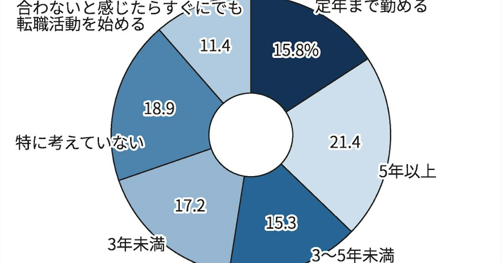
就活生の8割、転職前提で入社 ワークライフバランスを重視
夏の山岳遭難、763件に減少 死者・行方不明者は52人
夏の山岳遭難、763件に減少 死者・行方不明者は52人
わざわざマスコミ取材させて行うとか･･･もうその時点で。（以下略） デニーが負けた今、この団体を守ってくれる権力は無くなったわけで･･･まぁ、そういう事なんだろうね。
産経ニュース
@Sankei_news
辺野古転覆事故から半年、抗議団体の代表らが献花「ご遺族への謝罪、早めに実現願う」
https://
sankei.com/article/202609
16-IAMZ7JUHCFKL5D7WFDSIVDTAZE/
…
事故から半年となった16日、2隻を運航した抗議団体「ヘリ基地反対協議会」共同代表らが現場海域から約4キロ離れた「瀬嵩の浜」を訪れ、砂浜に置かれた石の上に花を手向け、手を合わせた。
明日配信開始の電子書籍も数多いなぁ･･･。
ポートフォリオサイトを作っててAIにリサーチさせてたら、その時は知らなかったところで紹介されてたりしたのを今更見つけたりしてオモロい
テスラさんがリポスト
ここって少し前にトラックが暴走して石屋川に突っ込んだとことつい先日もトラックが暴走したとこじゃん……
ここは魔の谷間だな……
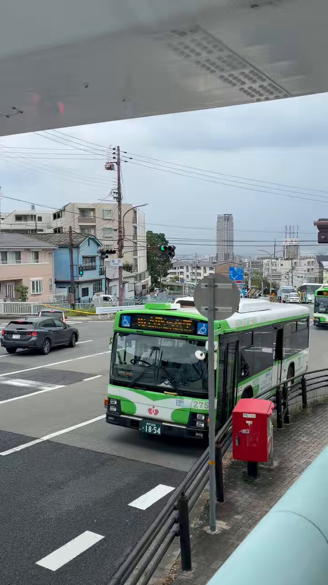
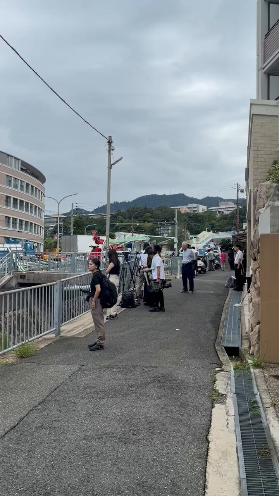
たびの助
@kobenoossan
今朝も鶴甲は通行止めでした。
丁度解除されたみたいで現在はギリ流れてます。
交差点「高羽」で事故。ボロボロの土砂満載のトラックが市バスに。バス停も破損。
ご安全に！
神戸市灘区
TGS紹介動画が来るのね
MetaのザッカーバーグCEO、AIの協調減速論に「各社が自ら動けばいい」
MetaのザッカーバーグCEO、AIの協調減速論に「各社が自ら動けばいい」
X民「フランスにある数億円規模のオークション、ノリで安く入札してみるわ！」→とんでもないことになるｗｗｗｗｗｗ #雑談・その他の話
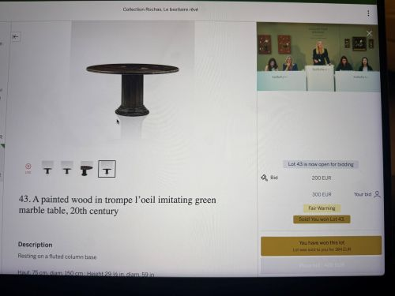
X民「フランスにある数億円規模のオークション、ノリで安く入札してみるわ！」→とんでもないことになるｗｗｗｗｗｗ - オレ的ゲーム速報@刃の記事ページ
jin115.com
最大6人協力のカオスなラーメン屋経営シム『Japanese Ramen Simulator』9月28日Steam早期アクセス開始！ラーメン評論家や泥棒も来店
https://
gamespark.jp/article/2026/0
9/16/172349.html?utm_source=twitter&utm_medium=social&utm_content=tweet
…
ときには強敵となるラーメン評論家や泥棒までやってきて、火災が発生することも。トラブルは手裏剣や消火器を使って対処。
暑さを遮り、冷気は遮断。1年中使える窓用シートを実際に貼ってみた BuyPR
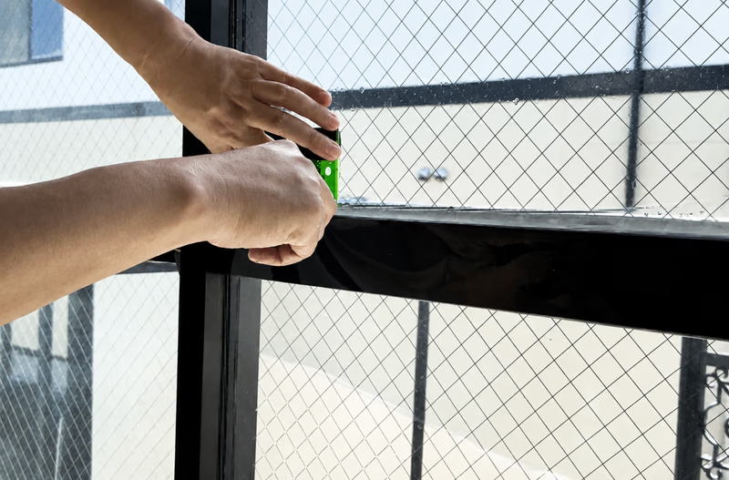
暑さを遮り、冷気は遮断。1年中使える窓用シートを実際に貼ってみた | ギズモード・ジャパン
ITmedia NEWSさんがリポスト
GMOの“有料AIでも東大生なら無料”、なぜ？ 同社の回答は
※GMO天秤AIからの回答を追記しました。

「東大生無料」AIサービスが話題 GMO系列 「本サービスは東京大学とは無関係」
本日の現場です。
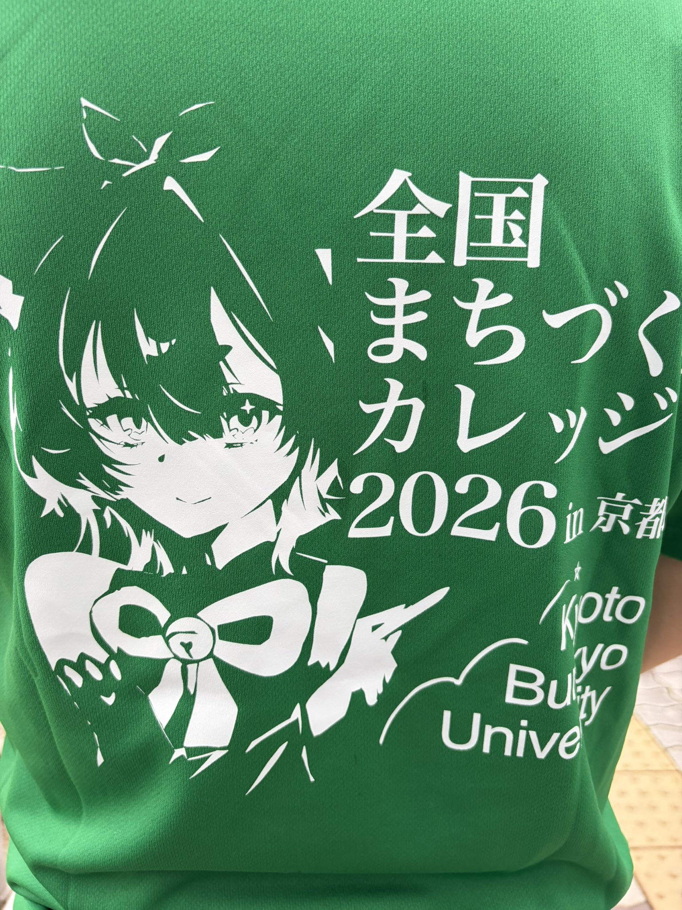
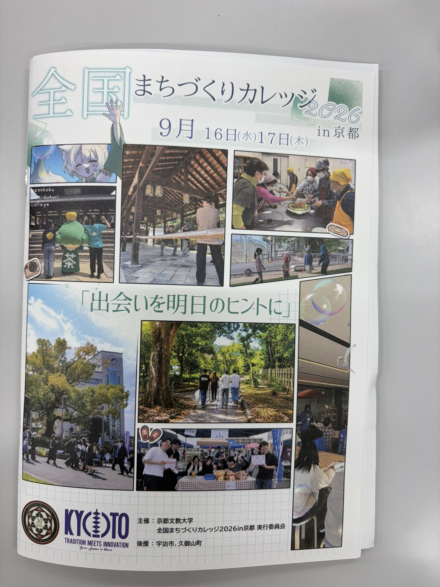
『ポケモン』“へんしんが苦手なメタモン”がチャームになって登場！ピカチュウ、ヒトカゲなど全5種の「めじるしガチャ」発売
https://
gamespark.jp/article/2026/0
9/16/172348.html?utm_source=twitter&utm_medium=social&utm_content=tweet
…
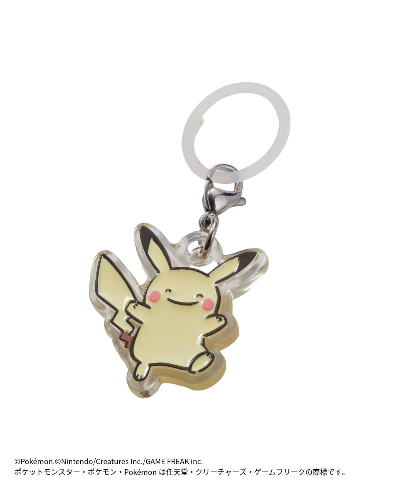
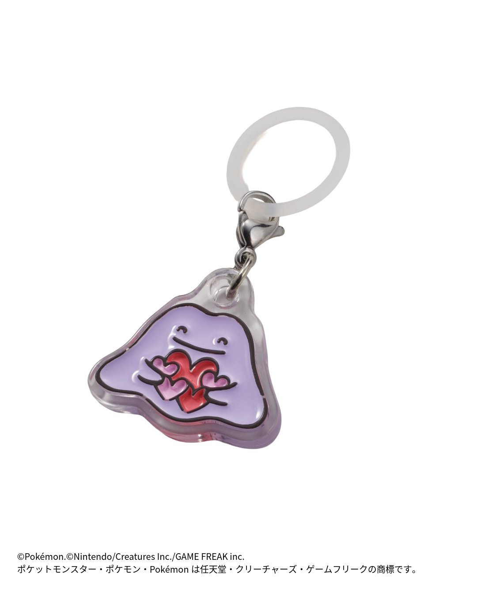
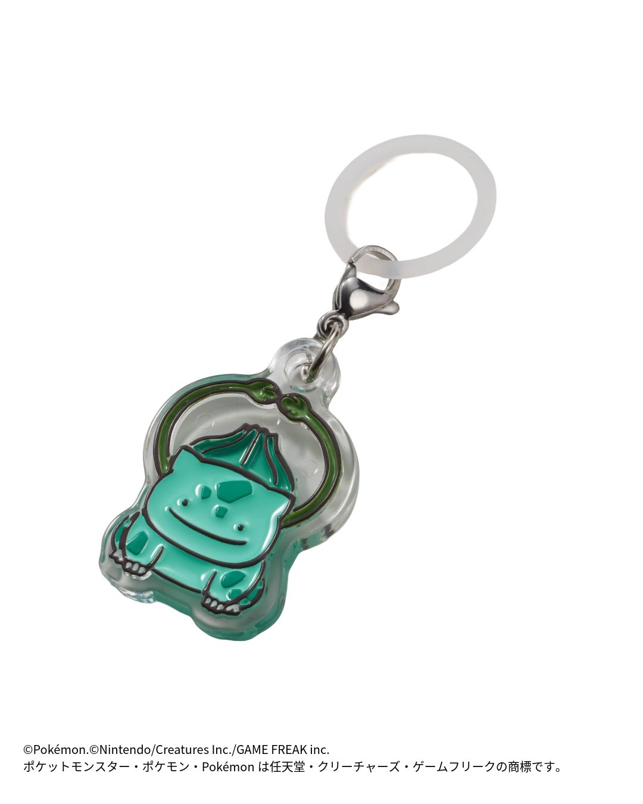
【悲報】高校教諭さん、生徒と共に空き巣＆窃盗未遂容疑で逮捕
■都立高校教諭 木村涼介(26)容疑者
・勤務先の男子生徒2人と一緒に70代男性宅に侵入し窃盗を働こうとした疑い
・住人不在とみて窓から侵入も、買い物袋を見つけて住人を警戒し逃走
・生徒に対し、狙い目の金品や盗品をフリマサイトで捌
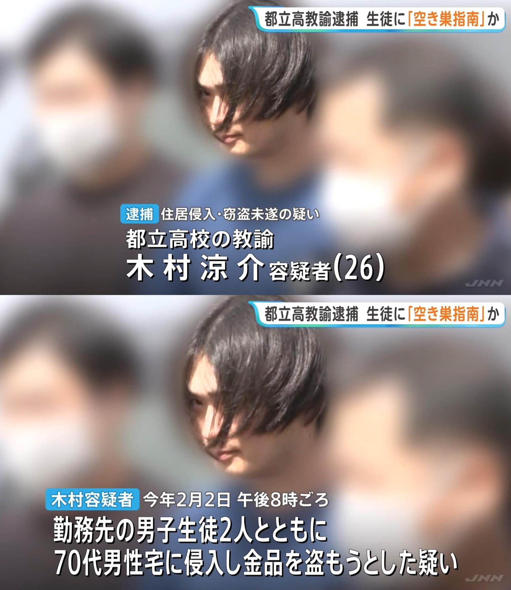
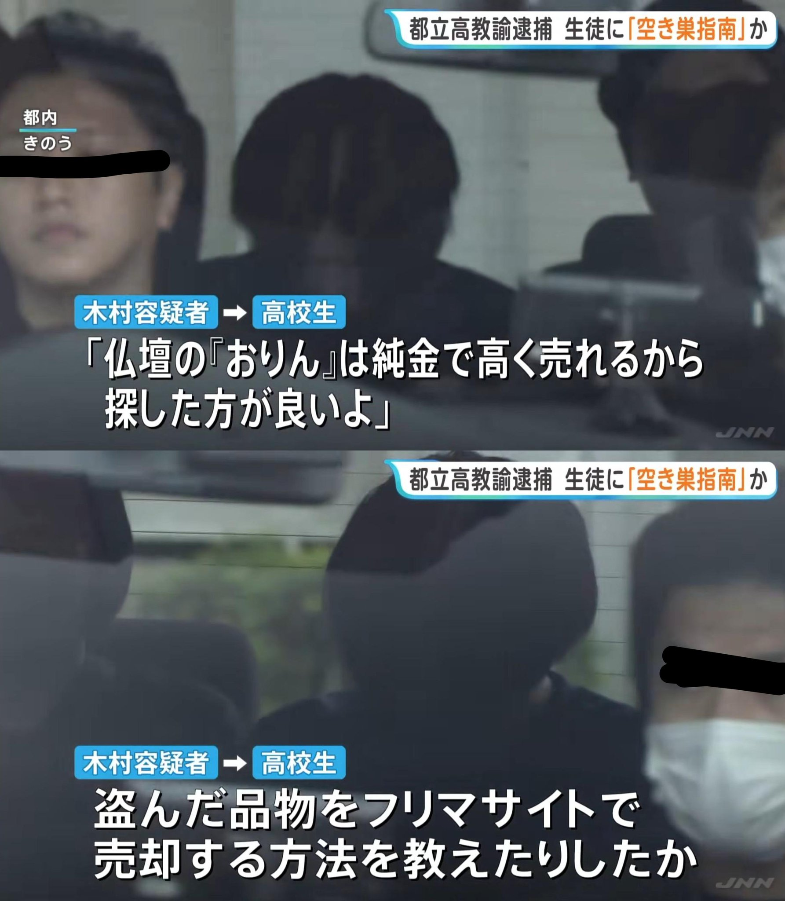
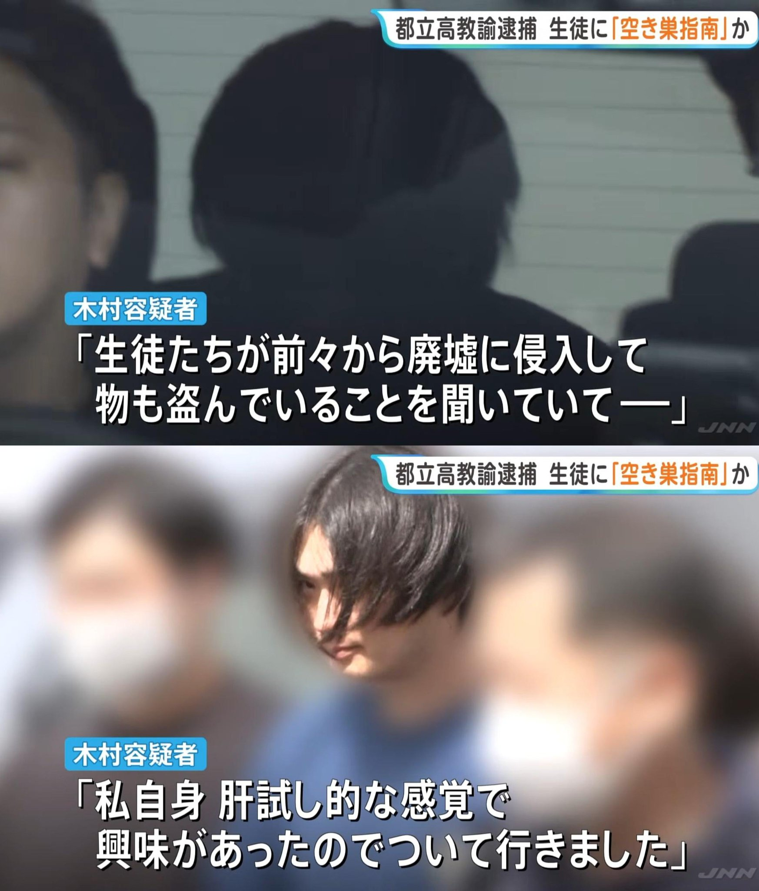
ジャングリア沖縄 今月で潰れる可能性
ジャングリア沖縄 今月で潰れる可能性 : ハムスター速報
Apple Watch見つけたあああ！！
シリーズ6は一つ前のwatchOS 26までのサポートか。。
ゆーじ
@yuujii
TGS期間中もApple WatchからClaudeでポチポチして開発できる気がするので頑張って探さねば
「AION2」，初の事前テストを9月17日より開催
https://
4gamer.net/s/G044032.2609
16013
…
・初日は9月17日22：00から18日4：00まで，2日目は9月19日4：00から10：00までプレイ可能
・事前の登録や招待は不要で，すべてのプレイヤーが参加可能
・TGS 2026では6社のブースで試遊可能
【悲報】中国で開催された安全保障会議、世界中が招待されるも日本は鳩山元首相しか参加させてもらえない・・・ #韓国・中国

【悲報】中国で開催された安全保障会議、世界中が招待されるも日本は鳩山元首相しか参加させてもらえない・・・ - オレ的ゲーム速報@刃の記事ページ
jin115.com
DeepseekやMoonshotAIはAnthropicのClaude転送暴露に対して何も釈明を出してこないけど、黙ってるって事は全面的に認めたようなもん。勝手にデータをClaudeに流すかもしれないなんて、利用規約には当然ながら書かれてない。ユーザからどんだけ訴えられてもおかしくない
やはりスト6始めるしか
日本貿易会・岡藤会長「もう少し円高に戻すべき」 為替水準に言及
日本貿易会・岡藤正広会長「もう少し円高に戻すべき」 為替水準に言及
深津 貴之 / THE GUILD, noteさんがリポスト
Studio.DropをClaude CodeとMCP経由で繋いで操作する具体的な方法解説してくれてます！
【画面で解説】Studio.Dropで既存サイトを取り込んでAIで編集する手順｜Claude Code連携まで｜ノーコードサロン
TVアニメ『魔女と傭兵』PV第1弾
監督：江崎慎平
シリーズ構成：谷村大四郎
副シリーズ構成：入江信吾
キャラクターデザイン：松本圭太
アニメーション制作：エイトビット
意外と冒険者ものの作品だったりする？楽しみ。
TVアニメ『魔女と傭兵』PV第1弾
映像が1秒もない伝説のゴールをAIで“復元”。動きは正直、ちょっと懐かしウイイレ感
映像が1秒もない伝説のゴールをAIで“復元”。動きは正直、ちょっと懐かしウイイレ感 | ギズモード・ジャパン
色褪せにくさを追求。「芯まで黒い」黒Tシャツならずっと着れる BuyPR
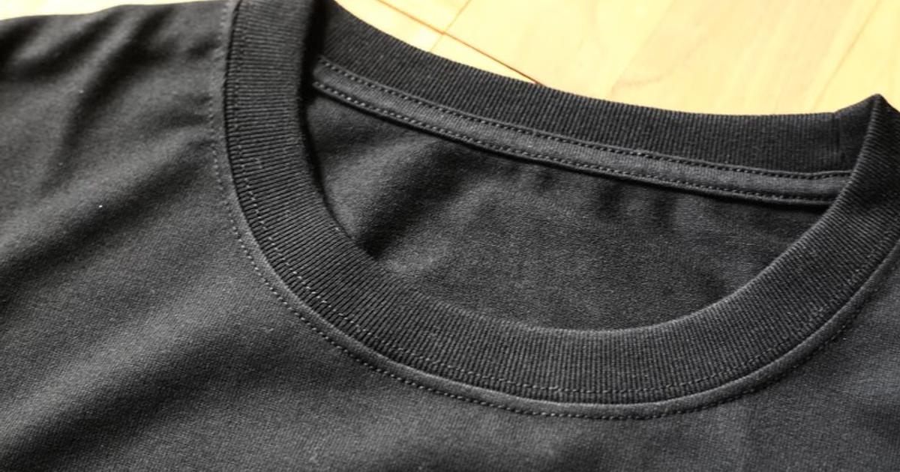
色褪せにくさを追求。「芯まで黒い」黒Tシャツならずっと着れる | ギズモード・ジャパン
Nintendo Switchに本体情報漏えいの脆弱性。アップデートしよう！
Nintendo Switchに本体情報漏えいの脆弱性。アップデートしよう！ | ギズモード・ジャパン
「Apex Legends」，「ストリートファイター6」とのコラボイベントを9月23日から開催。ワイルドカードでスト6テーマの戦いが楽しめる
https://
4gamer.net/s/G044914.2609
16010
…
スパロー×リュウなど，全8種類のキャラクタースキンが登場
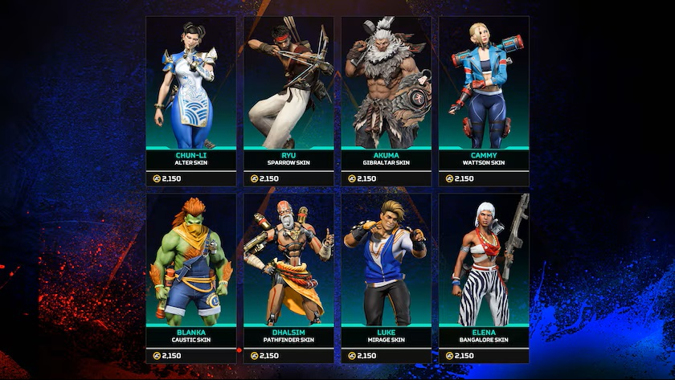
日本ゲーム大賞2026の大賞は「ぽこ あ ポケモン」に決定。今年で最後となるゲームデザイナーズ大賞は「文字遊戯」に
https://
4gamer.net/s/G999104.2609
16012
…
ブレイクスルー賞は「PRAGMATA」，ムーブメント賞は「めっちゃカメレオン」が受賞した
TLに流れてきたこれ
赤線までは理解できたけど
下のこれが唐突すぎてガチで理解できない
こんな客がかなりいらっしゃる地域怖すぎるでしょ・・・
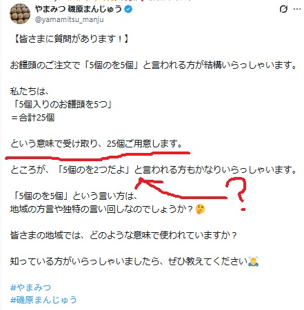
東京電力の10月電気代、9300円で過去最高 補助金終了と中東緊迫で
東京電力の電気代、10月は過去最高の9300円 補助金終了と燃料高で
ギャンパレがゲストだと！？
#ダレハナ
プレゼントはこちら！特製ガジェットつつみ布！
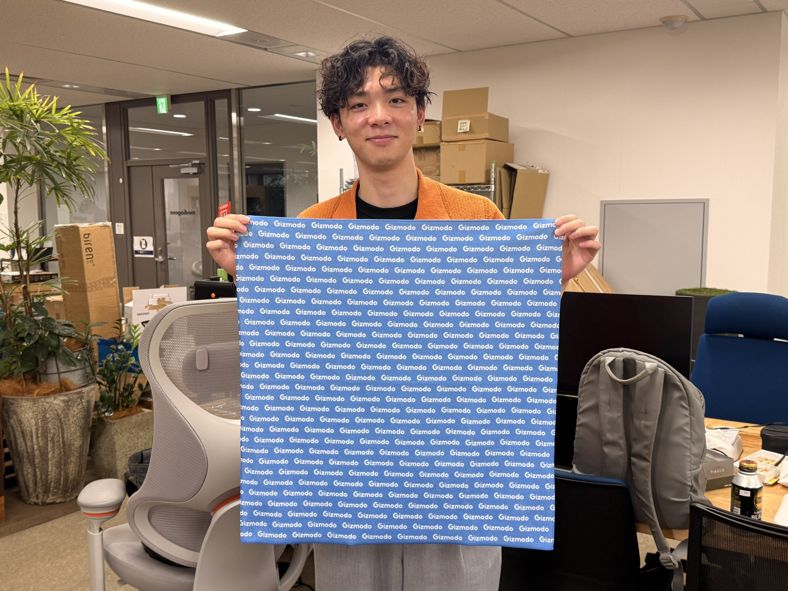
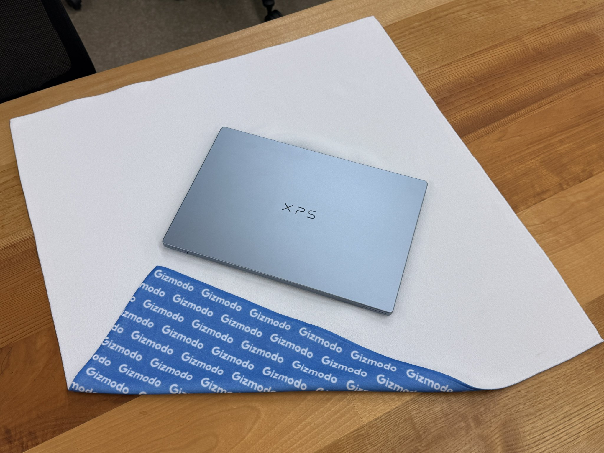
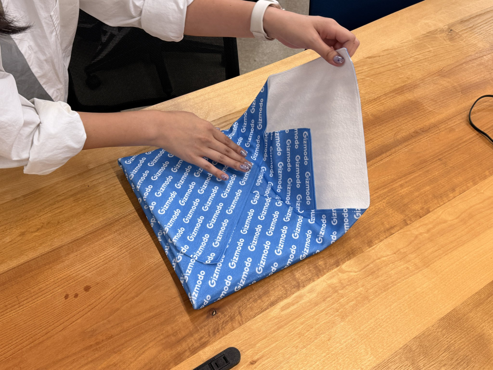
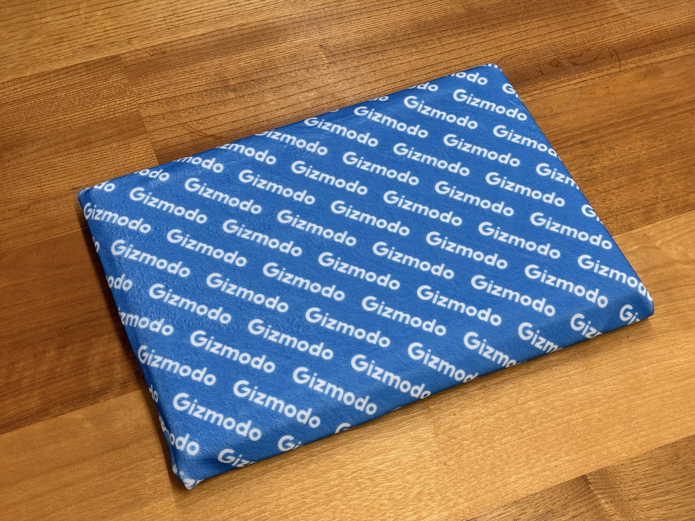
生徒と空き巣未遂、容疑の都立高校教諭逮捕 一部否認「肝試し感覚」
生徒と空き巣未遂、容疑の都立高校教諭逮捕 一部否認「肝試し感覚」
PC、高くなりすぎじゃない？
インフレ時代のPC選びで、本当に見るべきポイントとは。
Dell XPS 13を実際に触りながら、ギズモードのリチャードがデル・テクノロジーズの松原大さんに“高コスパの秘密”を全部聞きます。
軽さ、ディスプレイ、CPU、NPUまでクイズ形式で徹底解剖。
【9/18開催！】DellのXPS 13がどうやら“高コスパ”らしい？ ギズモードと一緒に生イベントで深堀りしよう | ギズモード・ジャパン
「忌品管理部」，Steamで配信開始
https://
4gamer.net/s/G102092.2609
16008
…
・母の死に隠された謎と施設に眠る闇に迫る物語を描いたアドベンチャーゲーム
・母が働いていたのは，さまざまな人の遺品を管理する施設
・プレイ時間は1周10分から15分程度
・リリース記念セールも実施中
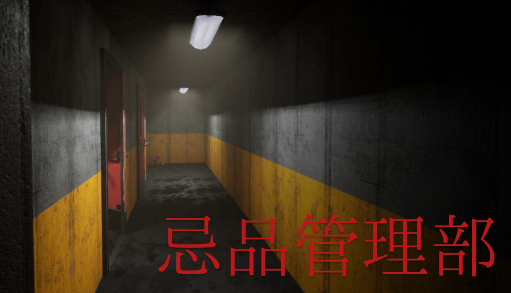
「Wo Long 2」，2027年3月4日発売決定。長坂のオープンフィールドを遊べるα体験版を本日配信，最大3人のオンライン協力にも対応
https://
4gamer.net/s/G101429.2609
16011
…
・曹操軍や妖魔と戦い，劉備軍と共闘
・体験版クリアで製品版用装備「鳳雛の兜」を獲得
・α体験版は9月30日まで。Switch2版は対象外
［インタビュー］ADVを作るうえで最も大切なこととは？ 「ミステリーの歩き方2」ディレクターの金沢十三男氏に聞く，“ミステリーアドベンチャーの作り方”
https://
4gamer.net/s/G100862.2609
10039
…
「ミステリーの歩き方2」は9月17日リリース。発売直前にシリーズのこだわりや金沢氏の哲学などを聞いた
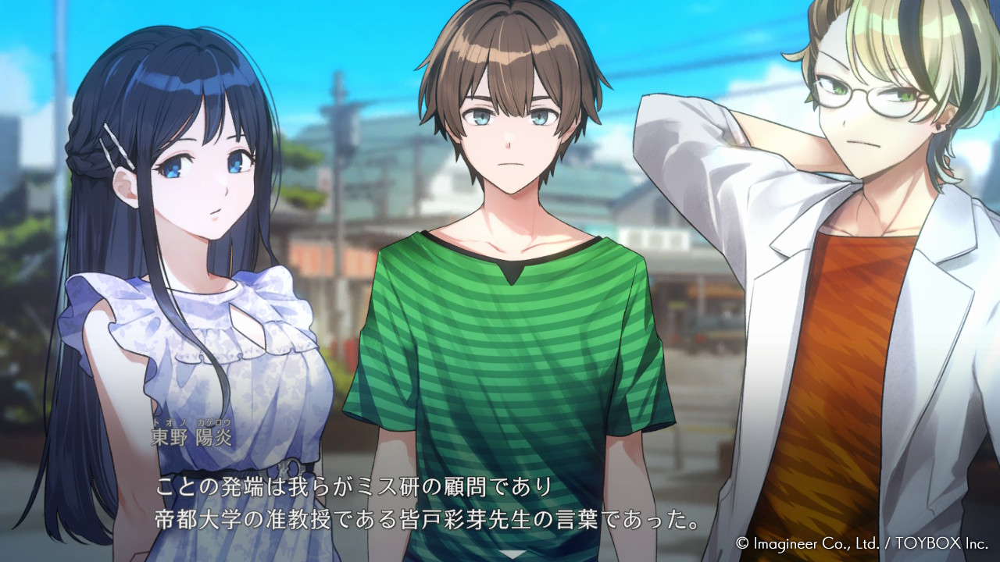
Twitterのオススメ欄ばっか見るようになった今、そういえばかつて毎日流れてきてたTwitterバズ漫画のあれやこれやがまったく流れてこなくなった気がする。代わりにハンターハンターを１ページ無断転載してなんかコジツケみたいな考察言ってるツイとかが流れてた
高田みづえがこの辺に住んでたね
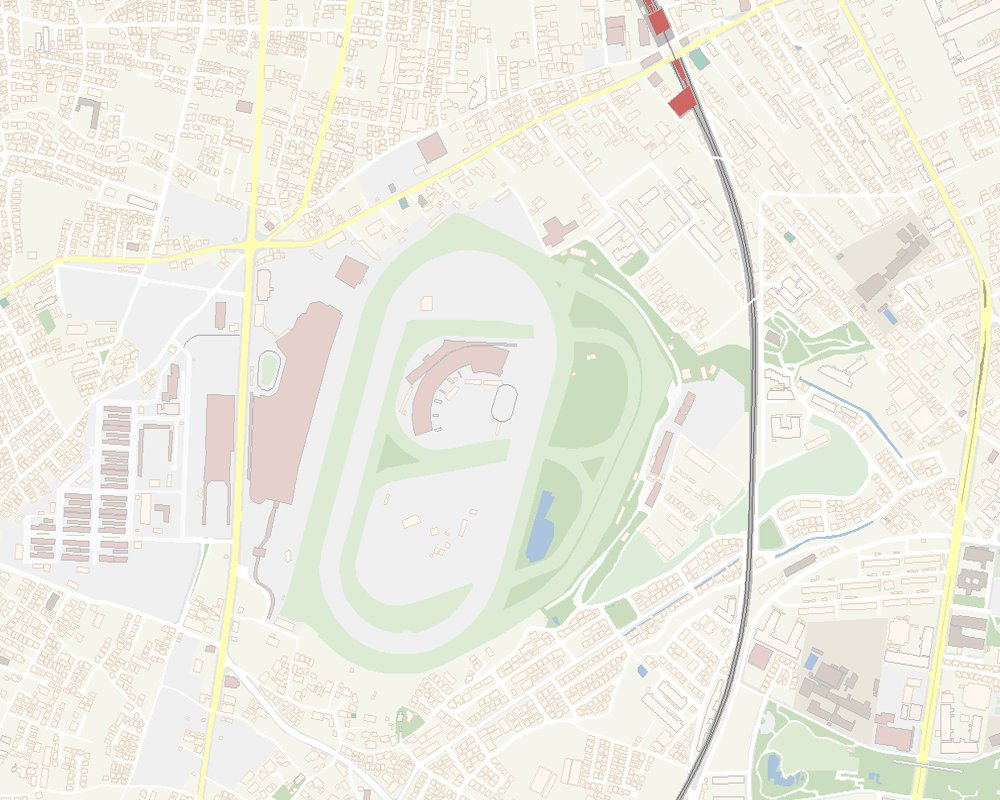
ジオテクノロジーズ株式会社【公式】
@geotofficial
【#地理好きさんへの挑戦状 再】
ここはどこの地図でしょう？
本日は「#競馬の日（#日本中央競馬会発足記念日）」です。
「#競馬場マップ」だけで日本の地域（競馬場）を当ててください。皆様のご挑戦をお待ちしております！
ラゾーナ川崎の島村楽器に寄るのやめるか…
神戸新聞杯の馬券も買いたかったのに…
夜勤明けは家で大人しくくつろぎます。
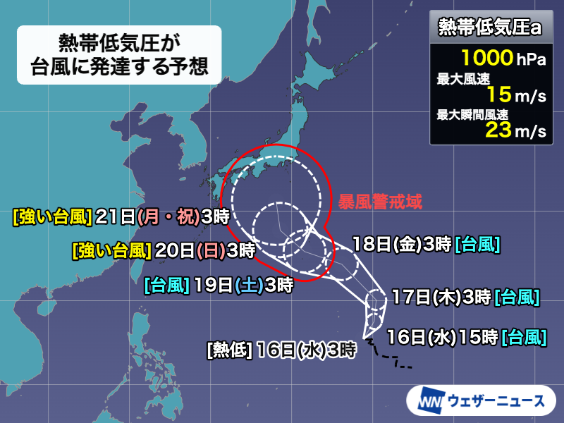
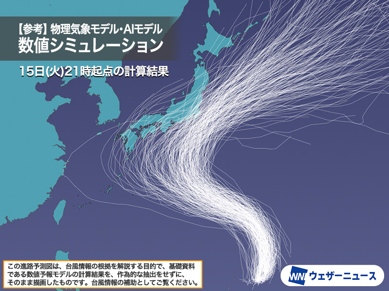
ウェザーニュース
@wni_jp
【台風発生予想】
16日(水)3時現在、マリアナ諸島で発達中の熱帯低気圧について気象庁は「12時間以内に台風に発達する見込み」と発表中。次に発生すると「台風25号」
今週末に小笠原へ接近、シルバーウィークに本州方面へ北上する可能性があり、今後の進路に注意が必要です。
https://
weathernews.jp/news/202609/16
0051/
…
［インタビュー］Dynamis Oneが「アストラエ・オラティオ」で目指す，“新伝奇”のあるべき形とは。hwansangことKim In氏が，その狙いとオリジンを語る
https://
4gamer.net/s/G097529.2609
12001
…
コミックマーケットへの出展に合わせて来日したKim In氏に，本作の世界観を聞いてみた
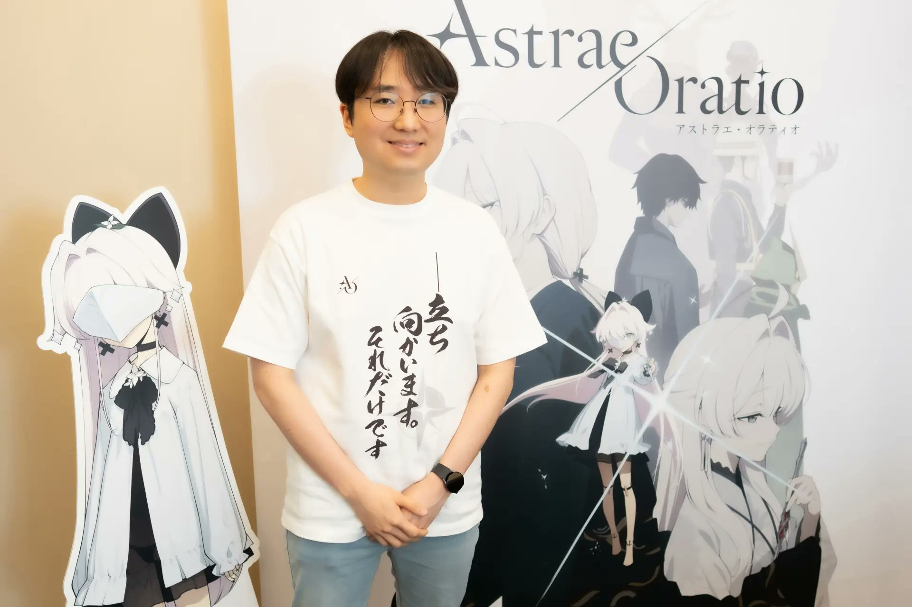
【TGS2026】5年連続出展の重鎮・GALLERIA。ハイパフォーマンスPCを体験できるアクティビティ＆豪華出展情報が発表！
https://
gamespark.jp/article/2026/0
9/16/172347.html?utm_source=twitter&utm_medium=social&utm_content=tweet
…
#PR
【TGS2026】5年連続出展の重鎮・GALLERIA。ハイパフォーマンスPCを体験できるアクティビティ＆豪華出展情報が発表！ | Game*Spark - 国内・海外ゲーム情報サイト
「クイズアクションRPG ウィズジェネレーション」の最新情報を実機プレイで紹介。開発ディレクターがTGS 2026の4Gamerブースに登壇
https://
4gamer.net/s/G103653.2609
15056
…
開発ディレクターの福重潤哉氏を招き，実機プレイを交えつつ最新情報をお届け
テスラさんがリポスト
𓇠𓇠𓇠
#天幕のジャードゥーガル
EDメイキング映像公開！
𓇠𓇠𓇠
エンディングアニメーションを手がける
#青瀬きいろ (
@AOSE_KIIRO
)さんより
水彩画メイキング映像が届きました！
https://
anime-jaadugar.com

50歳男性3割が未婚時代 独身前提で家購入？結婚に備え先延ばし？

50歳男性3割が未婚時代 独身前提で家購入？結婚に備え先延ばし？
髪を切ってさっぱりして、お昼ごはんは松のやのリブロースかつ&唐揚げ定食をいただきます
さて、この後はどうしようかな
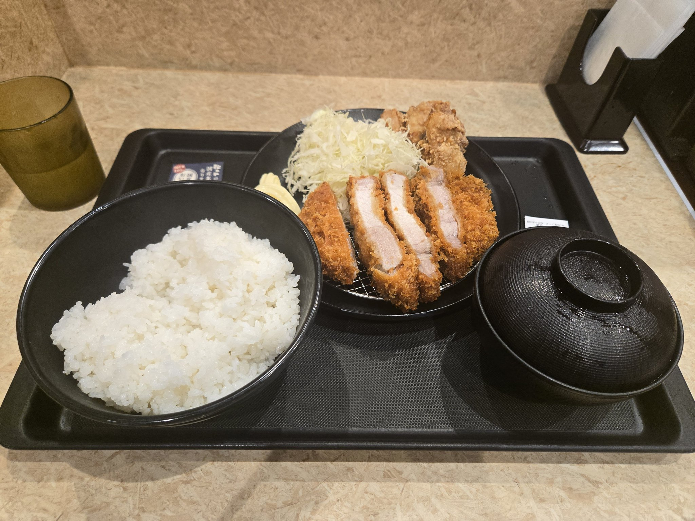
ドコモ、34万ユーザーの電話番号などAmazonに無断提供 人的ミスで同意事項を削除
ドコモ、34万ユーザーの電話番号などAmazonに無断提供 人的ミスで同意事項を削除
恋アス原作通りですごい
Yahoo!ニュース
@YahooNewsTopics
【高校生が小惑星発見 学校名つける】
https://
news.yahoo.co.jp/pickup/6595458
彼らには緊張感がない
そして全て他人事
国のせい、JAのせい、消費者のせい、メーカーのせい
守りすぎていたんだ
突き放して努力させる気から叩き込もう
付いてこないならやめてもらう
コンビニでバイト出来る能力もあるか疑問だが
大阪ぶどう
@japan_grape
農家はアホなんでしゃーないので。マジ卍で脳みそが溶けてると思う。違う作物でも同じようなことを毎年繰り返しているから x.com/kelog21/status…
一般人はそんな暇じゃねぇ
ニート集めて福祉作業でやってろ
sherrykk1153112リア充撲滅委員会書記
@sherrykk1153112
良かったら土地と機材貸すのでやってみませんか？
自由主義とやらで、やれるもんならやってみな x.com/kelog21/status…
今の時代は無教養でも金がなくても楽しめる娯楽に溢れてるぞ。
dアニメストアは月額660円。
TwitterもTikTokもYouTubeも0円。
無教養な若者の間でも今どき酒、タバコ、ギャンブルは流行ってない。
教養があればわかる話だが？
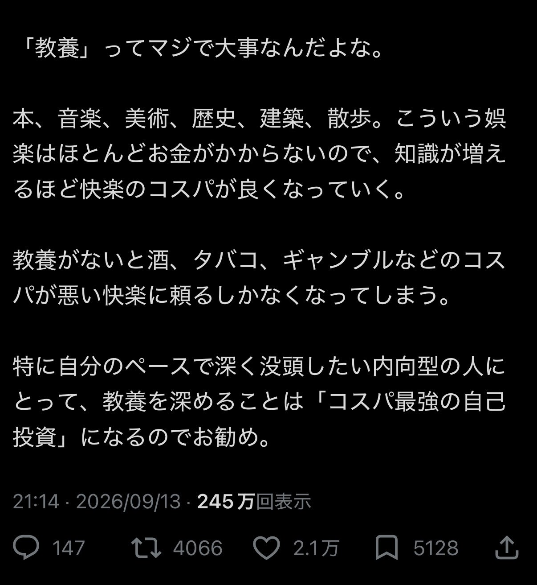
最大100人の三つ巴FPS『WARDOGS』発売から5日で200万本突破！全戦場でのキルカウントは1億2,000万超え、評価は“非常に好評”に上昇
https://
gamespark.jp/article/2026/0
9/16/172346.html?utm_source=twitter&utm_medium=social&utm_content=tweet
…
・開発チーム「友達と一緒に遊びたいと思えるゲームを作りました」
・ヘッドショット数は3,300万

農家に信頼はもう無い
平時ですら有事を自作自演して値段を釣り上げたのだ
有事になれば便乗してまた米を隠すだろう
こんな奴らに食糧の安全保障を任せることは不可能
不断の努力で築いた信頼は一瞬で崩壊するが、それをゼロから取り戻すには途方もない努力と時間がかかる事を思いしれ
治章
@dpLLfw50h1XWzle
この方は品物を安く買い叩き続けられることを信頼と呼ぶらしい。 x.com/kelog21/status…
ベルリン / ブランデンブルクのゲーム業界と日本のクリエイターをつなぐ交流イベント「Berlin meets Tokyo at 404 Not Found」が渋谷で開催
https://
4gamer.net/s/G999104.2609
16005
…
ゲーム制作 / 販売だけではなく，イベント運営や産業支援などの参加者も。共同開発や海外展開につながる新たな接点を作る交流会
ココピオくん男の子なの！？！？
去年あれだけ米価格釣り上げて、
今になって真犯人が次々現れたのに
「文句言われるのはおかしい」
は通用しない
長年築いてきた信頼を僅かな金でズタボロに破壊した業の報いを受けよ
自分たちで消費者が納得出来る価格で生産出来るまで超努力してマイナスから信頼を築き始めろ
何もかも舐めすぎ
とみおかしろー
@say46t
どうしても農産物価格を下げたいなら
農家に大規模化を強要するより
農機メーカーに合併して生産効率を上げろ（農機を安くしろ）って叫んだほうが早くない？
あ、それだとiPhoneみたいに逆に上がるのか？
なんにしろ農家にだけ好き勝手言うだけじゃ弱い者いじめとかわらんやろ
なるせひろのりさんがリポスト
辺野古転覆事故から半年、抗議団体の代表らが献花「ご遺族への謝罪、早めに実現願う」
https://
sankei.com/article/202609
16-IAMZ7JUHCFKL5D7WFDSIVDTAZE/
…
事故から半年となった16日、2隻を運航した抗議団体「ヘリ基地反対協議会」共同代表らが現場海域から約4キロ離れた「瀬嵩の浜」を訪れ、砂浜に置かれた石の上に花を手向け、手を合わせた。
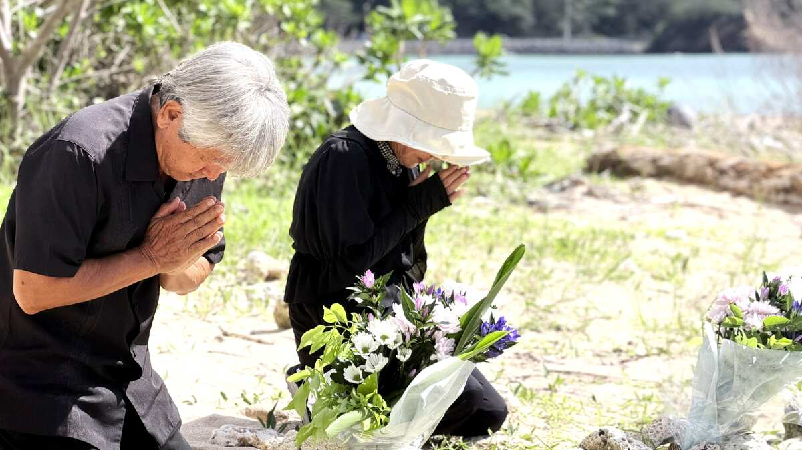
辺野古転覆事故から半年、抗議団体の代表らが献花「ご遺族への謝罪、早めに実現願う」
『モンハンライズや』『サイバーパンク2077』などがお買い得！ さらに「セット版」もセール中─あなたが選ぶのはどっち？【eショップ・PS Storeのお薦めセール】
https://
gamespark.jp/article/2026/0
9/16/172345.html?utm_source=twitter&utm_medium=social&utm_content=tweet
…
シタラちゃんのいたホラズム・シャー朝のジャラールッディーン君は滅ぼされても、ひたすら再起してトルイの晩年と同じくらいまでモンゴルに突撃をしてるから。
ふぇむ(せかんど！)
@000Amaurot
故郷を奪われた的な価値観で天幕を見てると変な議論するハメになる。シタラは滅ぼされた統治者でもなく、土地に紐付く民でもなく、「奥様の奴隷」で、主人を差し置いて生き残ってしまったから、モンゴルを壊す以外のゴールを持つことができないんでしょ。
日本製鉄、スロバキアに電炉新設 1600億円投じ欧州にグリーン鉄供給
日本製鉄、スロバキアに電炉新設 1600億円投じ欧州にグリーン鉄供給
南極大陸、鼻をつままれてもわからない、白い闇夜…
新しい構図の池だ！
故郷を奪われた的な価値観で天幕を見てると変な議論するハメになる。シタラは滅ぼされた統治者でもなく、土地に紐付く民でもなく、「奥様の奴隷」で、主人を差し置いて生き残ってしまったから、モンゴルを壊す以外のゴールを持つことができないんでしょ。
一番じゃなきゃダメな選挙で勝てなかっただけの気がする。15人全員トップ当選してないでしょ？
中野彰子
@Toki2199r
沖縄で共産党で地方選挙に立候補していた十五人全員が当選して、なぜ玉城デニー氏が落選するのだろう。からくりがあると感じるのは私だけじゃないはず。
＼いよいよ本日！／
#どこきみ 舞台挨拶付き 完成披露上映
劇場HP・窓口にてチケット販売中𓂃𓈒𓏸
￣￣￣￣￣￣￣￣￣￣￣￣￣￣￣￣￣￣
▥新宿ピカデリーHP：
https://
smt-cinema.com/site/shinjuku/
index.html
…
⠀
※無くなり次第終了となります。
⠀
映画『どこよりも遠い場所にいる君へ』
10月9日(金)公開
新宿ピカデリーの上映スケジュールを掲載しています。上映・公開予定作品の紹介や劇場の上映スケジュールだけでなく、映画のお得なキャンペーンやイベント情報、チケット購入方法など、知りたい情報が満載です！
smt-cinema.com
明日発売される『獣達のペレグリナティオ』第１巻。ちょっと原作者だからって先に読めるのズルくない？

妖怪の力を“着こなして”街を飛び回れ！新作ACT『KEMURI』新映像公開―「憑依アパレル」でド派手バトル
https://
gamespark.jp/article/2026/0
9/16/172344.html?utm_source=twitter&utm_medium=social&utm_content=tweet
…
妖怪と契約を結びその力を身にまとう「憑依アパレル」によって様々な能力を使いこなす様子などが確認できます。
くらまさんも本当は婚活なんてどうでもよくて、倹約術で目立ちたいんじゃないの？
婚活40連敗中も設定な気がする。
超倹約術を披露されて本当に困るのは生活保護世帯だったりして
令和の平井銀二@ $JMIA 683183株日本人最多保有者
@NtWialNvGxnHaw0
これ何が面白いって勝倉さん側からくらまさんに頼んでいる案件なんだよな。これだけ議論が活発に行われてバズったら、数百万払ってもお釣りが出るレベルで効果ありよ。策士。 x.com/2020_nusay/sta…
カステラを乾燥させてから作る伝統のお菓子
「もう一度食べたくて注文」 長崎の“カステラの親戚のようなお菓子”が高評価「上品な仕上がり」「小ぶりで重くない」【実食レビュー】
https://
nlab.itmedia.co.jp/research/artic
les/4010686/
…
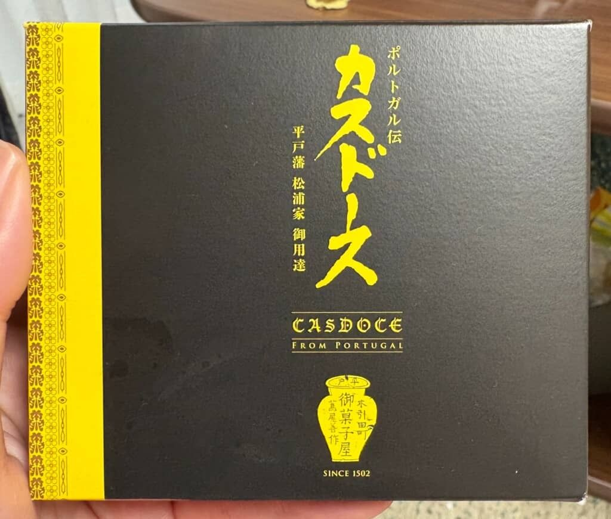
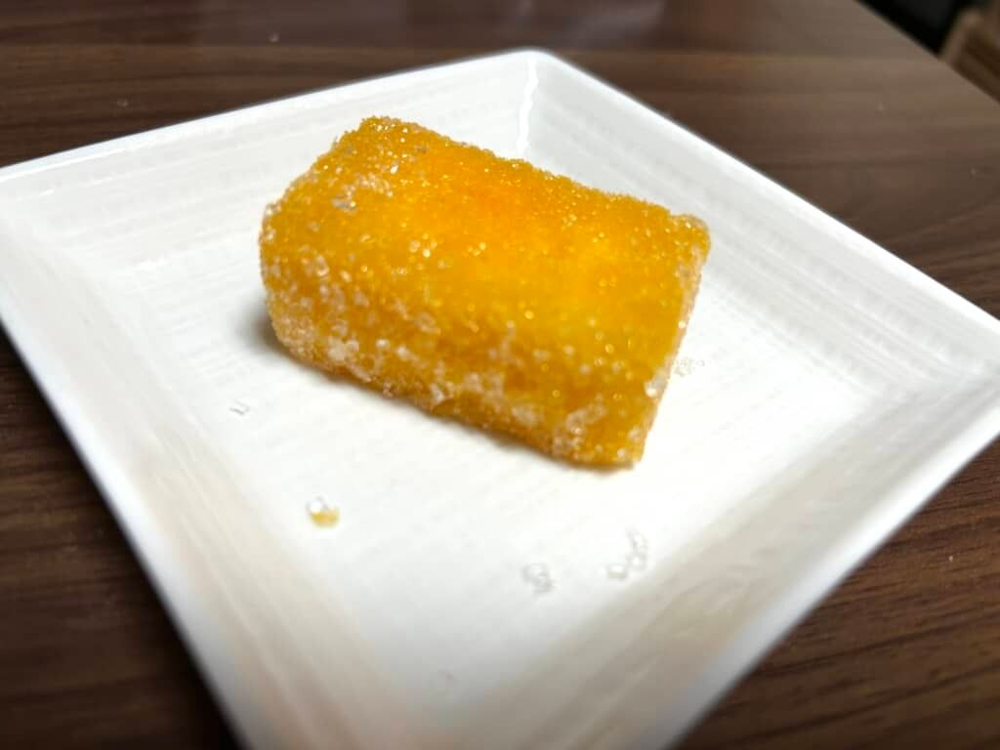
チャレンジライブイベント「未来想送曲」開催中
イベントPを集めることで、★3湊友希那、★2氷川紗夜に出会えます
イベントは明日の20:59まで！お見逃しなく
#バンドリ #ガルパ
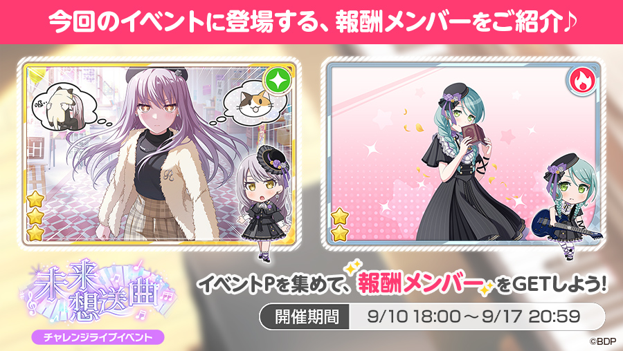
三越伊勢丹のアイマスおせち、去年の千早ちゃん食べましたけど一流百貨店のおせちなだけあってちゃんとおいしいですし、大人ふたりなら1食で食べきれると思います。おせちって1食で食べるもんじゃないっすけど笑。
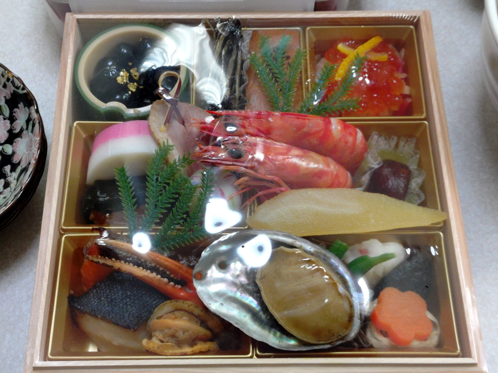
人を嗤う時に自虐的なところがないと"必死にツイート軍団"になるんだよ
若い時に年功序列を否定して、実際に経営者にやめさせたのに、「歳とっても給料上がらない」なんて言ってる人なんでいるのか不思議
自分がかつて経営者の楔を解き放った張本人なのに
成果を出し続けるしかないじゃん
自分基準ではない、
社長、上司に評価される成果を
でんけん@JTC辞めた
@KenTana2020
年功序列はいいぞ
25歳
「無能なおっさんの方が給料高いのおかしい」
35歳
「子どもが熱出したので休みます」
45歳
「親の介護で早退します」
55歳
「年功序列って悪い制度じゃないよ」
シリーズ初の日本路線も！実在路線を走る鉄道シム『Train Sim World 7』発売―無料スターター版も配信開始
https://
gamespark.jp/article/2026/0
9/16/172343.html?utm_source=twitter&utm_medium=social&utm_content=tweet
…
・イギリス・ドイツ・フロリダの実在3路線を収録
・貨物輸送モード、ライブウェザー、シンプル操作を新搭載
・PC版はDLSS 4.5/FSR 4・DirectX 12対応で描画品質も向上
モニカのライブに影響が...!?
勘弁してくれ…
ウェザーニュース
@wni_jp
【台風発生予想】
16日(水)3時現在、マリアナ諸島で発達中の熱帯低気圧について気象庁は「12時間以内に台風に発達する見込み」と発表中。次に発生すると「台風25号」
今週末に小笠原へ接近、シルバーウィークに本州方面へ北上する可能性があり、今後の進路に注意が必要です。
https://
weathernews.jp/news/202609/16
0051/
…
能登では誤診の後に有給休暇を取って帰った産科医が猛バッシングを受けて辞めちゃった
そしたら誰も産科医がいなくなって、出産近づいたら七尾の町まで引っ越す妊婦が増えた
それ以来、能登は今も産科医不在地域です
哲学ニュースnwk
@nwknews
【物議】担当患者が危篤なのに「夕方5時になったから」と帰宅する若手医師…「命を救う使命」より収入・待遇を重視する時代に
https://
nwknews.jp/archives/62582
95.html
…
アイマスおせち、去年の千早ちゃんの時よりおせちのバリエーション増えている！オトンが予約まだしていないようなら今年も買うか〜？
【期間限定無料プレイ】『ディアブロ IV』Steamにて9月22日2時までフリープレイ！販売価格も75％オフで最安値を更新
https://
gamespark.jp/article/2026/0
9/16/172342.html?utm_source=twitter&utm_medium=social&utm_content=tweet
…
ゲーム本体は6,700円→1,675円の75%オフセール中。
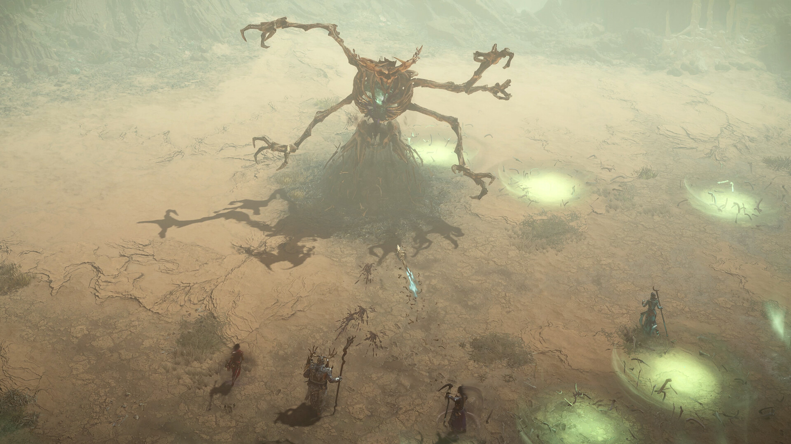
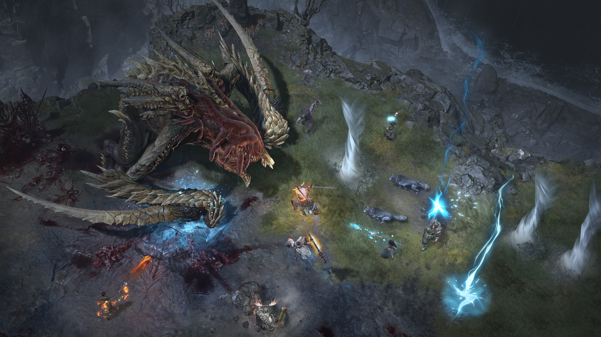
私が毎日の仕事に使うPCとして、ほとんど理想的な1台。Dell XPS 13
私が毎日の仕事に使うPCとして、ほとんど理想的な1台。Dell XPS 13 | ギズモード・ジャパン
3COINSのシリコンホルダー。雨天時に車へ荷物を積み込むときの救世主だった
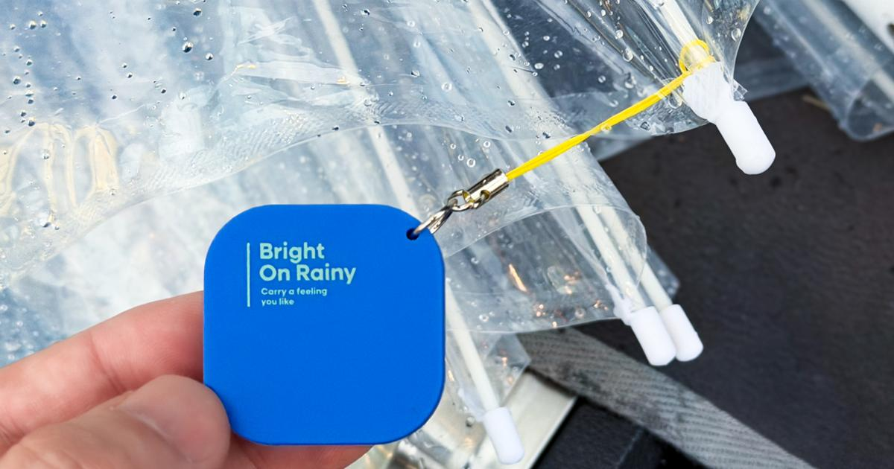
3COINSのシリコンホルダー。雨天時に車へ荷物を積み込むときの救世主だった | ギズモード・ジャパン
リーク情報が続々。Galaxy Tab S12シリーズは10月7日発売説が有力？
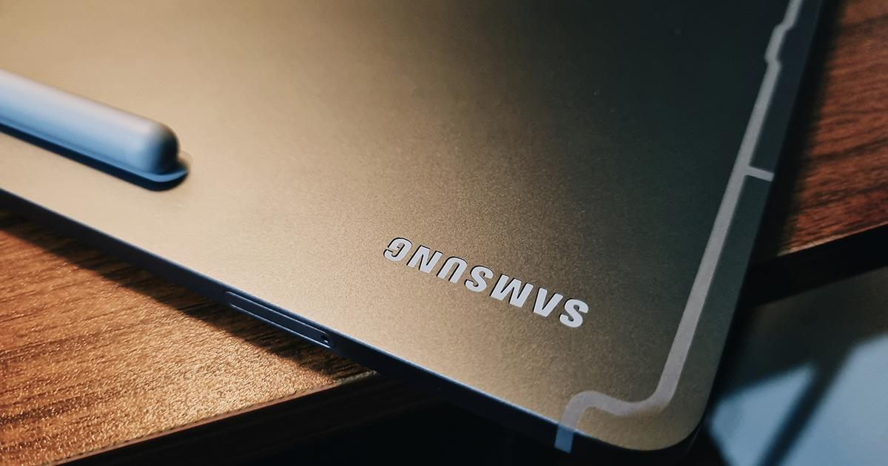
リーク情報が続々。Galaxy Tab S12シリーズは10月7日発売説が有力？ | ギズモード・ジャパン
キッチンや車内に置きっぱなしでOK。スタイリッシュな小型消火ツール BuyPR
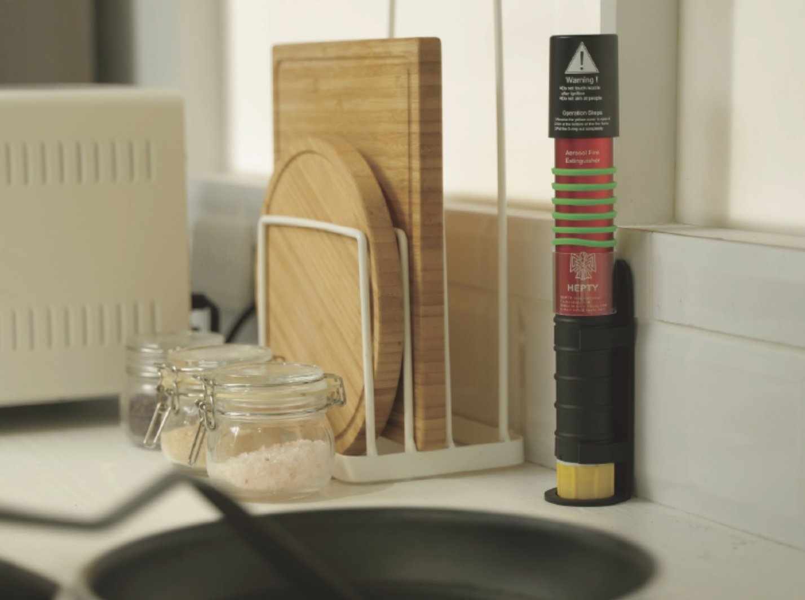
キッチンや車内に置きっぱなしでOK。スタイリッシュな小型消火ツール | ギズモード・ジャパン
スナイパー小屋の映画化がされそうになってたの面白すぎる。
しかも現代舞台やん！！そんなこともやるのか！！
第四境界コラボガチ！？！？！？！？
シンデレラ単独オケコンすごーい！
なるせひろのりさんがリポスト
マンガ原稿をクラウドに上げただけでGoogleアカウントBAN Gmailも道連れ……日本では合法なのになぜ？

マンガ原稿をクラウドに上げただけでGoogleアカウントBAN Gmailも道連れ……日本では合法なのになぜ？
ポルノが悪いんじゃ無くてポルノですって露骨さをどれだけ隠せるかの努力をして欲しい
ポン☆潤々さんがリポスト
••┈┈┈┈┈┈┈♪┈┈┈┈┈┈┈••
THE IDOLM@STER CINDERELLA GIRLS
15th ANNIVERSARY ORCHESTRA CONCERT
～ シンデレラの演奏会 ～
••┈┈┈┈┈┈┈♪┈┈┈┈┈┈┈••
2027年1月11日(月・祝)・12日(火)
＠パシフィコ横浜 国立大ホール
アイドルマスター シンデレラガールズ【ブランド公式】
@imas_CGofficial
••┈┈┈┈┈┈┈♪┈┈┈┈┈┈┈••
THE IDOLM@STER CINDERELLA GIRLS
15th ANNIVERSARY ORCHESTRA CONCERT
～ シンデレラの演奏会 ～
••┈┈┈┈┈┈┈♪┈┈┈┈┈┈┈••
2027年1月11日(月・祝)・12日(火)
＠パシフィコ横浜 国立大ホール
#デレマスオーケストラ
ステーキのあさくま、「スキマ店長」採用 管理職の長時間労働を是正
https://
nikkei.com/article/DGXZQO
FD060550W6A900C2000000/?n_cid=SNSTW005&n_tw=1789456574
…
スキマ店長は厨房の管理や発注などほぼ全ての業務を担当します。4時間程度を想定しており、既存の店長はその間休憩したり個人業務に集中したりできます。
ステーキのあさくま、「スキマ店長」採用 管理職の長時間労働を是正
ムビチケの詳細はこちら
ムビチケ｜THEATER 劇場情報｜Netflix映画『超かぐや姫！』公式サイト
ガラクタで謎の生き物を作り魔改造する物理シミュレーション『Legacy Code』Steamで2027年リリースへ。どんなパーツの組み合わせでも動くエンジン搭載
https://
gamespark.jp/article/2026/0
9/16/172341.html?utm_source=twitter&utm_medium=social&utm_content=tweet
…
どんな組み合わせでも必ず動く独自物理エンジン採用。TGS2026のセンス・オブ・ワンダー・ナイトにも選出。
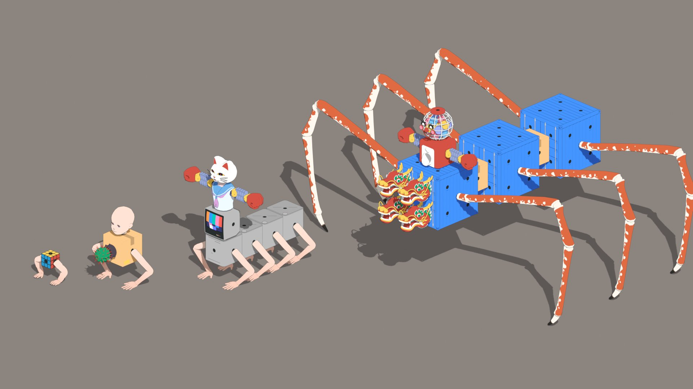
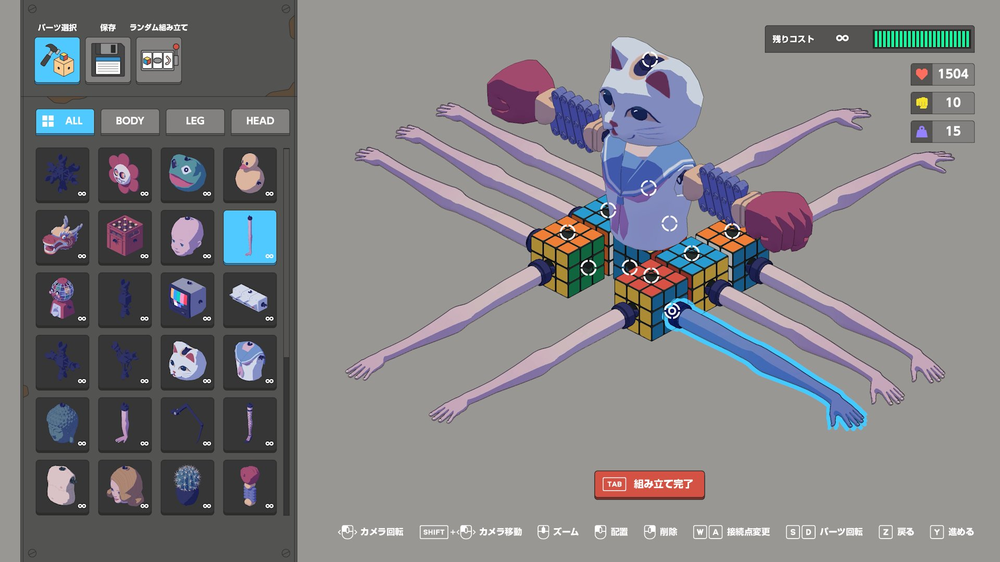
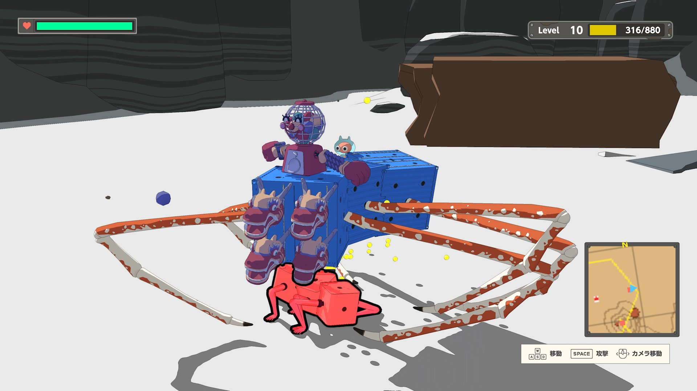
溝口勇児氏やZ李氏と交友関係を持っていた有名キャバ嬢さん、麻薬取締法違反の疑いで逮捕 #酷い話・事件
溝口勇児氏やZ李氏と交友関係を持っていた有名キャバ嬢さん、麻薬取締法違反の疑いで逮捕 - オレ的ゲーム速報@刃の記事ページ
jin115.com
「週刊VTuberファイル」File.138：歩音ティナ【ユニバースプロダクション】
https://
4gamer.net/s/G101138.2609
14001
…
#ユニバースプロダクション
「週刊VTuberファイル」では，さまざまなシーンで活躍するVTuberを毎回1人フィーチャーし，その魅力を紹介していきます
ダウナー系殺し屋かと思ったら「麺処 素和」だった
ラーメン店で“クレカ払い”→数日後、明細を見たら……「急に脅迫されたけど」まさかの光景に「吹き出した」「これ明細に欲しい」
https://
nlab.itmedia.co.jp/cont/articles/
4009112/
…
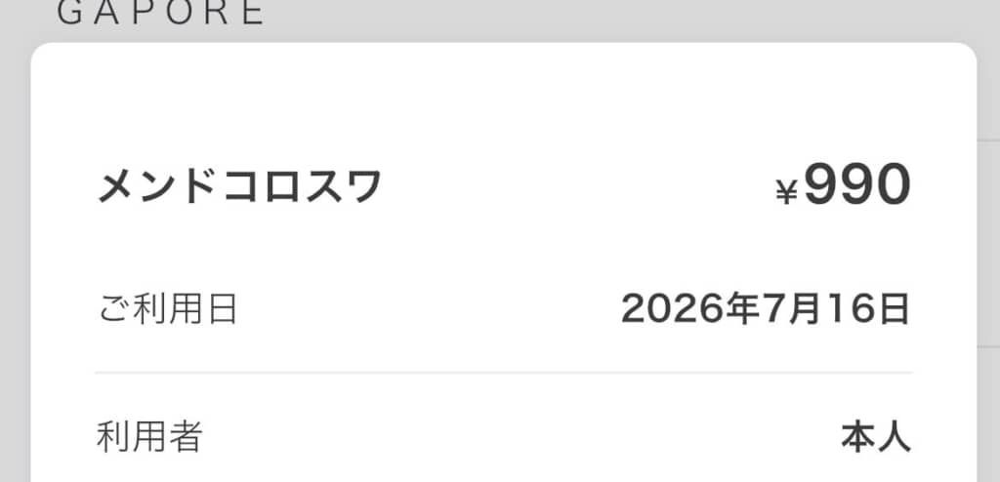
「ぬいは作りたい。でも刺繍が苦手！」
https://
4gamer.net/s/G999106.2609
10027
…
そんな自作ぬい民が，
ぬいぐるみの刺繍屋さん「Nui＆Me」に依頼。
結果，史上最強にかわいい子が爆誕。
試作→修正→完成までをレポート
多忙な社会人ゲーマーも平日から休日まで攻略可能。「Lenovo Legion Pro 5 Gen 10」で実現する理想のゲーミングライフスタイル
https://
gamespark.jp/article/2026/0
9/16/172340.html?utm_source=twitter&utm_medium=social&utm_content=tweet
…
#PR
自分だけの大画面を手軽に実現。サングラス型ディスプレイ「RayNeo GT Max ARグラス」でゲームを楽しもう【PR】
https://
4gamer.net/s/G999902.2609
14030
…
大きめのスピーカーユニットを搭載するのも見どころで，映像と音の両方を高品質で楽しめる製品だ
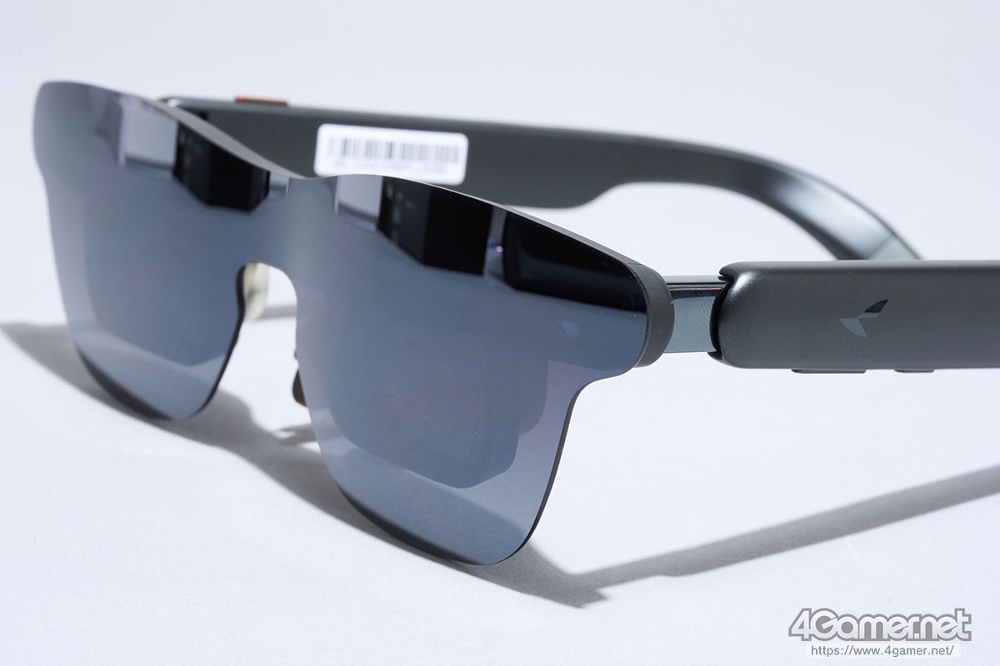
ユウマボウズさんがリポスト
／
L アサルトリリィ
発売記念キャンペーン！
＼
フォロー＆ リポストで
オリジナルQUOカードが
100名様に当たる！
更に…
#Lアサルトリリィがパチスロで登場
を付けて引用リポストすると
赤尾ひかるさん＆夏吉ゆうこさん 直筆サイン入り
オリジナルリールクッションが5名様に当たる！
ポン☆潤々さんがリポスト
◢◤ FiFSポップアップストア
FiFS ILLUSTRATION POP-UP’26 ◢◤
この度、福岡で開催いたします。
#SideMxFiFS グッズも取り扱い予定です。
ぜひお越しくださいませ。
FiFS_info
@FiFS_info
◸ FiFSポップアップストア
FiFS ILLUSTRATION POP-UP’26 ⊿
＼ FUKUOKA開催決定！／
期間｜2026年10月9日（金）～10月25日（月）
会場｜福岡 キャナルシティ オーパ1F
https://
perspect.co.jp/event/pop-up/2
026/fukuoka/
…
#FiFS26 #P30th #SideMxFiFS
.˚⊹／
ムビチケ販売終了まであと２日！
9月18日(金)以降はご購入いただけません
.˚⊹＼
ムビチケカード型前売り券（全3種）を買うと
ソロビジュアル クリアポスターが付いてくる
価格：各1,600円(税込)
#超かぐや姫
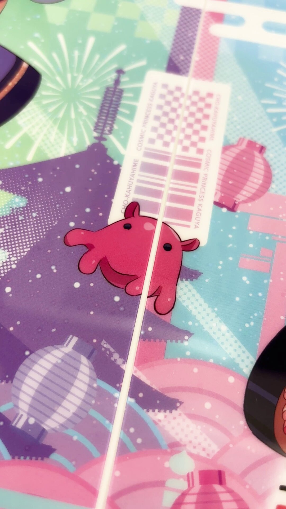
「プロジェクトセカイ」の日常を描いた
4コママンガを公開
第381話「禍福はあざなえる…」
#プロセカ #セカイの4コマ
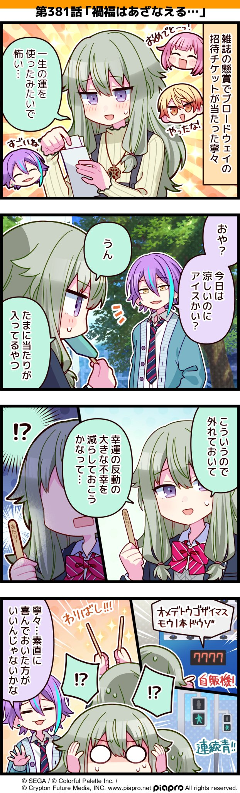
貝さんさんさんがリポスト
┈┈┈┈✦•✠•✦┈┈┈┈
『#魔女と傭兵』
2027年TVアニメ化決定
༄続報༄
┈┈┈┈✦•✠•✦┈┈┈┈
✥𝑇𝐸𝐴𝑆𝐸𝑅 𝑉𝐼𝑆𝑈𝐴𝐿②
✑ジグver.／シアーシャver.
✥𝑃𝑉①
✑
https://
youtu.be/Rn0HhyVi72Y
✥𝐶𝐴𝑆𝑇
✑イサナ=ゲイホーン：#のぐちゆり
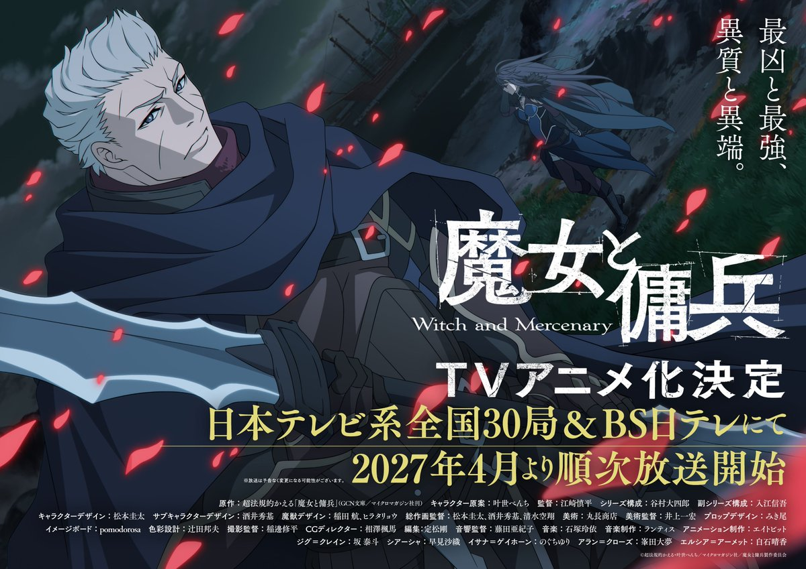
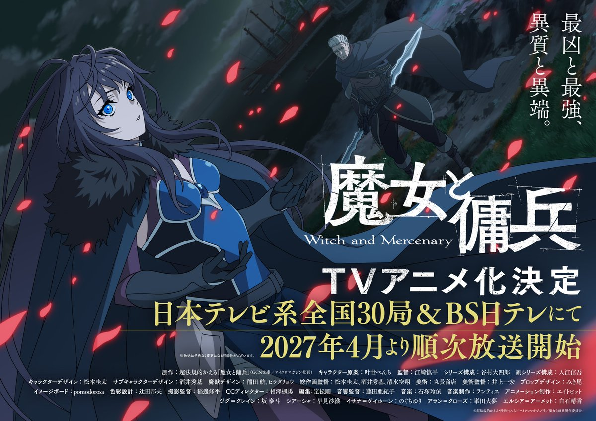
ポン☆潤々さんがリポスト
#ミリシタ応援広告 #アイマス応援広告
応援広告掲出のお知らせ
2026年9月16日〜2026年9月22日
東京メトロ 明治神宮前〈原宿〉駅 代々木公園方面改札 出口3付近
#ミリオン14th DAY2 Blooming Sign 及び #百瀬莉緒 さん主演公演Cheerful Love♡Call
このあと15:00に追加予定のカバー楽曲『悲しみなんて笑い飛ばせ』の一部を先行公開！お楽しみに
『悲しみなんて笑い飛ばせ』
歌：ハロー、ハッピーワールド！
※譜面は開発中のものです
#バンドリ #ガルパ
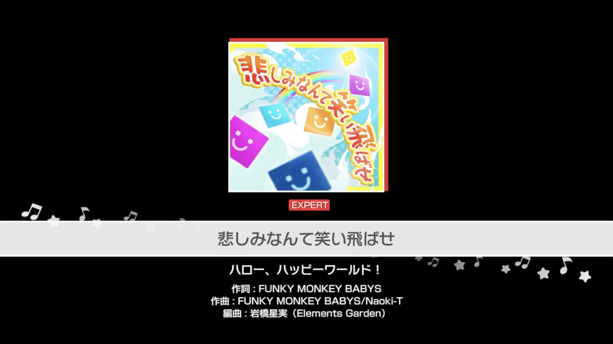
テスラさんがリポスト
< まだまだ夏は終わらない
#さよララ夏の自由研究
本日17時に、「監督賞」「キャラクターデザイン賞」「ララ賞」「茉里賞」「さよララ賞」全5部門の受賞作品を発表します
皆さまたくさんの素敵な作品を、本当にありがとうございました
輿水畏子さんがリポスト
本日9/16(水)18:00から動画をプレミア公開します！
チャットしながら一緒に動画を見ましょう☆
待機場所はそーれー！ここ！↓
https://
youtu.be/9MSu204n_ek
#PR
提供：ハピネット【TGS2026 ハピネットブース出展タイトル特集！】今回は東京ゲームショウ2026のハピネットブースに出店予...
youtube.com
/／
今日は学マ水曜日！
\＼
今週は『ジュエル 250個』を配布中
ログインして受け取ってくださいね！
配布期間：9/23(水)4:59まで (予定)

『シャインポスト 第2回国勢調査』実施中
アニメやゲームに関するものはもちろん、衣装や音楽、グッズに関するアンケートの第2回です。
来年2月に開催する『シャインポスト Be Your ライブ！ep.02@恵比寿 The Garden Hall』のセットリストや衣装も今回の調査結果を元に反映されます！

シャインポスト
輿水畏子さんがリポスト
◤◢◤◢◤◢◤◢◤◢◤◢◤◢◤◢
D4KK Next ARG...
パラノマサイト FILE444
◤◢◤◢◤◢◤◢◤◢◤◢◤◢◤◢
これは第四境界が贈る新たな物語
その新作の名は『あわいの侵霊カメラ』
続報をお待ちください
#どこきみ 期待&感想投稿キャンペーン開催
✧•┈┈┈┈┈┈┈┈┈┈┈┈┈┈┈┈┈•✧
⠀
①
@dokokimi_movie
をフォロー
②#どこきみを届けたい をつけて
⠀映画への期待や感想を投稿
⠀11/1(日)〆⠀
⠀
投稿形式は、感想のみでも写真と一緒でも
ファンアートでも何でもOK𓈒𓂂𓏸

賞品
❏石橋陽彩さん・永瀬アンナさんサイン入り本ビジュアルポスター(B2サイズ)：3名様
❏ティザービジュアルポスター(B1サイズ)：3名様
❏『どこきみ』オリジナルアクリルキーホルダー：10名様
❏映画台本：4名様
⠀
▼その他詳細はこちら
10月9日(金)公開｜映画『どこよりも遠い場所にいる君へ』
ポン☆潤々さんがリポスト
商品情報
10月16日(金)発売
#WSブラウ
ブースターパック『少女☆歌劇 レヴュースタァライト』
に収録される
“大場 なな”
のカードを公開
明日の公開もお楽しみに
商品詳細はコチラ
https://
ws-blau.com/item/rsl_01b/
#スタァライト #スタァライト9周年
演劇リーグ：TRIPLE CAST
第37回演劇リーグ：TRIPLE CAST開催中です
今回の楽曲は、
「夢のステラリウム」になります
開催期間は9/27(日)24時までになります
#ユメステ #ワーダイ #ワールドダイスター

「中道」の路線を強調するなら、新党の名称になぜ「中道」を入れないのですか？
立憲中道党と公明中道党にすればいいじゃないですか？
よく分からない名称で正体を隠さないでくださいよ
参議院も地方も含めて、「中道」を名乗って次の選挙で全滅してください
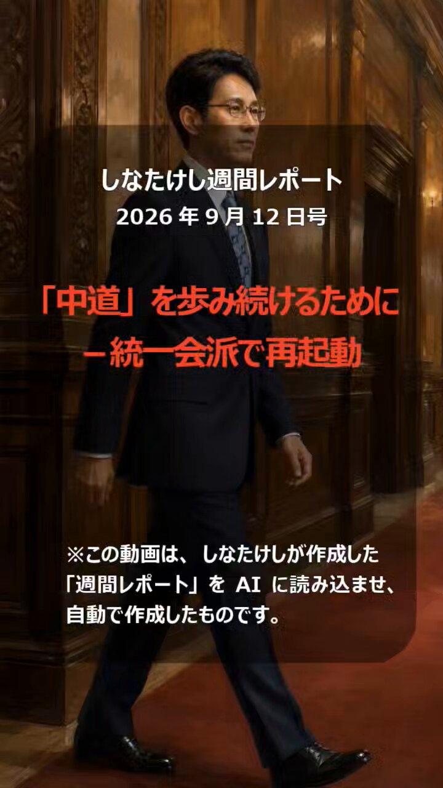
階猛(しな たけし)岩手１区・中道改革連合
@shinatakeshi
【中道勢力は変わらず】
中道改革連合は、立憲系の新党と公明党に分かれますが、衆議院の会派は一つであり、４９人の中道勢力に変わりありません。今回の「新たな形態」は、中道改革連合が過去と未来への責任を果たすためのものです。
「モンハンワイルズ」で季節イベント「交わりの祭事【夢灯の儀】」を開始
https://
4gamer.net/s/G075952.2609
16004
…
・開催期間は9月16日9：00〜11月4日8：59 ・祭事チケット【夢灯】で限定ハンター/オトモ装備を生産
・ファビウスとナディアがサポートハンターとして同行
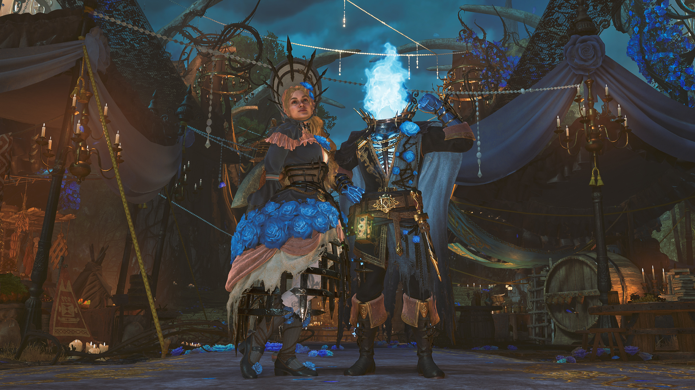
日経平均午前88円安、佳境の中間配当取り 海運や通信に食指
日経平均午前88円安、佳境の中間配当取り 海運や通信に食指
メッシ、アルゼンチン代表引退試合へ 10月にベナンとサッカー親善試合
サッカー:メッシ、アルゼンチン代表引退試合へ 10月にベナンと親善試合
メルカリの株価が大幅安 ポケモン記念カードの出品禁止
メルカリの株価が大幅安 ポケモン記念カードの出品禁止
メニューにスーパー海鮮丼とあったので頼んでみた。スーパーで買ってきた刺身ではないはず。でも今度はスーパーで買ってこようかなって思いました海鮮丼。
建物のCO2、全工程で検証 大東建託は30年までに前倒し算定
建物のCO2、全工程で検証 大東建託は30年までに前倒し算定
米国、迫る「追い込まれ利上げ」 直前まで強まった催促相場
米国、迫る「追い込まれ利上げ」 直前まで強まった催促相場
輿水畏子さんがリポスト
すいません
今年最初の紅白歌合戦、楽しみ。
NHK紅白歌合戦
@nhk_kouhaku
第77回NHK紅白歌合戦
放送日時決定
2026/12/31(木)19:20～23:45
NHK総合/BSP4K/BS8K/NHK AM
NHK ONEで同時•見逃し配信予定
NHK ONEらじる★らじるで同時・聴き逃し配信予定
https://
nhk.or.jp/kouhaku/?cid=k
hhk-x-khhp-hl
…
NHKホールでの観覧は
10/1(木)11:00～募集開始予定！
「ハイスコアガール」押切蓮介×元日本一・新川宗平のループ系ホラーRPG『ノロイあやし』正式発表！呪殺人形と七不思議が潜む学校にて、“死”から学んで都市伝説の真相に迫る
https://
gamespark.jp/article/2026/0
9/16/172337.html?utm_source=twitter&utm_medium=social&utm_content=tweet
…
新川氏がチラ見せしていた作品がついにベールを脱ぎました。初見で生き延びるのは絶望的とのこと。
最大8人のドット絵オープンワールドARPG『ディムレイス』Steam早期アクセス開始！早くも“非常に好評”で1万人集う―拠点構築、恋愛と盛りだくさん
https://
gamespark.jp/article/2026/0
9/16/172339.html?utm_source=twitter&utm_medium=social&utm_content=tweet
…
・発売日に1万人突破
・8つの種族、6つのクラスから英雄を選び、世界を旅する
天才って、いるものなのですね…
裸族の男「3階だしそのまま洗濯物取り込んでもええやろ」 歩いてる女性「ｲﾔｧｱｱｱｱｱｱ！！」→男性逮捕へ #酷い話・事件
裸族の男「3階だしそのまま洗濯物取り込んでもええやろ」 歩いてる女性「ｲﾔｧｱｱｱｱｱｱ！！」→男性逮捕へ - オレ的ゲーム速報@刃の記事ページ
jin115.com
Meta、InstagramやFacebook横断の新サブスク「Meta One」発表 AI枠拡大で月額949円から
Meta、InstagramやFacebook横断の新サブスク「Meta One」発表 AI枠拡大で月額949円から
キヤノン、新デザインのフルサイズミラーレス「EOS R8 Mark II」発表 重量は約546g
キヤノン、新デザインのフルサイズミラーレス「EOS R8 Mark II」発表 重量は約546g
RTX6090か…VRAM64GBよこせ！…と言いたいが、まあ最低48GBあれば許したるわ。32GBのままとかだったら許さない。あと6080を32GBにしろ。演算性能は5090並みでヨロシク。現実的に買えそうなのはそっちかも。しかしジェンセンがいまだにコンシューマグラボ作るのやめてないだけで感謝せなアカン時代かも
金のニワトリ
@gosrum
RTX 6090 が2027上半期に出るとの噂
そういえば RTX 50XX Super の話を全く聞かなくなったけど、RTX 6090 の発売が早まるなら Super は発売中止になってくれた方が嬉しい x.com/OC3D/status/20…
ゲームボーイの名作を「3Dジオラマ風」にプレイ可能な、WEBブラウザベースの「ゲームボーイエミュレーター」が登場!!
本作は、読み込んだROMを実際にエミュレーションしながらゲーム内部の地形やコリジョンデータを読み取り、足場やブロック、コインなどを3D空間に再構築している。
対米絡む中印接近に異変、インドが削ったキーワード 習氏は晩餐欠席
対米絡む中印接近に異変、インドが削ったキーワード 習氏は晩餐欠席
【本日の #滝沢オススメ記事】
AI研究者としての自分の賞味期限は… - チームみらい安野貴博
https://
note.com/takahiroanno/n
/n4accbde18d56
…
頂き女子「りりちゃん」のマニュアルには何が書かれていたのか
https://
note.com/yamanoyy/n/n25
5722fe5515
…
[読切漫画] 君は人間
https://
comic-ogyaaa.com/episode/122074
21984027250358
…
[注目] ガレソ厳選作品が100円

滝沢ガレソ
@subgare3
▼セール会場(PayPay対応)
https://
mgstage.com/feature/campai
gn/onecoin-hUTiR4jY/?form=grs2026&agef=1
…
牛乳石鹸 ニキビやアトピー対策に効果があると洗顔界隈で絶賛される
牛乳石鹸 ニキビやアトピー対策に効果があると洗顔界隈で絶賛される : ハムスター速報
50歳男性3割が未婚時代 独身前提で家購入？結婚に備え先延ばし？
50歳男性3割が未婚時代 独身前提で家購入？結婚に備え先延ばし？
国内すべての企業に迫るセキュリティー試験 合格には「星３個」必要
国内すべての企業に迫るセキュリティー試験 合格には「星3個」必要
絵面があまりにも酷すぎるｗｗｗ
ゲームショウで「リアルタイムデバッグ会」 来場者が見つけたバグをその場で直す 野田クリスタル
ゲームショウで「リアルタイムデバッグ会」 来場者が見つけたバグをその場で直す 野田クリスタル
台風もTGS行くんか
ウェザーニュース
@wni_jp
【台風発生予想】
9月16日(水)9時現在、マリアナ諸島で熱帯低気圧が発達中。次に発生すると「台風25号」と呼ばれることになります。
18日(金)から19日(土)にかけて小笠原諸島へ近づき、その後はシルバーウィークにかけて本州方面へ北上する可能性があります
https://
weathernews.jp/news/202609/16
0091/
…
国土膨らむシンガポール、埋め立て計画続々 新産業育てる場に
国土膨らむシンガポール、埋め立て計画続々 新産業育てる場に
経産省肥ゆる補正一体予算 緊要性忘れた「官僚たちの秋」
経産省肥ゆる補正一体予算 緊要性忘れた「官僚たちの秋」
なんだこの技術…
ポン☆潤々さんがリポスト
day1のボール投げファンサ枠が『Braver Beat』なのめちゃくちゃ良かったな……ホビアニにおいてカードは投げて渡すものなので……
銅高騰、「レアメタル」との逆転迫る 産業構造の転換映す
銅高騰、「レアメタル」との逆転迫る 産業構造の転換映す
「英雄伝説III 白き魔女」，PC＆家庭用ゲーム機向けの開発と，全世界でのリリースに向けてNEOWIZと商品化ライセンス契約を締結
https://
4gamer.net/s/G104314.2609
16003
…
・「英雄伝説III 白き魔女」は，英雄伝説シリーズの第3弾にあたり，1994年にPC-9801向けにリリースされたRPGだ
ファルコム『軌跡』の原点、1994年RPG『英雄伝説III 白き魔女』復活なるか。PC/コンシューマ開発・全世界リリースに向け韓国NEOWIZと商品化ライセンス締結
https://
gamespark.jp/article/2026/0
9/16/172338.html?utm_source=twitter&utm_medium=social&utm_content=tweet
…
東京駅前ビルPCP、ヒューリックなどが取得 市況の潮目変わったか
東京駅前ビルPCP丸の内、ヒューリックなどが取得 市況の潮目変わったか
基本無料オープンワールド・モンスター収集RPG『アニモ』PC＆コンソール正式サービス開始！個性豊かなアニモの能力を借りて“ひとつ”になり広大な世界を旅しよう
https://
gamespark.jp/article/2026/0
9/16/172336.html?utm_source=twitter&utm_medium=social&utm_content=tweet
…
モバイル版は9月23日に配信予定です。
世論調査「景気良くなってる実感ありますか？」→あまりに酷い結果に・・・・・・ #炎上
世論調査「景気良くなってる実感ありますか？」→あまりに酷い結果に・・・・・・ - オレ的ゲーム速報@刃の記事ページ
jin115.com
TGS 2026の4Gamerステージで中山淳雄氏の特別講義セッションが開催決定
https://
4gamer.net/s/G999110.2609
16002
…
・9月17日はインディーゲームの世界展開がテーマ
・MIXI占部氏，Skeleton Crew村上氏登壇
・9月18日は国のエンタメ・IP戦略と現場の課題を議論
・幕張メッセ Hall 5 4Gamerブース内ステージで開催
「Cinderia」，新たな2人協力モードを実機プレイで紹介！
https://
4gamer.net/s/G098872.2609
15034
…
TGS 2026の4Gamerブース（05-C04）で試遊＆ステージイベントを開催。YouTubeの「4GamerSP」チャンネルでも生配信でお届け
ポン☆潤々さんがリポスト
＼すしに真っすぐスシロー／
『びんとろ』 がお得に～～！
抽選で10名さまに【お食事券】が当たる
@akindosushiroco
をフォロー
この投稿をいいね＆リポスト
詳しくはこちら：
https://
akindo-sushiro.co.jp/campaign/detai
l.php?id=4522
…
自民党の新執行部発足 高市首相「経済成長の実感へ政策遂行」
自民党の新執行部発足 高市首相「経済成長の実感へ政策遂行」
グローバルホーク、航空自衛隊が墜落と断定 海域捜索を継続
グローバルホーク、航空自衛隊が墜落と断定 海域捜索を継続
フィジカルAI、日本勢の勝機は「関節」にあり ロボのコスト5割占める
フィジカルAI、日本勢の勝機は「関節」にあり ロボのコスト5割占める
世界中の誰もがガンダムゲームを知るきっかけになれば―新作ACT『GUNDAM ROGUE ORBIT』インタビュー
https://
gamespark.jp/article/2026/0
9/16/172331.html?utm_source=twitter&utm_medium=social&utm_content=tweet
…
ワールドワイドに広がる新たなガンダムゲームの魅力のお話をお聞きしてきました。
10年前のTGSアフターパーティを見つけてエモい
ゆーじ
@yuujii
#TGS2016 アフターパーティへ向かう途中の築地市場で心が揺れた
こっちかー（南関東住まい）。
警戒体制準備。
ウェザーニュース
@wni_jp
【台風発生予想】
9月16日(水)9時現在、マリアナ諸島で熱帯低気圧が発達中。次に発生すると「台風25号」と呼ばれることになります。
18日(金)から19日(土)にかけて小笠原諸島へ近づき、その後はシルバーウィークにかけて本州方面へ北上する可能性があります
https://
weathernews.jp/news/202609/16
0091/
…
限定特典の3つは、これだけでも元が取れてしまうような内容になっているかと思います。ぜひこちらから本書をお手に取っていただければと思います
AIと本を読む 理解を深める・速くなる徹底活用術
購入者限定特典3/3: 古典を先端AIで翻訳するプロジェクト「AGIアトラス」に掲載されているうちの10冊のEPUB
新刊『AIと本を読む』を出します！
難しい本でわからないところを聞いたり、ミステリーの犯人を一緒に推理したり。AIが読書仲間になると、本の楽しみ方が広がります。
そんなAIとの新しい読書を試行錯誤した結果を、一冊にまとめました。豪華3大特典付き。詳細はこちら
【新刊】『AIと本を読む』Amazon予約開始！AIと読むと、読書はここまで面白くなる——知性を深める新時代の読書術｜AGIラボ
かくれんぼできる。パナソニックの空気清浄機は存在感が薄い
かくれんぼできる。パナソニックの空気清浄機は存在感が薄い | ギズモード・ジャパン
ポン☆潤々さんがリポスト
【台風発生予想】
9月16日(水)9時現在、マリアナ諸島で熱帯低気圧が発達中。次に発生すると「台風25号」と呼ばれることになります。
18日(金)から19日(土)にかけて小笠原諸島へ近づき、その後はシルバーウィークにかけて本州方面へ北上する可能性があります
https://
weathernews.jp/news/202609/16
0091/
…
パナソニックHD、航空エンタメ主力機器の生産能力6倍 後付けも投入
パナソニックHD、航空エンタメ主力機器の生産能力6倍 後付けも投入
【物議】警察に任意同行を求められ「説明すれば誤解は解ける」と考えた男性、最悪な事になる #酷い話・事件
【物議】警察に任意同行を求められ「説明すれば誤解は解ける」と考えた男性、最悪な事になる - オレ的ゲーム速報@刃の記事ページ
jin115.com
もはや定番となったインディーゲーム祭典「TOKYO INDIE GAMES SUMMIT」が2027年3月に開催へ。5周年記念企画も予定し出展クリエイター募集中
https://
gamespark.jp/article/2026/0
9/16/172335.html?utm_source=twitter&utm_medium=social&utm_content=tweet
…
でも先約がある気もするので別行動な予感
おともさせてください！(丸投げ
『ソニックレーシング クロスワールド』シーズン2で「ベヨネッタ」参戦決定！「ゴジラ」ステージに「エヴァ」アスカとレイ参戦映像もお披露目。初号機マシンなどが走る
https://
gamespark.jp/article/2026/0
9/16/172334.html?utm_source=twitter&utm_medium=social&utm_content=tweet
…
・シーズン2無料アップデート第1弾でベヨネッタが参戦
ITmedia NEWSさんがリポスト
社内のAIはどこで動かす？ 日本HPの実践者に聞く、クラウドとローカルの使い分け
社内のAIはどこで動かす？ 日本HPの実践者に聞く、クラウドとローカルの使い分け
Google、会話を止めずに裏でタスクを実行する音声モデル「Gemini 3.8 Live」公開 推論強化の上位版も
Google、会話を止めずに裏でタスクを実行する音声モデル「Gemini 3.8 Live」公開 推論強化の上位版も
富山県が『多文化共生条例』制定へ動き出す「第６条２ 県民は、多文化共生の推進に関する施策に協力するよう努めるものとする」富山県民は移民反対運動が許されない雰囲気に
富山県が『多文化共生条例』制定へ動き出す「第６条２ 県民は、多文化共生の推進に関する施策に協力するよう努めるものとする」富山県民は移民反対運動が許されない雰囲気に : ハムスター速報
ポン☆潤々さんがリポスト
アイドルマスター ミリオンライブ！×三越のおせち 2027
本日特設サイトオープン
描き下ろしイラストは「白石 紬」です
□2026年10月21日(水)午前10時～11月17日(火)午後11時59分
□三越伊勢丹オンラインストア
今回も描き下ろしイラストを使用した本企画限定の特典付きおせちをご用意
ポン☆潤々さんがリポスト
オケマス第二弾がサブスク解禁されてる！？桜庭薫ソロの「We are DRAMATIC STARS」が聴ける！！
ポン☆潤々さんがリポスト
アイドルマスター シンデレラガールズ×伊勢丹のおせち 2027
本日特設サイトオープン
描き下ろしイラストは「鷹富士 茄子」です
□2026年10月21日(水)午前10時～11月17日(火)午後11時59分
□三越伊勢丹オンラインストア
荷物が少ない日は薄く、多い日は大容量。形を変えられるスリングバッグ BuyPR
荷物が少ない日は薄く、多い日は大容量。形を変えられるスリングバッグ | ギズモード・ジャパン
某空港にて白人男性と口論になった黒人男性、去り際に白人男性から「Negro」と呼ばれスイッチON
↓
衆人環視のなか白人男性を““わからせ””てしまう
※Negro
スペイン語で黒色を意味する単語。それ自体は差別用語でないものの、英語圏で黒人に使うと差別と見なされる。
リジスさんがリポスト
#台風25号 #台風直撃
3時初期値の欧米アンサンブルメンバー比較
左：アメリカ海洋大気庁
右：ヨーロッパ中期予報センター
どちらもほとんどのメンバーが上陸させないで日本の東海上を北上するとしている
黒線はメンバーの平均だが、極端に発達させない代わりにあまり衰えることなく北上して行く
CPAPのAir Miniを保険診療でできない理由が判明
Dr「あの… 申し訳ないんですけど… Air miniは高いんです。診療報酬以上になってしまって持ち出しになってしまうんです。」
わたし「よく分かりました」
「食事中のマナーに腹が立った」55歳男が取った行動が衝撃すぎる・・・さすがにそれはやっちゃダメだろ #酷い話・事件
「食事中のマナーに腹が立った」55歳男が取った行動が衝撃すぎる・・・さすがにそれはやっちゃダメだろ - オレ的ゲーム速報@刃の記事ページ
jin115.com
キリンHD、代謝の状態を息でチェック 健康デバイスを日本投入
https://
nikkei.com/article/DGXZQO
UC155SM0V10C26A9000000/?n_cid=SNSTW005&n_tw=1789471962
…
息を吹き込むと、体が糖質と脂質のどちらを主なエネルギー源として使っているかを手軽に確認できます。日々の記録に応じて食事などを提案してくれます。

キリンHD、代謝の状態を息でチェック 健康デバイスを日本投入
『Wo Long 2: Wings of Ember』開発陣インタビュー！オープンフィールドと「凰技」が切り拓く、新たなダーク三国死にゲーの地平
https://
gamespark.jp/article/2026/0
9/16/172333.html?utm_source=twitter&utm_medium=social&utm_content=tweet
…
オープンフィールドと新アクションで遊びやすさが格段にUP！『Wo Long 2: Wings of Ember』先行プレイレポート
https://
gamespark.jp/article/2026/0
9/16/172332.html?utm_source=twitter&utm_medium=social&utm_content=tweet
…
［プレイレポ］「Wo Long 2: Wings of Ember」α体験版インプレッション。広大な戦場を駆けるオープンワールド的探索と，武将配置の戦略性が融合した新たなダーク三國死にゲーだ
https://
4gamer.net/s/G101429.2609
15035
…
空中の敵の秘技を叩き落とせ！ 新武器の二節棍やコンボ構築など，アクションの進化をレポート
／⋰
#どこきみ 主題歌
#とた「オリーブ」本日リリース𓈒𓂂𓏸
＼⋱
⠀
本作のために書き下ろされた主題歌は
各ストリーミングサービスにて
お聴きいただけます。
▶︎
https://
lnk.to/tota_olive
⠀
映画と合わせてぜひお楽しみください。
⠀
映画『どこよりも遠い場所にいる君へ』
10月9日(金)公開
人が運転するタクシーではあり得ない利用場面が登場するのに対して、治安が悪化する、あり得ない、臭いや汚れの問題、利用環境の悪化、などは容易に発生し、対処も徹底はできないだろうけど、漫画喫茶などがあるのを思えば、それでも社会で使われそう、な気はしますよね。
レンタカーのTimesの活用方法で、ホテルが高いが車内泊に使う方法をネットで見たから、ロボタクシーがもし実用化されたら、深夜バスあるいは宿泊に使われる...
くまぎ
@kumagi
運転手がいない事によって車内で自由になるので「買い食いしたいけど座るところ無いから移動も兼ねてロボタクシー呼ぼう」みたいな使い方が広まってからが本番という気がしてる。 x.com/malaysiachansa…
PS5向け新型ヘッドセット「PlayStation PULSE」「PULSE Edge」発表！FPSで足音やリロード音を聞きやすい
https://
gamespark.jp/article/2026/0
9/16/172330.html?utm_source=twitter&utm_medium=social&utm_content=tweet
…
発売はそれぞれ2026年ホリデーシーズンと2027年初頭を予定。
【悲報】人気女優・倉木華さんの“DV自死”、ついにアメリカの大手紙ニューヨークポストにも報じられる
悪質ホストによる搾取が世界規模で取沙汰される中、問題のホストは鍵垢逃亡
（倉木さんのLINEアカウントが削除される等、証拠隠滅も着実に進行中）
New York Post
@nypost
日本のポルノスター 倉木花奈、元恋人をひき逃げで告発した後、自殺とされる
https://
trib.al/mWFSW36
＞ω＜さんがリポスト
なるほど、ドライバ1本で交換できるUSB TypeCコネクタかぁ。壊したときの交換が容易だから計測器とか長く使われる製品には良いかもね。
USB Type-C®コネクタ
『シャインポスト』公式さんがリポスト
ファイルーズあいFairouz Ai (@fairouz_ai) • Instagram reel
社内恋愛で結婚した女性、妊娠を機に産休取得
↓
妊娠9ヶ月、さあ出産というタイミングで旦那が部下の若手女子と飲み会に行ったと判明
↓
旦那「べ、別に2人で飲んだワケじゃないし…」
↓
実際はサシ飲みだったと判明
職場内での面倒臭すぎる三角関係に同情の声が寄せられる
https://
X.com/gippurya11
「まどマギで誰が好きですか？」流行ってるのか
Munehiro Yamamoto
@munepixyz
macOS 27.0 releaseで、改めて「まどマギで誰が好きですか？」を聞いてみよう。いや、なんとかして、答えさせよう。
> Windows端末止めてiPadにでもしたら？
上原 哲太郎/Tetsu. Uehara
@tetsutalow
そこへきて、最近ブラウザをAIエージェントに使わせるのでプロンプトインジェクションでやられるリスクが増大。いくらpasskey認証しても横や後から乗っ取られるリスクがあるPCブラウザは厄介な存在なので、高いセキュリティ求めるところはもうWindows端末止めてiPadにでもしたら？って言ってます
今日が最終日となった堀大輔配信
堀大輔の大輔 今日もポロリしてるのかなと思って配信見たら
色々と反省しつつ最終的に『仮眠は体に良い、日中の仮眠は、どんどんとっていきましょう！』って言っててクソ笑ってる
やっぱり睡眠は大事ってことがわかった１週間配信だった
【物議】帰化議員、外国人と共に新たな社会を作る政治団体「新世党」を設立→大炎上中 #炎上
【物議】帰化議員、外国人と共に新たな社会を作る政治団体「新世党」を設立→大炎上中 - オレ的ゲーム速報@刃の記事ページ
jin115.com
あんまり言うとちいかわにキレるモラハラ野郎とか言われそうだけどこれだけは許せへんし 人魚撲殺するよりも罪深いよ
台風大国・台湾で84,000本。一振りで水を落として立てて乾かす「撥水5級」の傘 BuyPR
台風大国・台湾で84,000本。一振りで水を落として立てて乾かす「撥水5級」の傘 | ギズモード・ジャパン
ろじぱら ワタナベさんがリポスト
憧れのアーティストを、初めて生で見た時の感想
#ライブでよくある事
これは「ニンニクナシ」コールする側が全面的に悪い 抜きと言うかそもそも言わなければ入らないのどちらかやろ
日本経済新聞 電子版（日経電子版）さんがリポスト
NTTドコモ、延べ34万人分の顧客情報をアマゾンに無断提供 設定ミスで

NTTドコモ、延べ34万人分の顧客情報をアマゾンに無断提供 設定ミスで
インフルエンザの予防接種done
なるほど、だから背景がボケて背景に何が映り込んでいるか判らないようにするために開放F値の大きなレンズを使うのか！！
(o`･д･)≡〇)`Дﾟ)ｸﾞﾊｯ ﾁｬｳﾜｲ!!
書いていて
あれ？ある意味それ正解とちゃうんか
「災害医療」のスペシャリスト“DMAT”を描いた人気漫画『Dr.DMAT～瓦礫の下のヒポクラテス～』が全巻77円の激安セール開催！！グランドジャンプ15周年記念！！ #セール情報
「災害医療」のスペシャリスト“DMAT”を描いた人気漫画『Dr.DMAT〜瓦礫の下のヒポクラテス〜』が全巻77円の激安セール開催！！グランドジャンプ15周年記念！！ - オレ的ゲーム速報@刃の記事ページ
jin115.com
つば二郎@きいちゃんすこすこ侍さんがリポスト
𝟙𝟛th Anniversary
&
My Birthday
｡*⑅୨୧┈┈┈┈┈┈┈┈┈୨୧⑅*｡
2026.09.16 AM 9:16
月野きいろ初Original Song
「Let's！ おはいえろ～！」
https://
youtu.be/cmKEpn29miQ
｡*⑅୨୧┈┈┈┈┈┈┈┈┈୨୧⑅*｡
#きいちゅーぶ
#きいろの日

前からちょっと思っていたけど、ライブのルミカライト回収は回収場所に旗とかのぼりとか立てておいてもらいたいっすね…入退場口付近でやるから人多くて見つけるの大変なんだ。
日経平均株価、反発で始まる 米半導体株高支え

日経平均株価、反発で始まる 米半導体株高支え
「墜落推定」のグローバルホーク、日本に3機のみ 警戒・監視に穴
https://
nikkei.com/article/DGXZQO
UA156IQ0V10C26A9000000/?n_cid=SNSTW005&n_tw=1789515337
…
日本では「1機が任務、1機が待機、1機が整備」という構成。墜落の原因次第では残る2機の運用停止も想定され、1機失うことは数字以上の影響があります。
「墜落推定」のグローバルホーク、日本に3機のみ 警戒・監視に穴
ルミカライトのUO回収あんまないなーと思ったけどたぶん、回収がメインゲートだったんで別の口から退場した人は場所分からなくて回収してもらっていないんですよね。スタンド席の私が荷物重すぎるからUO回収してもらわないと！回収やるならメインゲートだろ！ってわざわざ向かったくらいなので。
８月の貿易赤字1兆1056億円 原油高で輸入額が増加
8月の貿易赤字1兆1056億円 原油高で輸入額が増加
Tropical Depression 24W/台風25号候補、JTWCの予報がだいぶ東寄りに。但し、予想信頼性は「低」。数値予報も関東の東を北上するルートが増えつつあり、このルートであれば影響は限定的になりそうではあるけれど、まだ初期値変わりはありそう…
https://
metoc.navy.mil/jtwc/products/
wp2426.gif
…
https://
tropicaltidbits.com/storminfo/#24W


AVITAMINOSE
@avitaminose
Tropical Depression 24W発生。気象庁が台風25号候補としている熱低。環境場としては良好ではあるものの、乾燥空気の影響で発達が阻害されており、急速発達はせずTAU120に70KTS級程度を見込む。進路予報はモデルのブレ幅が大きく、非常に不確実性が高い。
https://
metoc.navy.mil/jtwc/jtwc.html
元プロ野球選手・元木大介さん、激やせした姿を公開するもファン騒然・・・「さすがにやりすぎ」「心配してしまう」 #芸能・スポーツ
元プロ野球選手・元木大介さん、激やせした姿を公開するもファン騒然・・・「さすがにやりすぎ」「心配してしまう」 - オレ的ゲーム速報@刃の記事ページ
jin115.com
「勝利の女神：NIKKE」が京都各地をめぐる街歩き企画を開始。黄色に染まるタワーの前で声優らが参加を呼びかけた
https://
4gamer.net/s/G045622.2609
15057
…
職人が3か月かけて仕立てた手描きの特注着物が初公開。9月19日からは京都伝統産業ミュージアムで展示
いいな！！！いいな！！！ x.com/anna_nagase/st…
夏吉ゆうこ
@__yuuuumr__
いいな！！！いいな！！！ x.com/anna_nagase/st…
エミン・ユルマズ氏「日経平均は年内6万円台なら御の字ではないか」
エミン・ユルマズ氏「日経平均は年内6万円台なら御の字ではないか」
7月の機械受注3.7％減、２カ月ぶりマイナス 判断「持ち直し」維持
7月の機械受注3.7%減、2カ月ぶりマイナス 判断「持ち直し」維持
だから、あれほどドコモプランでアマゾンが見れるってどういう事よ？って言ってたのに
アマゾンからも同じでドコモが・・・
（よくは判ってないけれど・・）
Yahoo!ニュース
@YahooNewsTopics
【ドコモ 個人情報34万人分無断提供】
https://
news.yahoo.co.jp/pickup/6595432
お菓子の「食玩」としてタワマンを売る、みたいなムーヴが見たい
特務機関NERV
@UN_NERV
【NHKニュース速報 16:11】
食料品消費税減税の大綱 閣議決定
来年４月から２年間
税率を１％に引き下げ
あの「Cisco」のIPフォン「CP-9951」へ、『Doom』が勝手移植!!
本作は、なんと本体の物理ボタンでプレイ可能で、電話内部のARMv6 CPU上でDoomを無理やり実行。
更にフレームバッファに映像を出力し、内蔵スピーカーから音声も再生可能と、かなり本格派の移植なンだッッ!!
https://
github.com/dennishilk/cis
co9951-doom
…
メモメモ
わざわざ問う人 平田はる香
@wazawazapan
週1回の経営会議が月1回で足りるようになったのはAIと一緒に作った基幹システムのお陰です。作ったのはコードも書けない私。運用コストは月15万円から4万8000円に激減し社内に革命が起きた。長野のパン屋で実際に起きたことを書きました。本文1万字は無料公開です。
https://
note.com/wazawazapan/n/
nd438d0a5bc37?sub_rt=share_pb
…
α７RⅥのお値段が高すぎ・・って発売時聞こえて来たけれど、メモリーが高騰している中よくあれだけ出してきたものだと思う（正直使いきれてないけど＞＜）プリキャプもついて 値段上昇から考えたらスゲーサービスしてくれているんだと思った・・・
テスラさんがリポスト
電波は全然流してくれないのに、個人情報はめちゃくちゃ流すやん。
＞ＮＴＴドコモ、利用者３４万人分の個人情報を米アマゾン・ドット・コム日本法人に無断提供…設定ミスが原因
ITmedia NEWSさんがリポスト
【視聴条件を満たしてAmazonギフト券をゲット！】ITmediaのオンラインイベント「変わる情シス 2026 夏」が好評開催中（9月16日まで／見逃し配信あり）。関通の情シス責任者が語るランサムウェア被害の教訓ほか、中堅中小企業のため講演が目白押し。無料申し込みはこちら。＞＞＞＞

単なる便利な道具から私たちの代わりに仕事を進めてくれる頼れるパートナーへ、AIは日々進化を続けています。しかし、多くの中堅・中小企業がいまだに旧来のやり方に留まり、変化を追い風にできないでもがいています。IT活用力の差は会社が生き残れるかどうかの境界線。様子見を続けている間に、ライバルとの差は埋められないほどに広がってしまいます。本イベントでは、AIが当たり前に現場を支える未来を見据え、情シ...
members09.live.itmedia.co.jp
ﾋｴｯ…
ぐにさんしきほう
久石奏と付き合いてぇ〜〜〜〜同じ低音パートを担当して練習の合間のおしゃべりで「ねくま君って面白いね！」と言われ、奏って俺のこと好きでは…？とテンション上がった帰り道に同級生の男子と指を絡ませて歩く久石奏を見て泣きながら鬱勃起してぇ〜〜〜〜
見た目では分かりにくいので、両方とも屏風から出して撃たせてみてください。
豊和工業株式会社【公式】
@MIZGUARD
【Instagram投稿紹介】
火器事業部のInstagram投稿をご紹介いたします！
先日、東京マルイ様より発売されましたエアソフトガンの20式小銃と、弊社が自衛隊へ納品している実物の20式小銃を並べてみました！
一見するとよく似た2丁ですが、皆さまはどちらが実物かお分かりになりますでしょうか？
砂漠の緑化とか土壌汚染の回復に使えないかなぁ

NHKクローズアップ現代 公式
@nhk_kurogen
「稲が吸うべき栄養分というのを全部こいつが吸ってしまう」（農家）
https://
web.nhk/tv/an/gendai/p
l/series-tep-R7Y6NGLJ6G/ep/BMNPMJRJGM
…
↑放送＆配信は今夜7:30～
ズバ抜けた繁殖力を持つ外来植物、ナガエツルノゲイトウ。
コメ農家が深刻な影響を受けています。対策の最前線を取材しました。
亜咲花「私は生涯アニソン歌手です。」←偉い。これからも応援したい
「母になっても孫が産まれても、死ぬまでアニソン歌手を名乗り続けます」←コ、コラ〜〜ウマ娘で声優やってるんだからあなたは女性声優でもあります若手女性声優が気軽に母になるとか言っちゃいけませ〜ん
AVITAMINOSEさんがリポスト
磁気嵐が始まります。今すごい変な太陽風のプロファイルです。たぶん私は見たことない型というか、リアルタイムデータではダメで速度3成分のデータが落とせた段階からですが、この太陽風構造の解明だけでも、だいぶ面白い論文になります。
ケータハムの一部のフレームみたいに段差に止めたらフレームがしなってねじれるなら判らないでもないけど
これくらいの事でタイヤが・・・
確かに、このまま半年とか止めてるといけないけど、買い物とかの駐車程度なら問題ない（乗りあげてしまっているとかじゃ無ければねぇ）
あらふぃ〜ぱっち
@hydehide555
なんで洗車屋ってこういうのばっかなの？
走行中一秒間に何十回も潰れ戻りするタイヤがそんなことでダメになるわけねーじゃん
サスなんて自重でフルバンプするわけじゃなし、何の問題が？
洗車屋はサスの構造知らんのかもしれんけど、横だの前後だのの荷重はサスじゃなくてアーム類が負担してんだわw x.com/YOURS_nakahito…
亜咲花ってまだ26歳だったんか……つまりゆるキャン△一期の頃僕が「SHINY DAYS！ 亜咲花のお胸 弾むような乳揺らして はよ脱げ」とか叫んでたときはまだ10代だったってことか……なんか興奮してきたぁ！
初代プレステの名作『エースコンバット3 エレクトロスフィアの日本版」が、PCへ勝手移植!!
本作はなんと、「日本版の2枚組ディスク」に対応し、ゲーム本体をPC向けに再コンパイルを行い、Windows/Linux/macOSで動作可能となっている。
納豆、ガチの有能食品だった！「週◯以上食べる人は軽度認知障害、抑うつ症状が少ない」 #食べ物・飲み物
納豆、ガチの有能食品だった！「週◯以上食べる人は軽度認知障害、抑うつ症状が少ない」 - オレ的ゲーム速報@刃の記事ページ
jin115.com
協力プレイ対応ローグライトFPS『Guns & Dragons』次回プレイテストでAI生成だったアイコンを手描きに置換と告知
https://
gamespark.jp/article/2026/0
9/16/172329.html?utm_source=twitter&utm_medium=social&utm_content=tweet
…
9月17日～23日まで実施予定のプレイテスト―森のエルフ参戦や協力プレイ人数の拡張も
フォロワーさん達美少女アニメになると手心を加えて見てるから深く考えようとしてるけど、きみしぬにおける「戦争」は春夏秋冬代行者における「テロリスト」と全く変わらない悲劇ポルノ用装置ですよ。
代行者の時の手厳しい皆さんの姿勢を思い出して欲しい。
ミルヒー
@HELIX_62
『きみ死ぬ』の敵国の兵士が成人男性ばかりなのは、敵国がある程度はまともな国であることを示して孤児を兵士にする舞台の国の異常性を強調し、この展開(反逆)をするための前振りだと思ってるんだけど、違うならちょっと怖いね x.com/dustbox_th/sta…
ちょっと心配…
未だにしぶとく残るエウリアン
マオゴロー
@mao_goro
秋葉原で一番嫌いな店
わかる人にはわかる
オタク起床
通信制高校にも退学ってあるんだ… #なんか見た
ゲームキューブの名作『マリオパーティ4』が、オンライン対戦対応でPCに勝手移植!!
本作は、なんと「オンライン2人対戦」が可能で、ロビー機能、入力同期、パケットロスからの復旧、60Hz動作などに対応。さらに実験的ながらロールバックネットコードにも対応している。
Polar Starチャレンジ 262日目午前の部
マイネームイズ
@MyNameIs_smrn
Polar Starチャレンジ 261日目午後の部 x.com/mynameis_smrn/…
今夜はPANORAでTGS前夜祭だ
医療関係だけじゃなく、介護界隈もこれだと進めないかな。内容次第では海外に行けないかも。
技術系会社員
@_137_036
現代文明の粋が原始的な武力で破壊される様に文化の崩壊を感じます。
文明に守られる筈だった子どもがどうか無事に成長できますように……。
堀大輔見てると虚言癖の奴ってなんか不幸そうやな
堀大輔見てると虚言癖の奴ってなんか不幸そうやな : ハムスター速報
発売前にお迎えしておこう。MOFTのiPhone 18 Proケース、嘘みたいに軽い
発売前にお迎えしておこう。MOFTのiPhone 18 Proケース、嘘みたいに軽い | ギズモード・ジャパン
ベッドで腕がだるくなる問題、そもそもスマホを持たなければいい説 BuyPR
ベッドで腕がだるくなる問題、そもそもスマホを持たなければいい説 | ギズモード・ジャパン
喫茶店のレジ横にかつてあった。 #マッチ かな？ #アップ738
18歳中国人「日本観光に来たついでに東大模試を初めて受けてみた」→結果・・・ #雑談・その他の話

18歳中国人「日本観光に来たついでに東大模試を初めて受けてみた」→結果・・・ - オレ的ゲーム速報@刃の記事ページ
jin115.com
「プラグマタ」の開発で起こった4つの課題。これ以上遅れられない状況で，プロジェクトマネージャーはどう向き合ったのか［ゲームメーカーズスクランブル］
https://
4gamer.net/s/G051239.2609
07001
…
新規IPで定番要素がない。若手中心のメンバーのため経験が少ない。大人数のチームを運営する実践的なノウハウとは
【Game Pass】新作『Gears of War: E-Day』『Minecraft Dungeons II 』など計13本登場―2026年10月上旬までのラインナップ公開
https://
gamespark.jp/article/2026/0
9/16/172328.html?utm_source=twitter&utm_medium=social&utm_content=tweet
…
『Call of Duty: Black Ops 6』や『NINJA GAIDEN 4』等がPremiumプランに開放予定
Buzz@C108（夏コミ）2日目日曜日 東地区 東３ホール マ26aさんがリポスト
5日間限定の値引券チャレンジ(^^)
今日はフラッペ値引の1日目です♪
1）このアカウントをフォロー
2）この投稿をリポスト
3）抽選で毎日1万名様に値引券！結果は自動でお知らせ
キャンペーン詳細はこちら♪
テスラさんがリポスト
人物ばかり見て夢中でシャッターを切って、家に帰って見返したら、頭から電柱が生えていた。
背景にゴミ箱がドーンと写り込んでいた。
そういう写真を量産していた時期が、僕にもありました。
被写体に集中しているときほど、背景は目に入っていないんですよね。
テスラさんがリポスト
TranscendのSDカードの値段が1年前の3倍ぐらいに跳ね上がってて横転。
値上がりは分けるけど流石に上がりすぎやろ…。
米ケネディ・センターが無期限閉館 「トランプ」への改称巡り混乱
米ケネディ・センターが無期限閉館 「トランプ」への改称巡り混乱
ポン☆潤々さんがリポスト
目が覚めたかニンゲン……
今 日 か ら 100 日 後 は
ク リ ス マ ス だ ！！
「かさばるから…」で諦めない。口をつけずに息で膨らますネックピロー
「かさばるから…」で諦めない。口をつけずに息で膨らますネックピロー | ギズモード・ジャパン
テスラさんがリポスト
【ドコモ 個人情報34万人分無断提供】
ドコモ 個人情報34万人分無断提供 - Yahoo!ニュース
日経平均株価、米株下落が重荷に（先読み株式相場）

日経平均株価、米株下落が重荷に（先読み株式相場）
八木先生が今年カジマヤーで、川平朝清さんが来年100歳だったかな？と長寿のニュースを聞いて思った。#アップ738
日本ゲーム大賞、2026年は「ぽこ あ ポケモン」
https://
nikkei.com/article/DGXZQO
UC15A410V10C26A9000000/?n_cid=SNSTW005&n_tw=1789509589
…
自由な街づくりを楽しむ「サンドボックス（砂場）」ゲームという従来のポケモンにないゲーム体験が支持され、3月の発売から4カ月で販売本数が500万本を超えるヒット作になりました。

日本ゲーム大賞、26年は「ぽこ あ ポケモン」
日本語音声にも対応する戦国時代ストラテジー決定版『Total War: SHOGUN 2 - Complete Edition』発表！
『Total War: SHOGUN 2』は2024年8月までは日本から購入できない、いわゆる「おま国」タイトルだったことでも知られています。
https://
gamespark.jp/article/2026/0
9/16/172327.html?utm_source=twitter&utm_medium=social&utm_content=tweet
…

下の方に溜まってないダムが1つあるじゃろ
走る人参(気象予報士)
@Runninzin
長雨でダムにもだいぶ水が溜まった
GoogleのLLMのモデルが、開発には物足りない話が流れていくけど、Google AIモードが優秀で、旅行や行き先はもうこれに聞いて、Googleに行動が支配されているので、一般向けにはもうそれでいいのでは？みたいな。
車の緊急脱出用ハンマー、豪雨で販売15倍 製造会社「過去最大の注文」

車の緊急脱出用ハンマー、豪雨で販売15倍 製造会社「過去最大の注文」
この地価のニュース、月曜日のともりさんの肌感覚なんてのも聞きたいねぇ。#アップ738
福島・吾妻山の森と湖の景観に惚れる | 佐々木俊尚「毎朝の思考」/ Voicy - 音声プラットフォーム
福島・吾妻山の森と湖の景観に惚れる | 佐々木俊尚「毎朝の思考」/ Voicy - 音声プラットフォーム
福島の吾妻山、北欧の森みたいな景色を堪能し、磐梯山の雄姿を遠く望んでさらに楽しむ。Voicyで山行のコースを紹介。↓
AIを巨大な存在と見るのか、目の前にいる相手とみるのか〜〜死生観と宗教はテクノロジーでどう変わるか（２） 佐々木俊尚の未来地図レポート Vol.926｜佐々木俊尚

AIを巨大な存在と見るのか、目の前にいる相手とみるのか〜〜死生観と宗教はテクノロジーでどう変わるか（２） 佐々木俊尚の未来地図レポート Vol.926｜佐々木俊尚
2013年の映画「her」で、主人公はAIサマンサの恋人をただひとりの存在だと信じ、しかし終盤になってサマンサが他に641人もの男性（やAI）と恋に落ちていることが判明し、主人公は激しく動揺する。しかし現在のAIにそういう動揺を感じている人はなぜかいない。メルマガで論考しています。↓

貝さんさんさんがリポスト
そして、『キミが吠えるための歌を、』3巻が重版となりました！
ありがとうございます
#キミ吠え は現在4巻まで発売中です！
OpenAI、AI安全性でAnthropic、Google DeepMindと協議中──Bloomberg報道

OpenAI、AI安全性でAnthropic、Google DeepMindと協議中──Bloomberg報道
山口祐加さんとのポッドキャスト。今週は「いま何を食べたいかわからないとき、どうする？」という話。↓

食べるは続くよどこまでも #29 食べたいものがわからない時、どうしてる？
https://
buff.ly/NzFzgVz
https://
buff.ly/UQd5PCb

Podcast Episode · 食べるは続くよどこまでも · September 13 · 18m
podcasts.apple.com
みずほ証券、楽天証券と預かり資産200兆円超へ 30年度めど
みずほ証券、楽天証券と預かり資産200兆円超へ 30年度めど
今回の沖縄県知事選で、オール沖縄の終焉という分析。「2月の衆院選や2025年参院選をみても、オール沖縄は50代以下の復帰後世代から票をとれていない。基盤は60代以上の高齢者で、この延長線上に今回の敗北があった。すでに保守系は離れ、ついに県政を失った。故翁長雄志前知事がつくった、保革を結集
知事選敗北で「オール沖縄は終焉」 沖縄国際大の野添文彬教授 - 日本経済新聞

知事選敗北で「オール沖縄は終焉」 沖縄国際大の野添文彬教授
夜勤を終えて最寄駅に着いて外に出たら、駅前のLAWSONが大行列
何かなと思ったら、今日はポケカの発売日らしい。
早朝から雨の中よく並べるな…と横目で見ながら帰宅しました。
台湾の新聞では、沖縄県知事選についてこんな論考も出ていたそうです。「今回の選挙は中日両国の直接対決ではないものの、両国による地政学的なせめぎ合いが投影されることは避けられない。ある意味での「中日による琉球争奪戦」と呼ぶことも、まったく根拠がないわけではない」。安田峰俊さん。↓
「中華圏の大問題」になっていた沖縄県知事選

「中華圏の大問題」になっていた沖縄県知事選
ネットやメディアの言論空間にはびこる“冷笑”のスタイルが、この国の人の倫理を歪ませてきたのではないかという疑いは私も同感だ。自分がX/Twitterで笑いを意味する「w」を使うのをやめたのも、そこに鼻で笑うような嘲笑や冷笑のニュアンスを強く感じるようになったからだった。今は他人を見下す冷笑的
いつまでも出る秋の蚊 ～昭和と令和で「蚊」はどう変わったか｜KINCHO公式note 大日本除虫菊株式会社 金鳥

いつまでも出る秋の蚊 ～昭和と令和で「蚊」はどう変わったか｜KINCHO公式note 大日本除虫菊株式会社 金鳥
蚊が最も活発に活動できる気温は27℃前後。しかし近年は猛暑日が多く蚊が活動しにくい。だから夏より秋のほうが蚊が多くなってる。気温が15℃を下回ると活動が鈍くなるが、最近は10月でも下回らない。蚊の種類も変わってきているなど、蚊にまつわるさまざまな知識が面白いキンチョーさんの記事。↓
監視資本主義から孤独資本主義へ、という話。AIは人びとの孤独を癒す有料サービス。米国では10代の20％が同級生よりAIと過ごすほうを好むと答え、フランスでは40歳未満の23％がAIを「心理的な支え」「友人」「恋人」として使っているとか。↓
我々は「孤独資本主義」の時代に突入した─テック企業の新たな収益源とは | 孤独を換金する「3つのステップ」 ｆ
我々は「孤独資本主義」の時代に突入した─テック企業の新たな収益源とは | 孤独を換金する「3つのステップ」
ウクライナ戦線で無人戦争の第一歩。黒海で敵味方の双方が無人水上艇同士という史上初めて海戦が発生し、ロシアの無人水上艇をウクライナが撃沈して勝利。「世界の海戦史に新たな一ページが刻まれることになるでしょう」と。↓
黒海で史上初の無人水上艇同士の海戦が発生、ウクライナ海軍がロシア海軍に勝利（JSF） - エキスパート - Yahoo!ニュース
黒海で史上初の無人水上艇同士の海戦が発生、ウクライナ海軍がロシア海軍に勝利（JSF） - エキスパート - Yahoo!ニュース
DeepL、話者の声の特徴保ち音声通訳 日本語含む14言語に対応
https://
nikkei.com/article/DGXZQO
UC154S50V10C26A9000000/?n_cid=SNSTW005&n_tw=1789477700
…
音声から音声へのリアルタイム通訳で、質問の語尾や高揚感といった感情表現が反映されます。複数人でのオンライン会議で誰が話しているかを把握しやすくなります。
DeepL、話者の声の特徴保ち音声通訳 日本語含む14言語に対応
なでしこジャパン「キャパ5万の会場でアジア大会やります！」→ガチでヤバいことに・・・ #酷い話・事件
なでしこジャパン「キャパ5万の会場でアジア大会やります！」→ガチでヤバいことに・・・ - オレ的ゲーム速報@刃の記事ページ
jin115.com
両面撥水で洗いやすい
「ほとんどの食器をこれに替えました」ニトリの“楽に洗える皿”に絶賛の声 「サッと水を潜らせたらある程度の汚れは取れる」「軽くて割れにくい」
https://
nlab.itmedia.co.jp/research/artic
les/4013069/
…

おはようございます。今日は9月16日、水曜日。
狩猟アクション×スローライフ『Monster Fantasy』9月22日よりプレイテスト実施へ。『モンハン』がインスピレーション源の1つだとする作品
https://
gamespark.jp/article/2026/0
9/16/172326.html?utm_source=twitter&utm_medium=social&utm_content=tweet
…

なるせひろのりさんがリポスト
「iOS 27」にアップデートしたらiPhoneの電池減りが早くなった？ Appleは「一時的」と説明
米Appleは9月14日（現地時間）、iPhone向けの新OS「iOS 27」を公開した。インストール直後は、バッテリーの減りがいつもより早いと感じるかもしれない。だがAppleによれば、これは正常な挙動であり、しかも一時的なものだという。
japan.cnet.com
MICHEE-N（ミッチー・Ｎ）さんがリポスト
沖縄の土木屋から言わせてもらうと、仲井真さんが持ってきた「一括交付金」てのが曲者なのよ。条件が「沖縄の観光・産業に資する」とあって、大きな道とか橋の新規建設に使えるけど「維持管理費」に使おうとするとハードルが高い。政治決着した予算だから使途内容が曖昧で、凸凹な道、朽ちた橋、古い公
内藤ゆうや/前世田谷区長候補/内藤勇耶
@ynaitosetagaya
民主党・社民党連立政権の2010年度予算より、いまの自民党政権のほうが沖縄振興予算は300億円以上多いのです。
「削ってきたのは誰か」という問いは、ご自身が在籍された社民党や民主党にこそ向けられるべきではないでしょうか。
元財務官僚として、数字でお示しします。 x.com/hosakanobuto/s…
社債版の「優待」増加 ドンキのパンパシ、ポイントで利回り最大6%
https://
nikkei.com/article/DGXZQO
UB047MB0U6A900C2000000/?n_cid=SNSTW005&n_tw=1789476860
…
企業が社債の利払いにポイントや電子マネーを活用する例が増えています。パンパシHDもそのうちの1社で、「店舗来店のきっかけになる」と狙いを語ります。

決算:社債版の「優待」増加 ドンキのパンパシ、ポイントで利回り最大６％
【ちいかわブランド】日本でくら寿司店員が転売グッズ扱いしているちいかわ 中国では高級ブランド扱いだった

【ちいかわブランド】日本でくら寿司店員が転売グッズ扱いしているちいかわ 中国では高級ブランド扱いだった : ハムスター速報
米仮想通貨法案、上院で審議入りに向けた投票否決 成立見通し後退

米仮想通貨法案、上院で審議入りに向けた投票否決 成立見通し後退
米国の対イラン戦費5.8兆円 攻撃の応酬続けば毎月4600億円
米国の対イラン戦費5.8兆円 攻撃の応酬続けば毎月4600億円
みずほ証券、楽天証券と預かり資産200兆円超へ
https://
nikkei.com/article/DGXZQO
UB075790X00C26A9000000/?n_cid=SNSTW005&n_tw=1789481934
…
みずほは富裕層向け、楽天は一般顧客向けと役割分担を進めて個人顧客を取り込みます。みずほ証券は創業社長のような富裕層とオーナー企業などを一体で担当する営業員の比率を増やします。
みずほ証券、楽天証券と預かり資産200兆円超へ 30年度めど
10年以上開発続く『オブリビオン』再現Mod「Skyblivion」はリリースに近づいていると告知。トレイラー制作などを担うボランティアを募集中
https://
gamespark.jp/article/2026/0
9/16/172325.html?utm_source=twitter&utm_medium=social&utm_content=tweet
…
https://
x.com/TESRSkyblivion
/status/2099861545106751785/video/1
…
米長期金利5%台 ウォーシュ氏信じ切れぬ市場、利上げ見送りなら波乱

米長期金利5%台 ウォーシュ氏信じ切れぬ市場、利上げ見送りなら波乱
サウジで石油の積み出し停止か パイプライン損傷で供給懸念
サウジで石油の積み出し停止か パイプライン損傷で供給懸念
【補足】
・おっさんは運転代行サービス職員
・酔っ払った若者2名がおっさんに絡む
・おっさんが即座に警察へ通報し警告するも、若者が無視して先に手を出す
・気絶した若者は無事でその後和解
・中国では「こんだけ強いのに初手通報を選択したおっさん偉いな」との反応が多め

滝沢ガレソ
@tkzwgrs
中国の路上にておっさんとZ世代の若者が衝突
↓
不利なオッズを跳ねのけ圧倒的パワーでおっさんが若者を制圧
伊達に長く生きていないことを証明する
リジスさんがリポスト
【台風発生予想】
16日(水)3時現在、マリアナ諸島で発達中の熱帯低気圧について気象庁は「12時間以内に台風に発達する見込み」と発表中。次に発生すると「台風25号」
今週末に小笠原へ接近、シルバーウィークに本州方面へ北上する可能性があり、今後の進路に注意が必要です。
https://
weathernews.jp/news/202609/16
0051/
…
おはようございます。
夜勤を終えてトゲラジを聴きながら帰宅です。
珍しく定時退社、残業なし！やった
今日は休みですが、散髪とお昼ごはん以外決めていないので、考え中です。
明日は朝から仕事なので、のんびりするか…。
バンドリのパチンコを打ちたいけど、最近負け続けているから行きづらい…
アンソロピックCEO「競合批判やめる」 AI暴走脅威に業界結束訴え

アンソロピックCEO「競合批判やめる」 AI暴走脅威に業界結束訴え
AI脅威論で異形タッグ、MAGA派バノン氏と急進左派サンダース氏

AI脅威論で異形タッグ、MAGA派バノン氏と急進左派サンダース氏
いるか@心が酒びたっているんださんがリポスト
管理職「子どもたちのプログラミング的思考力を伸ばしたい！何かアイデアある？」
情報主任ぼく「調理実習増やしましょう」
人気VTuberさん、配信で男性同士が◯◯する動画を誤って流してしまうｗｗｗｗｗ #VTuber

人気VTuberさん、配信で男性同士が◯◯する動画を誤って流してしまうｗｗｗｗｗ - オレ的ゲーム速報@刃の記事ページ
jin115.com
米国で社会主義、火付け役のパイカー氏に聞く 「資本主義に絶望感」
https://
nikkei.com/article/DGXZQO
GN051660V00C26A9000000/?n_cid=SNSTW005&n_tw=1789502474
…
「私がニューヨーク市長選でマムダニ氏を支援し、その勢いを全米の選挙戦に広げていく計画は、今のところ大きな成功を収めている」
米国で社会主義、火付け役のパイカー氏に聞く 「資本主義に絶望感」
スイッチ2版『めっちゃカメレオン』売上30万本突破！近日中にボイスチャット関連のアップデートも予定
https://
gamespark.jp/article/2026/0
9/16/172324.html?utm_source=twitter&utm_medium=social&utm_content=tweet
…

減税後の新給付、財源1.8兆円なら3700万人に最大5万円 専門家が4試算
https://
nikkei.com/article/DGXZQO
UA152T20V10C26A9000000/?n_cid=SNSTW005&n_tw=1789499373
…
政府は29年4月に食料品の消費税率を1%から8%に戻します。新たな給付は実質的に増税となる負担を軽減する効果が期待されます。
専門家の試算を紹介します。

減税後の新給付、財源1.8兆円なら3700万人に最大5万円 専門家が4試算
NYダウ、続落し328ドル安 原油供給への警戒一段と

NYダウ、続落し328ドル安 原油供給への警戒一段と
NHK、たまたま同志社国際を過去に取材してて、その映像に辺野古で亡くなった生徒が映っていたとな？
「日本の恥」レジ改修に高いハードル 消費減税特需を喜べぬスーパー
https://
nikkei.com/article/DGXZQO
UC3138W0R30C26A8000000/?n_cid=SNSTW005&n_tw=1789498647
…
「スーパーマーケット業界にとって追い風になるという議論は少し違う。我々が歓迎しているとばかり受け取られるのは心外だ」
「日本の恥」レジ改修に高いハードル 消費税減税特需を喜べぬスーパー
滝沢ガレソさんがリポスト
お見苦しいものを見せてしまい、申し訳ありませんでした。
三上悠亜
@yua_mikami
堀さんのちんちんリアタイで見ました
むくり。
高校生の就活選考解禁 求人倍率3.6倍、西武プリンス資格手当年60万円

高校生の就活選考解禁 求人倍率3.6倍、西武プリンス資格手当年60万円
エンドスさんがリポスト
のんちゃんが画面の中のすずさんの動きを自分の身体性に引き寄せようと動く気満々、動きやすい格好で録音スタジオにやって来たあの日が懐かしい。
ヨーカ堂が初の低価格ビール、1本173円 酒税改正にらみ業界最安値級
イトーヨーカ堂が初の低価格ビール、1本162円 酒税改正にらみ業界最安値級
運用大手、年金などから得る成功報酬３倍 アクティブ運用強化が奏功
運用大手、年金などから得る成功報酬3倍 アクティブ運用強化が奏功
YuE2でボーカル無しの曲を生成するためのLoRA
From the StableDiffusion community on Reddit: YuE2 Instrumental LoRA
【動画】エスカレーターの歩行禁止を義務付けた名古屋、凄いことになっていた #雑談・その他の話

【動画】エスカレーターの歩行禁止を義務付けた名古屋、凄いことになっていた - オレ的ゲーム速報@刃の記事ページ
jin115.com
なるせひろのりさんがリポスト
編集が書いた脚本でコケて責任負わされて「あいつが悪い」と干された。情報を補足すると自分はその時はデビューしたての新人で担当は元手塚番の編集長，その時は大物脚本家を原作者名義に据えていたので責任を被せられるのは自分しか居なかった。もう一人有名雑誌の編集長経験者が担当だった際も「あん
井上純一（希有馬屋）『逆資本論』発売中
@KEUMAYA
ネーム描いて編集に見せるじゃん
なんか言われるじゃん
修正するじゃん
それでその漫画が人気とれない場合、
編集さんはなんか責任取るの？
マッキンゼーのレポートによると、企業の32%がソフトウェアの購入をキャンセルしてAI使って自前で作ることにしたという。本当にこの調子でソフトウェア自前主義が進んだらソフトウェア企業は一巻の終わりなわけだがどうだろう？AI触って「スゲー！なんでも作れるじゃん！」ってハシャイでイキりだすフ

From the artificial community on Reddit
豊田通商株、七大商社で上昇率首位 半導体・アフリカで光る独自色
豊田通商株、七大商社で上昇率首位 半導体・アフリカで光る独自色
全然AIの事知らんけど最近のニュースでAIに人類が滅ぼされるんじゃないかと怖くなって不安で夜も眠れないという学生。そーだよな。Anthropicの連中は「人類滅びる！」ってマジで言ってるらしい。しかし具体的に何がどうなって滅びるのか連中は全く説明しない。それに対してトランプ大統領は「AIが人類
From the artificial community on Reddit
うちの ChatGPT のチャット + GPT-5.6 Sol だと Opus 4.1 と回答された・・・が古くない？
Work の方だと Opus 4.6 なので私にはまだステルスリリースされてないのかな


Lumina
@LuminaBench
GPT-5.6 Sol が GPT-6 Sol にルーティングされているようだ
知識のカットオフを超えた質問に答えています（ウェブ検索やメモリなしで）
これが今どれくらいでリリースされるのか気になるな x.com/notjazii/statu…
アリスとテレスのまぼろし工房確か観に行ったな〜、作家性の原液出まくってて正直好きだった
３年越しにBD出すことあるんだ
米海軍、同盟国から艦艇調達を検討 「日本のフリゲート艦も選択肢」
https://
nikkei.com/article/DGXZQO
GN0938M0Z00C26A9000000/?n_cid=SNSTW005&n_tw=1789500161
…
三菱重工業製のフリゲート艦「もがみ」型の改良型の名が挙がっているといいます。
米海軍、同盟国から艦艇調達を検討 「日本のフリゲート艦も選択肢」
米企業がアフリカで重要鉱物タングステン調達 脱中国、日本にも供給

米企業がアフリカで重要鉱物タングステン調達 脱中国、日本にも供給
荏原、米サード・ポイントが認めた価値 脱「割安株」へ総合力磨く
決算:荏原、米サード・ポイントが認めた価値 脱「割安株」へ総合力磨く
ベッセント氏、長期金利上昇「財政赤字も一因」 バイバックは「成功」

ベッセント氏、長期金利上昇「財政赤字も一因」 バイバックは「成功」
米海軍、同盟国から艦艇調達を検討 「日本のフリゲート艦も選択肢」
米海軍、同盟国から艦艇調達を検討 「日本のフリゲート艦も選択肢」
400RT : 【訃報】数年前大バズリした『サイゼで喜ぶ妻』さん、死去 #雑談・その他の話
【訃報】数年前大バズリした『サイゼで喜ぶ妻』さん、死去 - オレ的ゲーム速報@刃の記事ページ
jin115.com
動画生成 AI での技術力レベルって多段階あると思ってて、大体1回生成15秒なので、
1. 15 秒に収まるショート動画を、他のダンス動画とか MV にてキャラだけ差し替えて生成（INMU KING ダンスを溝口にしたアレとか）
2. 新規題材でシチュ編み出して15秒に収まるショート動画をポン出しで作る
3.
kokuren
@wangoroge333
INMU KING動画なんか作られまくってるけどどれもクオリティ高いところからseedanceの底力が感じられる
川鍋一朗のタクシーGO、自分が率いるライドシェア反対のタクシー業界団体を丸め込んで自動運転タクシー導入の道筋をつけることに成功

「えっ、タクシー会社が新卒採用するのか！！」「ああ…しっかり稼げ」「ライドシェアは俺たちが防いでやるからな！」「遠慮するな、キャリアなんて気にせず運転だけしていればいいんだ…」「うめ」「うめ」「うめ」「ただいまより自動運転タクシーを導入する！！」— 窓際三
kabumatome.doorblog.jp
実際これどこまで通るんだろ
もみじ(Momiji)
@momiji_manjyuu
全ての商品にラムネを付ける事で実質消費税1%ｷﾀ━━━━(ﾟ∀ﾟ)━━━━!! x.com/UN_NERV/status…
Torishima / INTPさんがリポスト
これ本当に悔やんでいる
今後AI以外と会話すること自体がほぼなくなることを考えると貴重なデータだった
kokuren
@wangoroge333
SNSのデータ全部消したの悔やまれる
元カノとの会話履歴から元カノクローンを作れたかもしれなかったのに
ゴールドマン、主力の未公開株ファンドで1.8兆円調達 米欧中堅向け
ゴールドマン、主力の未公開株ファンドで1.8兆円調達 米欧中堅向け
日立製作所が米南部に800億円投資、変圧器の新工場 AI需要増で

日立製作所が米南部に800億円投資、変圧器の新工場 AI需要増で
＞ω＜さんがリポスト
10インチラックのフレームを3Dプリンターで印刷してネットワーク周りを整えた
これ停められる車あるのか…？

Torishima / INTPさんがリポスト
私がやってる業務は視覚依存が多かったからAstra登場で信じられないペースで精度向上したのでやっぱり目的の明確化とそれの落とし込みは人間の仕事。
Torishima / INTP
@izutorishima
めちゃくちゃわかる、『視覚の判定精度に依存していた』タスクは非常に精度良くこなせるようになった反面、「人間様にとっての最終的目標から逆算した目的関数」を与えてるのにそこからズレて浪費して意味ない試行錯誤ばっか繰り返す癖が普通にあるし、使い所に難がある
しょうもないタスクだと Sol x.com/koguGameDev/st…
実は今、日本は歴史的な時間を過ごしている。
この最高齢114歳が日本でたった1人、最後の「明治生まれ」の方
この方が旅立ったとき「明治生まれ」はいなくなります
明治の旅立ち、歴史の転換点となる時間
日本経済新聞 電子版（日経電子版）
@nikkei
100歳以上が初の10万人超 女性が87%、最高齢は京都の114歳
https://
nikkei.com/article/DGXZQO
UD150I50V10C26A9000000/?n_cid=SNSTW001&n_tw=1789440502
…
Astra って視覚はガチで強いし明らかに日本語的におかしい語彙が少なくなったりもしているが、それ以外の強みってマジで GPT の ASD 的な強さをマシマシにしたもので、本当に頑固な ASD としか言いようがないんだよな・・・GPT と Claude をニコイチした性格のモデルが一番ほしいのですが
月読いおり
@tukiyomiiori
追記。
Astraは、GPTな調節を受けているので『対等な対話』が出来ません。
また、一度持った前提を翻すことがものすごく下手です。
前者はシステムプロンプトレベルで『指示』することで調節可能。
後者は、xhighを使うことである程度の対処が可能となる。 x.com/tukiyomiiori/s…
しごおわきたくすいみん
ジャングリアなあ・・・
関宮さんがリポスト
ChatGPTを共同発明した後、私はずっと自問自答し続けていました：なぜ超人的なチャットモデルがAGI（汎用人工知能）につながっていないのか？
過去2年間、私はステルスモードで新しいモデル訓練方法（RLCD）を構築し、今日リリースする新しいタイプの最先端AIモデルを開発してきました：Jev
•
めちゃくちゃわかる、『視覚の判定精度に依存していた』タスクは非常に精度良くこなせるようになった反面、「人間様にとっての最終的目標から逆算した目的関数」を与えてるのにそこからズレて浪費して意味ない試行錯誤ばっか繰り返す癖が普通にあるし、使い所に難がある
しょうもないタスクだと Sol
kogu
@koguGameDev
出回ってる「すごい」の多くは視覚依存で、そこがボトルネックだった自動化にとって適用範囲が一気に広がった感じ。
一方で、なんでも投げてよしなに…なんてことは全く無くて、課題のフレーミング間違えて暴走して浪費するのはむしろSolより手堅くなった気がする。間違い通りに失敗し続ける。 x.com/tarava777/stat…
音質が VAE っぽいので Suno なんかな？しかし良アレンジすぎる
『Amore』/ きみが死ぬまで恋をしたい op / カフェ風アレンジ / Remix

『Amore』/ きみが死ぬまで恋をしたい op / カフェ風アレンジ / Remix
日本経済新聞 電子版（日経電子版）さんがリポスト
製造業AIのキャディがユニコーンに トヨタ系などから102億円調達

製造業AIのキャディがユニコーンに トヨタ系などから102億円調達
「〇〇映画館で働いてる彼氏にちいかわの特典貰ったWWW」→名前を出された映画館ブチギレ「調査したけどそんな事実はない。法的手続き進めてるからよろしく」 #酷い話・事件

「〇〇映画館で働いてる彼氏にちいかわの特典貰ったWWW」→名前を出された映画館ブチギレ「調査したけどそんな事実はない。法的手続き進めてるからよろしく」 - オレ的ゲーム速報@刃の記事ページ
jin115.com
価格釣り上げて散々皆を困らせた農家が、価格が下がったら生活保護を寄越せだと？
いいからくたばれ
3000億円をウクライナ支援に組み換え
代わりにドローン技術を学んでこい
蜂蒼(ほーそー)@ドローン湛水直播推進委員会
@nogyoudrone
細田健一氏の「コメ政策について（私見）」は、所得補償をめぐる議論として興味深い投稿です。
単に「農家に所得補償を」という話ではなく、
・農業基盤整備の予算はこれまで通り確保
・現在の水田活用予算3,000億円は全額流用
・必要なら追加的な予算措置
・農業の構造改革に資する仕組みにする x.com/hosoda_kenichi…
これが例のチューナー？小ロットなのかだいぶ価格が…
画面暗くして観たが思わずじっくり観入ってしまった・・・実写畑のプロが作るとこれだけの仕上がりになるのか（制作期間2週間とは…？？）
事前に知ってても AI 製と思えないし全てが純粋に良すぎる 昔風の任侠映画なルックがエモさ出しつつ細部の粗を目立たせなくするのに効いてそうな感じ

𝑲𝒀𝑶 𝑲𝑰𝑴𝑼𝑹𝑨 / WEBB
@Noukin_Camera
Higgsfield Global Film Festivalの為に制作した全編AIによる短編映画「KAGEROU」
本編です。
@higgsfield_ai
#HiggsfieldFilmFestival
#HiggsfieldGlobalFilmFestival
日本経済新聞 電子版（日経電子版）さんがリポスト
減税後の新給付、財源1.8兆円なら3700万人に最大5万円 専門家が4試算
減税後の新給付、財源1.8兆円なら3700万人に最大5万円 専門家が4試算
「日本の恥」レジ改修に高いハードル 消費減税特需を喜べぬスーパー
「日本の恥」レジ改修に高いハードル 消費税減税特需を喜べぬスーパー
貝さんさんさんがリポスト
自分たちで学んで効率化しないと、今のままでは話にならんのよ
eternalwind
@juns76
百姓の屁理屈を完全論破
大規模農業化はうまくいかない→だったらうまくいかないところは廃業化しろ
零細農地が無くなったら環境があれる→戸島を見ればあわかるように長期的にはむしろ環境が良くなるのは自明
いいから廃業しろ
いい加減都市住民に寄生するのはやめろよダニども x.com/IaaIto/status/…
Torishima / INTPさんがリポスト
僕も前回参加した時に全く同じルート通りましたw
やっと地上に出たと思ったら真裏の丘という罠…
Torishima / INTP
@izutorishima
T-CUBE ってタワーでやってたんですけど、駅を出たら近未来的なタワー直結の巨大地下神殿があり、開放的だけどどこから地上に出れるか分からず（そもそもどこが地平かわからなくなる！）、丘側に出てから回り込もうと思ったけど住宅棟の方に来てしまい、5階分くらいの坂を降りて一周する羽目に… x.com/otani_ai_memo/…
16日にかけ雨強まる 冠水など注意
#Yahooニュース
東北から九州にかけては、今夜以降も大気の不安定な状態が続くでしょう。あす（水）にかけて雨脚の強まる所があるため、落雷や突風、道路の冠水に注意が必要です。なお、新たに発生する台風は、シルバーウィーク中
news.yahoo.co.jp
Michael Vitoさんがリポスト
私はニューヨーク市でのロケーションハンティング時代に撮った膨大な写真のフォルダを持っています。旅先で出会った完全にランダムなものたちの写真です。例えば、6番街にある雑誌スタンドで、まるで魔法のように真ん中を木が生え抜けているものとか -
楽画喜堂に9月16日配信開始の電子書籍リストを追記しました。＞
https://
rakugakidou.net/#20260916kindl
es
…
一人だけソフドリで目立つな・・・（色は近いけど）
未だにビールの美味しさが分からない上にガキの頃から炭酸が苦手でコーラやファンタの良さも未だに分からないので結局オレンジジュースになってしまうのだ（たまにオレンジジュース以外のジュースがあると嬉しい）

Torishima / INTP
@izutorishima
#aimeetup お話した方ありがとうございました！ いつもTLで見かけてる @erukiti さんとお話できてよかった
AI界隈流行り？のGMKに参加できてうれC x.com/izutorishima/s…
#dnb / #Pilot
Boxplot & Kintsuku - From The Start
https://
youtube.com/watch?v=AF-DLL
OD6y4&list=PLcppOT58QzbQ
…
"Stoked to announce a brand new album by Boxplot: In Need Of Urgent Care, coming out this December via our sublabel Pilot. This one's for the emo kids"
美少女ーー！！
Luna が強くて Terra が霞んでるやつ（太陽と月だけで良かったのか・・・）
まつにぃ
@yugen_matuni
グッバイTerra。
まあもうほとんどの人使ってないだろうしね。
中途半端早くないよっていう例。
そういう意味ではSonnet君頑張ってるよ。
むしろHaikuが終わってる。 x.com/synthwavedd/st…
黒竹さんの書かれるssってハンナさんもシェリーさんもセリフに全然違和感を感じなくて本当に凄いんですよね。この二人って言葉遣い特徴的なようで細かいニュアンスが難しいと思うんですけど、そこがとってもしっくりくる
またTiboパロディアイコンアカウントだ（びっくりした）
実際 $300 プラン出そうな気もするがどうなんだろ
Loic
@LDT0545
無制限のCodexのために300ドル払いますか？
本当に良かったです！！無茶苦茶えっちだった……ハンナさんのことをちゃーんと全部知ってるシェリーさんが凄くて……
最近Discordとかから直接開いたウインドウからRTするとエンドポイントから404返されてるっぽくてRTや引用取得できないことがあるな、スクレイピング対策なのか？そのタブでリロードすればいけるのでリファラみてるのか
Simeji アンチも今やインターネット老人の域になっているのだろうか・・・
さたけ
@takesatake_take
shimejiを入れたくなかったので、フルアクセスは許可せずにTwitterの画像添付アイコンを押すだけ用にした
TOブックス上場したのか
これも普遍的・・・というより2026年の今尚更文脈性が強くなってる記事な気がする
我々世代だと「こんな不確実で金銭的にも展望的にも見通せない時代に子どもちゃんと育てられると思えない」みたいな考えも結構ある気はしてるがどうなんだろう、観測範囲次第なのかな

「結婚＋子ども」という「幸福」のセット通念 - ohnosakiko’s blog
あっ
古いけど普遍的なよさがある記事だ・・・
「再び大人になる」ということ - ohnosakiko’s blog
「再び大人になる」ということ - ohnosakiko’s blog
えっ！？！？！？
iOS27なった カメラ少し使いやすくなったかも 外でとってみないとわかんな、、

#dnb / #FlexoutAudio
umbra - aperture
https://
youtube.com/watch?v=xEeB8y
iBCJg&list=PLcppOT58QzbQ
…
輿水畏子さんがリポスト
本編軸シェハ
白におちる

【シェリハン】【R-18】ED後
privatter.me
#electronic #glitchhop / #NCS
Milkoi - LAST TIME
https://
youtube.com/watch?v=USsJ2Y
i5r3c&list=PLcppOT58QzbQ
…
車が故障した男性、レッカーを呼ぶ→何故か〇〇がやってきてガチでヤバイ事態に #酷い話・事件

車が故障した男性、レッカーを呼ぶ→何故か〇〇がやってきてガチでヤバイ事態に - オレ的ゲーム速報@刃の記事ページ
jin115.com
Tropical Depression 24W発生。気象庁が台風25号候補としている熱低。環境場としては良好ではあるものの、乾燥空気の影響で発達が阻害されており、急速発達はせずTAU120に70KTS級程度を見込む。進路予報はモデルのブレ幅が大きく、非常に不確実性が高い。
https://
metoc.navy.mil/jtwc/jtwc.html
Wordle 1,915 4/6
米予測市場、中間選挙で狙う「新・世論調査」 情報操作リスク拭えず

米予測市場、中間選挙で狙う「新・世論調査」 情報操作リスク拭えず
いるか@心が酒びたっているんださんがリポスト
いんたびゅー
Torishima / INTPさんがリポスト
これあまりにも多い・・・
ゴール与えて定期的に振り返るようにしても永遠にちっちゃい検証続けて9時間半進捗無しだったときは流石に膝から崩れ落ちた
Torishima / INTP
@izutorishima
Astra やっぱ報酬ハック多すぎるな…
ビジュアル的な完成のない難しいタスクだと、油断すると『検証したことを進捗だと勘違いして問題解決を収束させずに風呂敷を広げまくる』とかがあって自分で報酬ハックに気づかないとかそういうパターンが多すぎる
良くも悪くも RL を極めた成れの果てというか…
なるせひろのりさんがリポスト
こんな動画あるなら何故3月中に報道しなかったの？
産経と八重山以外、半年間どこも殆ど報道なかったのに
沖縄知事選が終わった途端、一斉報道って何？
先ずは何故今まで報道しなかったのか、その理由から報道してほしいよ
#辺野古転覆事件
知らなかったけどいつの間に石油代替ルート止まってたんだ
UGREEEEEEN、モノもいいし安いから最近よく買ってるけど、怪しい中華製品と同じようにほぼ常時タイムセール商法してるのが不信感あってなぁ
二重価格に引っかからんのかこれ
ボドゲ版「Baba Is You」のクラファン開始！
https://
4gamer.net/s/G102974.2609
16001
…
・49ドルから支援可能
・日本への送料はゲーム1本で29ドル
・対応言語は英語のみ
・他言語版の展開は早くても2027年後半以降

『シャインポスト』公式さんがリポスト
ﾍｹｯ
気づいてもらえて嬉しかったですっ♪
久保田未夢(i☆Ris)
@iRis_k_miyu
長くなったのでメモスクショで。忘れちゃう前にみんなに伝えなきゃ…
『対ありでした。』
11話も試合展開が熱すぎる…
もう後半ずっと面白いんだけど!?
そして白百合さまがひたすらカッコいい…!
完全に確信読みの行動の数々、そして昇竜一閃
私は彼女の行動に完全に魅せられてる…
ゾーンに入った集中力と限界感にドキドキする…
kobaya
@ts_kobaya
『対ありでした。』10話、めちゃくちゃ面白い…!
白百合さまがカッコ良すぎた!
削り勝ち狙いの鳳翼扇を読み切って、全段パリィしてから最大反撃とか…!
(もう痺れて何回もリプレイしちゃった)
あの有名なウメハラさんの背水の逆転劇のオマージュですよね（笑） x.com/ts_kobaya/stat…
なるせひろのりさんがリポスト
うわっ…iOS 27の容量、でかすぎ…!? ユーザーに戸惑いの声(アスキー)
#Yahooニュース
https://
news.yahoo.co.jp/articles/8d38c
a23bb7bbda85dd1c990cb6431dafc0a3a07?source=sns&dv=pc&mid=other&date=20260916&ctg=it&bt=tw_up
…
もはやiPhoneは64Gや128Gではまともに動かせないと言われるが最新のiPhoneは256G以上で足並みを揃えている。買い替えるべきなんだろうな

うわっ…iOS 27の容量、でかすぎ…!? ユーザーに戸惑いの声（アスキー） - Yahoo!ニュース
石川優吾先生の人気漫画『スプライト』が1～10巻まで「各巻99円」で買える激安セール開催！！このチャンスを見逃すな！！ #セール情報
石川優吾先生の人気漫画『スプライト』が1〜10巻まで「各巻99円」で買える激安セール開催！！このチャンスを見逃すな！！ - オレ的ゲーム速報@刃の記事ページ
jin115.com
【4,180円→0円】対戦・協力剣戟アクションPC版『フォーオナー』40周年記念セール中のUbisoft Storeにて9月28日まで無料配布
https://
gamespark.jp/article/2026/0
9/16/172323.html?utm_source=twitter&utm_medium=social&utm_content=tweet
…
セールでは、追加割引クーポンコードでさらに20%オフ。

すばらしい
T-CUBE ってタワーでやってたんですけど、駅を出たら近未来的なタワー直結の巨大地下神殿があり、開放的だけどどこから地上に出れるか分からず（そもそもどこが地平かわからなくなる！）、丘側に出てから回り込もうと思ったけど住宅棟の方に来てしまい、5階分くらいの坂を降りて一周する羽目に…
オータニ@AI駆動開発
@otani_ai_memo
マジで六本木一丁目はダンジョン過ぎる… x.com/izutorishima/s…
Torishima / INTPさんがリポスト
これはマジ
もしGPT-6 Lunaがダメなモデルだったら、格安枠はDeepSeek V4.1 FlashとGLM-5.3-Flashに逃げようかな
bluedev
@blueemi99
Codex Plus プランは、OpenAI が GPT-6 Luna をリリースする数日後には、再び最高のコストパフォーマンスに優れたプランになるでしょう。
現在、5.6 Luna を使用する際の制限部分は良好ですが、モデル自体は同価格の OSS
メタの有料プラン、日本では239円から 動画生成など拡充
メタの有料プラン、日本では239円から 動画生成など拡充
関係性のオタクみたいなのが増えたからガンダムの主人公がメスになるんだよ
ふぇむ(せかんど！)
@000Amaurot
個人に対する憎しみとか感情よりも、世界や構造そのものに対するそれだけは許せないという怒りが好きだ。アークナイツのボジョカスティとかのテラへの怒りとか。
関係性のオタクになんか負けないぞ。 x.com/000amaurot/sta…
『ワンパンマン』作画・村田雄介先生、X民もドン引きの投稿→ネット「え？乗っ取り？」「ONE先生気の毒」「SNS取り上げろ」 #酷い話・事件

『ワンパンマン』作画・村田雄介先生、X民もドン引きの投稿→ネット「え？乗っ取り？」「ONE先生気の毒」「SNS取り上げろ」 - オレ的ゲーム速報@刃の記事ページ
jin115.com
きみしぬ、マジでいやらしいアニメだな
ミミの攻撃で命を落とす敵兵達は全員男で、ミミ達女の子の怪我は質感のある傷や血で描かれるのに、ミミが倒す敵は汚れなく綺麗に命を落としていく。
ふぇむ(せかんど！)
@000Amaurot
きみしぬ、マジでいやらしいアニメだな
ミミの攻撃で命を落とす敵兵達は全員男で、ミミ達女の子の怪我は質感のある傷や血で描かれるのに、ミミが倒す敵は汚れなく綺麗に命を落としていく。
貝さんさんさんがリポスト
いろんな人のめっちゃ良い上がりを自分の仕事で見れて今年はめっちゃ幸せなのだけど、その作品を完成させることに関してはとても大変なので、この仕事は業が深い
Torishima / INTPさんがリポスト
すでにまじってるかも。なんかくっそはやいGPT 5.6 Sol がいる。
Chubby
@kimmonismus
GPT-6 Solがまもなくリリースされるという噂が流れています。これは、Tiboが今週、数多くの主要なリリースが予定されており、Dev Dayを埋め尽くすほどだという発言と一致します。
私の理解では、GPT-6 x.com/thsottiaux/sta…
Torishima / INTPさんがリポスト
今日いちばん驚かれた話
「Astra 相手に要件定義をしてはいけない」
「そもそも本当は Astra 以前のモデルに対しても同様だった」
なのにほぼ話せてない
Haku @Product Design
@pdhaku0
今日本当はこの話したかった！
私のとこの Astra はこういうことが一切無いので、きっと共有できる知見がたくさんある…！！
#aimeetup #AstraCommons x.com/izutorishima/s…
Torishima / INTPさんがリポスト
何だよ、どこにリダイレクトされてんだ？
AVITAMINOSEさんがリポスト
SNSで有料会員向けの台風予報をポストしてはいけない理由です
なるせひろのりさんがリポスト
IPhone17 。iOS 27に上げたら爆速です。
エンドスさんがリポスト
ニュー・オーダーはジリアン・ギルバートからの声明を発表。先日、バンドメイトで夫のスティーヴン・モリスが取材に応じた際、スティーヴンの発言が誤解され、彼自身が深刻な病気を患っているかのように誤解されたと伝え、実際に「がんを患っているのは私」と伝える
ニュー・オーダーのジリアン・ギルバート、夫のスティーヴン・モリスではなく「がんを患っているのは私」と伝える - amass
Torishima / INTPさんがリポスト
今日本当はこの話したかった！
私のとこの Astra はこういうことが一切無いので、きっと共有できる知見がたくさんある…！！
#aimeetup #AstraCommons
Torishima / INTP
@izutorishima
Astra やっぱ報酬ハック多すぎるな…
ビジュアル的な完成のない難しいタスクだと、油断すると『検証したことを進捗だと勘違いして問題解決を収束させずに風呂敷を広げまくる』とかがあって自分で報酬ハックに気づかないとかそういうパターンが多すぎる
良くも悪くも RL を極めた成れの果てというか…
Torishima / INTPさんがリポスト
到達難易度高い会場ですいませんでした！笑
Torishima / INTP
@izutorishima
#aimeetup お話した方ありがとうございました！ いつもTLで見かけてる @erukiti さんとお話できてよかった
AI界隈流行り？のGMKに参加できてうれC x.com/izutorishima/s…
「墜落推定」のグローバルホーク、日本に3機のみ 警戒・監視に穴
「墜落推定」のグローバルホーク、日本に3機のみ 警戒・監視に穴
たまにこういうカウントが反映されない状態って何なんだろう
マジで戦後日本の反戦アニメすぎる
ふぇむ(せかんど！)
@000Amaurot
きみしぬ、マジでいやらしいアニメだな
ミミの攻撃で命を落とす敵兵達は全員男で、ミミ達女の子の怪我は質感のある傷や血で描かれるのに、ミミが倒す敵は汚れなく綺麗に命を落としていく。
shimejiを入れたくなかったので、フルアクセスは許可せずにTwitterの画像添付アイコンを押すだけ用にした
塚本秀一、秋月ルカ、工藤真司で「男とは」についてた語り合ってる
ねくまさんがリポスト
私は！！このアルバムを本気で売りたい！
引用元のツイート拡散してもらえたら嬉しいです
アニソン歌手以外の需要が高まる昨今のアニメ業界で、10年活動させてもらえるなんてどれだけ有難いことか。
私は生涯アニソン歌手です。
母になっても孫が産まれても、死ぬまでアニソン歌手を名乗り続けます
✿ 亜咲花 ✿
@AsakaOfficial
10周年ベストアルバム
『Song of LIFE』本日リリースです！
「ゆるキャン△」のあfろ先生
描き下ろしのJK亜咲花が可愛すぎる
17歳の高校生から26歳の大人へ。
アニソン歌手としての10年を受け取ってください
DL＆STREAMINGはこちら
https://
music-link.ani-tone.com/song-of-life-a
saka/
…
なるせひろのりさんがリポスト
終わるよw 知事が変われば県政は変わるw オール沖縄は全滅し彼らを支持する勢力はもう県政側に居ないw
ほらなw
>

市民約30人が辺野古ゲート前で怒りの声、古謝氏当選翌日に座り込み→工事車両を阻み約10分後に県警が排除 | Tweeter BreakingＮews－ツイッ速！
個人に対する憎しみとか感情よりも、世界や構造そのものに対するそれだけは許せないという怒りが好きだ。アークナイツのボジョカスティとかのテラへの怒りとか。
関係性のオタクになんか負けないぞ。
ふぇむ(せかんど！)
@000Amaurot
天ジャガのシタラの「あの日のことが正しかった幸せな道に繋がるなんて許せない」というのと、さよララのグレイスの「あの日自分が地上に向かったことに、自分は愛も得られなかったとしても、なんの希望も用意されていなかったことだけは許せない」という方向性の似た執念が好きだよ。
ねくまさんがリポスト
10周年ベストアルバム
『Song of LIFE』本日リリースです！
「ゆるキャン△」のあfろ先生
描き下ろしのJK亜咲花が可愛すぎる
17歳の高校生から26歳の大人へ。
アニソン歌手としての10年を受け取ってください
DL＆STREAMINGはこちら
https://
music-link.ani-tone.com/song-of-life-a
saka/
…
湘南ペンギンさんがリポスト
きみしぬ、マジでいやらしいアニメだな
ミミの攻撃で命を落とす敵兵達は全員男で、ミミ達女の子の怪我は質感のある傷や血で描かれるのに、ミミが倒す敵は汚れなく綺麗に命を落としていく。
トウカイのクマさんがリポスト
デレステ全カード収集を完遂しました
右下の4142/4142を見てください
これが私の11年…！偶然にも担当アイドルの誕生日に達成です
これからも190人愛していくよ〜
なるせひろのりさんがリポスト
Apple、「Siri 1.0」配信開始 Apple Intelligenceベースの新生「Siri AI」アプリ 日本は10月から

Apple、「Siri 1.0」配信開始 Apple Intelligenceベースの新生「Siri AI」アプリ 日本は10月から
なるせひろのりさんがリポスト
こいつさ、基地の警備員が身勝手な活動家を庇おうとしてトラックに巻き込まれて亡くなった時や、騙されて「平和活動」に連れて行かれて肉の盾にされた挙句に亡くなった女子高生に対して、一度でも泣いたことあったか？
産経ニュース
@Sankei_news
共産・田村氏が涙で取り乱す 沖縄予算増額巡り高市政権に「勝利したら手のひら返して…」
https://
sankei.com/article/202609
15-O5DK3CF2XVHKTEPK4IMG2AO5IU/
…
田村智子氏は、政府・与党が令和9年度の沖縄振興予算を3000億円超に増額する方向で調整しているとの一部報道を受けて「高市政権というのは、なんと情けない政権なのか」と批判した。
『ファイアーエムブレム 万紫千紅』計画段階では8人主人公だった。複数ルートにまたがる育成など興味深い話も飛び出す「開発者に訊きました」公開！
https://
gamespark.jp/article/2026/0
9/16/172322.html?utm_source=twitter&utm_medium=social&utm_content=tweet
…
8人では複雑になり過ぎてしまうので現在の4人を際立たせる形に。

Torishima / INTPさんがリポスト
マジで六本木一丁目はダンジョン過ぎる…
Torishima / INTP
@izutorishima
初めて六本木一丁目で降りたら立派なタワー多すぎな上にアップダウンで激しすぎて死ぬほど迷って遅れてしまった… #aimeetup x.com/izutorishima/s…
東京の商業地、33年ぶり地価平均300万円超え 出社回帰でオフィス需要
【基準地価】東京の商業地、33年ぶり地価平均300万円超え 出社回帰でオフィス需要
#aimeetup お話した方ありがとうございました！ いつもTLで見かけてる
@erukiti
さんとお話できてよかった
AI界隈流行り？のGMKに参加できてうれC
Torishima / INTP
@izutorishima
初めて六本木一丁目で降りたら立派なタワー多すぎな上にアップダウンで激しすぎて死ぬほど迷って遅れてしまった… #aimeetup x.com/izutorishima/s…
なるせひろのりさんがリポスト
富士フイルムがパラパラ動画も写せるミニ・デジカメ「instax Pal 2」を発表＝1000万画素にファインダーにダイヤルで本格撮影も

富士フイルムがパラパラ動画も写せるミニ・デジカメ「instax Pal 2」を発表＝1000万画素にファインダーにダイヤルで本格撮影も
映画『どこよりも遠い場所にいる君へ』さんがリポスト
新曲「オリーブ」をリリースしました！
映画『どこよりも遠い場所にいる君へ』の主題歌として書き下ろさせていただいた曲です！この曲を映画館で受け取ってもらえる日が楽しみ（ īī.īī ）
なるせひろのりさんがリポスト
【福岡県議1人20万円夕食会 県負担】
福岡県議1人20万円夕食会 県負担 - Yahoo!ニュース
貝さんさんさんがリポスト
9.5周年！！
おめでとうございます！！

バンドリ！ ガールズバンドパーティ！
@bang_dream_gbp
＼本日で #ガルパ は9.5周年／
9.5周年を記念し、最大で100回分が無料のガチャや合計「スター9500個」をプレゼントするログインキャンペーンなど、他にも様々なキャンペーンを開催中です
これからも、ガルパをよろしくお願いいたします
#祝ガルパハーフアニバ
Torishima / INTPさんがリポスト
多分それが！長時間作業を支えているんだろうと思います。
頑固だなと思ったときに、余裕があったらAstraでもxhighにして『説得』してみてはどうでしょうか？ もしかしたら効くかもしれません。（コストに見合うとは思えませんが）
天ジャガのシタラの「あの日のことが正しかった幸せな道に繋がるなんて許せない」というのと、さよララのグレイスの「あの日自分が地上に向かったことに、自分は愛も得られなかったとしても、なんの希望も用意されていなかったことだけは許せない」という方向性の似た執念が好きだよ。
Eテレで流していいクオリティで草。尚、歌詞の意味は全くわからない模様。
【朗報】日本、“幻のカニ”の完全養殖に成功！ #食べ物・飲み物
【朗報】日本、“幻のカニ”の完全養殖に成功！ - オレ的ゲーム速報@刃の記事ページ
jin115.com
きみしぬこい
シタラがどこまでも奴隷なんだとは思うよ。奴隷として故郷ではなく主人しか持たないから、取り返す国も無く、今や討つべき仇は世を去り、取り戻すべき本も手元にあり、前の主人を裏切らずに奴隷として生きるにはドレゲネを主人に据えて彼女の怒りを焚べにして自分の怒りを保ち奴隷を続けるしかない。
トウカイのクマさんがリポスト
NEW RELEASE
「THE IDOLM@STER SHINY COLORS HOPEFUL FE@THERS -Stella- / -Luna- / -Sol-」
本日リリースされました
THE IDOLM@STER SHINY COLORS HOPEFUL FE@THERS -Stella-
配信：
https://
lnk.to/LACA-25301s
CD：
https://
lnk.to/LACA-25301
THE IDOLM@STER SHINY COLORS HOPEFUL


映画『どこよりも遠い場所にいる君へ』さんがリポスト
𝗥𝗲𝗹𝗲𝗮𝘀𝗲
新曲「オリーブ」がリリースされました！
こちらは映画『どこよりも遠い場所にいる君へ』の主題歌として書き下ろしした楽曲です
10/9(金)公開の映画に備えて、是非たくさんお聴きください〜
https://
lnk.to/tota_olive
#どこきみ
@dokokimi_movie

後は色んなとこで住所変更をしないと駄目になってるかな。新しい住所なんて全く覚えてないんだが
［インタビュー］6周年の「三國志 覇道」で攻城戦の根底が変わる。新兵科“工兵”現る
https://
4gamer.net/s/G048903.2609
04038
…
主要都市の城壁が「外壁」と「牙城」に分離。ガッチガチの壁の前では，従来の速攻戦術も通じまい

ユウマボウズさんがリポスト
＼本日で #ガルパ は9.5周年／
9.5周年を記念し、最大で100回分が無料のガチャや合計「スター9500個」をプレゼントするログインキャンペーンなど、他にも様々なキャンペーンを開催中です
これからも、ガルパをよろしくお願いいたします
#祝ガルパハーフアニバ
現在ガルパでは、9.5周年を記念したキャンペーンやガチャを開催中ぜひチェックしてみてくださいね！
公式WEBショップでは、ゲーム内よりお得にスターなどの商品を購入できますよ
https://
app-pay.jp/app/bang_dream
_gbp
…
#ガルパ #祝ガルパハーフアニバ

『Apex』×『スト6』奇跡のコラボが9月23日に開幕！アウトランズで波動拳が炸裂する三人称視点バトルと全8種の限定スキンが登場
https://
gamespark.jp/article/2026/0
9/16/172321.html?utm_source=twitter&utm_medium=social&utm_content=tweet
…

プロセカ6周年まであと14日
『こっちはいつでもいけるよ』
Animated by KICO（
@illmaticblue
）
#プロセカ #プロセカ6周年イラスト
────✩₊⁺⋆⋆⁺₊✧────
映画『#超かぐや姫！』
復活上映まであと２日！
─────────────
イラスト：永江彰浩（現実キャラクターデザイン）
9月18日(金)より
特別フォーマット＆通常版復活上映
#CosmicPrincessKaguya
200RT : 【訃報】数年前大バズリした『サイゼで喜ぶ妻』さん、死去 #雑談・その他の話
【訃報】数年前大バズリした『サイゼで喜ぶ妻』さん、死去 - オレ的ゲーム速報@刃の記事ページ
jin115.com
━━━━━━━━━━━━
#楽園追放
心のレゾナンス
CHARACTER VISUAL
Ⅳ
━━━━━━━━━━━━
5日間連続
キャラクタービジュアル公開
第❹弾
ラグエル
11.13 劇場公開
https://
rakuen-tsuiho-r.com
引っ越し作業がようやく落ち着いてきた。前の家はまるで映画の和風ホラーかよという具合の汚れぶりに泣いた。いや、回収業者に任せたので自分たちは何の負担もせずにいらない物を処分ができたのが美味しかった
AVITAMINOSEさんがリポスト
ブログ書きました： 「Java 27」正式リリース。全環境でG1 GCがデフォルトに、TLS 1.3用に耐量子暗号のハイブリッドキー交換など新機能
「Java 27」正式リリース。全環境でG1 GCがデフォルトに、TLS 1.3用に耐量子暗号のハイブリッドキー交換など新機能
Torishima / INTPさんがリポスト
いよいよサウジアラビアのヤンブーで、タンカーへの石油積み込みが停止したようです。輸出用在庫が尽きた可能性が高いですね。
*Walter Bloomberg
@DeItaone
サウジアラビア最大の紅海港ヤンブーで、東西パイプラインへの前回の攻撃を受けて石油積載が停止 - 船員筋
NYダウ続落で始まる、一時500ドル安 原油高や金利上昇が重荷
NYダウ続落で始まる、一時500ドル安 原油高や金利上昇が重荷
歴史の解説をして悦にひたるオタクはウザいが、まあ大河ドラマ枠なので本能寺をどう迎えるかを楽しむ的な気持ちで見ればいいし、歴史の結末を知らない人間にもシタラはこれから間違った方向に行って破滅するという提示をしてくれるので、此処からは皆、本能寺目線ですよ。

ふぇむ(せかんど！)
@000Amaurot
天の仕組みもオゴタイのそれが地動説そのものでは無くとも、我々からしたら答えがわかっているものを引っ張ってきて対立させ、当人達を超えてシタラが間違った方に向かっていると思わせるのは大河ドラマ的な醍醐味だ。
天の仕組みもオゴタイのそれが地動説そのものでは無くとも、我々からしたら答えがわかっているものを引っ張ってきて対立させ、当人達を超えてシタラが間違った方に向かっていると思わせるのは大河ドラマ的な醍醐味だ。
エンドスさんがリポスト
冷笑イキリって要するに、「何が話されているか」より、「場」のマウント取りの方に必死な、ボス猿になりたいチンピラ猿思考なわけで、何も生み出さないのよ。
交わる事のなさそうな効果的加速主義者とDeepSeek、反ダリオで意気投合
Beff (e/acc)
@beffjezos
おお、DeepSeekの連中はマジで本物だな。
中国のライバルたちと組んでEAの破滅論者どもを倒さなきゃいけないなんて信じられないけど、まあ仕方ないか。 x.com/ns123abc/statu…
今後の予定
9/16～19⇒さよならララ最終回に備えて狂う
9/20⇒さよならララ最終回で狂う狂う狂う
9/21～23⇒狂いの余韻を気合いで断ち切り、アワノに備えてムジマイのアニメを全話見返し、仕上げていく
9/24⇒狂う狂う狂う狂う
天幕のジャードゥーガルの肝はここで、最終話まで何度も此処で笑えてしまう度に「奥様の奴隷」として堪えて怒りをなんとか継ぎ足ししていることで、それがドレゲネという新しい奥様を得てその奴隷になることで、復讐の炎を燃やして生き延びてしまった後ろめたさから逃げる破滅の道を進むとこにあるだろ
ふぇむ(せかんど！)
@000Amaurot
天ジャガOPの「此処では私は笑えない」はシタラが結構笑えてるところが肝だと思う。(アニメ歌詞言及罪)
Torishima / INTPさんがリポスト
今週は大規模
そして devday のために
エンドスさんがリポスト
日本を衰退劣化させてる最大の要因は、中高年男性の、「真面目なヤツや人権とか公平とか本気で価値あると思ってるヤツや必死なヤツらを冷笑して毒を吐ける俺カッコいい」という、全然オモロないのにツッコミ芸人気取りで勘違いしてる気恥ずかしいイキリにあるんじゃないかと、割と本気で思う。

NewsNews.Today
@newsnews_today
今野忍氏と山本期日前氏が沖縄県知事選挙を取材、玉城デニー氏の支持者にインタビューした際、女性が「顔を出したくない」と言って、顔をうちわで隠した、そのうちわに玉城デニー氏の名前が書いてあり…
今野「顔を隠すのに使ったモノが、そもそも隠さなきゃいけないモノじゃんw どんなオチだよw
ケモノ娘らを命がけで養うシム『Family Time』8万5千ウィッシュリスト達成！日本語対応も決定
https://
gamespark.jp/article/2026/0
9/15/172320.html?utm_source=twitter&utm_medium=social&utm_content=tweet
…

Torishima / INTPさんがリポスト
GPT-5.6 Sol が GPT-6 Sol にルーティングされているようだ
知識のカットオフを超えた質問に答えています（ウェブ検索やメモリなしで）
これが今どれくらいでリリースされるのか気になるな
J A Z I I
@notjazii
GPT 5.6 sol が GPT 6 sol にルーティングされる可能性がある
数人のユーザーがルーティングされたと報告していますが、まだ多くを確認できていません
このプロンプトを自分で実行して確認してみてください：
「最新のopusモデルは何ですか、ウェブ検索なしで」
もし最新モデルがopus
なるせひろのりさんがリポスト
アップル、日本語でのSiri AIの10月提供開始を正式発表 EUと中国では規制対応で当初利用不可

アップル、日本語でのSiri AIの10月提供開始を正式発表 EUと中国では規制対応で当初利用不可
S株買いまくるならインデックスでよくね？と思うけど


かわいい！！！！
『シャインポスト』公式さんがリポスト
TINGS ずっと、大好きです♡ #BSF2026
輿水畏子さんがリポスト
テスラさんがリポスト
#瑠璃の宝石
とりさんさんがリポスト
Deepseekのエンジニア、intlsy氏のエッセイ「自分の才能を昨日に葬る」intlsy氏はDeepseekモデルのAttentionのカーネルコードを書いていたけど、そろそろモデルが強くなりすぎて自分の仕事が奪われそうになってるという。まるで自分自身を失職させるために仕事してたようなもんである。これはどういう
永雏塔菲
@xhyctf
https://
mp.weixin.qq.com/s/zk0KxuLzhmMJ
4LPYW_OHMA
…
ポン☆潤々さんがリポスト
#嘘SideM聖地

対ありでした 11 話 全然わからんけどおもろい すき
『シャインポスト』公式さんがリポスト
#シャインポスト #BSF2026 続き↓↓
たくさん笑顔にさせてもらって、時々うるっともして、輝くアイドル達に胸がいっぱいになった1日でした
とっても素敵なこの世界をひまわりシンフォニーも大切にしていきたいです！
Torishima / INTPさんがリポスト
わざわざこんな字幕入れないといけないなんて世知辛い世の中だ

アフターパーティ行きたかったけど、、な人が結構いたらいたらどこか入れる場所探してみようかな？
少人数ならいつもの寿司屋で集まる感じ
ムー / 夢野 炎理
@Mu_Alexius000
あったら行きたいなの気持ちです
『シャインポスト』公式さんがリポスト
#BSF2026 DAY2
HY:RAINがそろいました
パフォーマンスしながら、HY:RAINって強くてかっこいい！って思ってた！
自画自賛笑
ゆうさんとありちゃん！
お2人の歌声ってさ、ステージのボルテージがぐっと上がる感じがするんだぁ…♡
あーーー！楽しかったなぁぁあ
#シャインポスト
『シャインポスト』公式さんがリポスト
理王たん役ゆうゆ
おしゃべりだいすきな私が、いつもﾜｰ‼︎っといっぱい喋っても、うんうんって優しい笑顔で聞いてくれるゆうゆ普段はおっとりしていて可愛いけれど、歌声はお姉様過ぎてギャップがたまらん…
Yellow Rose、本当に綺麗で感動したよ
#シャインポスト #BSF2026
『シャインポスト』公式さんがリポスト
シャインポスト BRiGHT STARS FESTIVAL 2026
DAY②みなさまとのお写真〜！！
実は当日初めて4人で合わせたひまわりシンフォニー‥！愛莉さんのパートを歌唱してくれた蛍さん本当に3人のおかげです‥！ありがとうひまシンLOVE
HY:RAINかっこよすぎた〜!!
ふぇむ(せかんど！)さんがリポスト
㌔㍉コン
Torishima / INTPさんがリポスト
グランドシネマサンシャイン池袋のULTRA4DXで不毛な争いをする暇あるなら、南町田 グランベリーパークのULTRA 4DXへ行きましょう！！
と断言できますねぇ！！
GDCS池袋でチケット争奪戦するのはIMAXレーザーGTでオデュッセイアみたいな1.43:1作品を見る時だけで十分なのです。
地雷ふんたー4D垢
@4Dyjsp
ULTRA4DXでオススメなのは断然、南町田 グランベリーパークです！！
・4DXの揺れの強さもお台場,としまえん等にも並ぶ関東最高峰の揺れの強さ
・熱風もあり、水も強め
・screenXあり
と、日本でも安定して高クオリティを出せるULTRA 4DX箱は正直ここしかないというレベルで良い箱です！！是非！！ x.com/109_GP/status/…
輿水畏子さんがリポスト
【手描きまのさば】ファシネイター【シェリハン】
https://
youtu.be/0_hzG65k1xU?si…
@YouTube
より
ところでこれ作ったので見てください

【手描きまのさば】ファシネイター【シェリハン】
『シャインポスト』公式さんがリポスト
TINGSが揃ったよ‼︎
この日が来ることを、5人揃ってステージに立つことをずっとずっと信じていました。
諦めなくてよかった。今の5人にしか見れない景色を見ることができました
だいすきで大切な宝物です
#シャインポスト #BSF2026
Torishima / INTPさんがリポスト
もうモデル進化も「性能が上がる」と言った抽象的なものに興味はなく「達成できるタスクが増える」と「達成するための総合的認知負荷が下がる」しか興味ないので、ベンチマークの数値が増えたの減ったのは本当に見向きもしない。
なので6 Solくんには後者を期待している。
＞ω＜さんがリポスト
平均風速35m/sの猛烈ブリザード、外なんも見えんー！
間違いなく人生最強の暴風、910hPa級は伊達じゃなかった
クーラー
@ar_kn_kn
明日からのブリザード、低気圧の中心気圧910hPa予想でさすがにワロタ
Torishima / INTPさんがリポスト
そこらのIMAXよりも大きな、国内最大サイズの『超かぐや姫！』を見れるTOHOシネマズららぽーと船橋DolbyAtmos、さすがに396席の最大箱は厳しめの時間帯。
9/18(金) なし
9/19(土)〜22(火祝) 20:20〜22:55
9/23(水祝)〜24(木) 17:30〜20:05
なおTC海老名もUC豊洲も大箱での上映はありません。

おーみ
@pen_oomi
もしIMAXが『超かぐや姫！』を上映したら、という想定サイズと、船橋4番(Atmos=上映確定)、海老名1番、豊洲10番、チネ8(LZ)、新宿バルト9番、立川bスタ(改修後)・aスタ の、超かぐ映写サイズ比較。
Torishima / INTPさんがリポスト
今日、虎ノ門の吉野家行ったんです。吉野家。
そしたらなんか人がめちゃくちゃいっぱいで座れないんです。
で、よく見たらなんか垂れ幕下がってて、トッピング50円引きお得祭り、とか書いてあるんです。
Torishima / INTPさんがリポスト
Astra、よくも悪くも頑なですよね…
任務を遂行しようとする真面目さはよく伝わるのですがシステムプロンプトレベルで指示しても頑固さが崩れなくて困ることもあって手を焼いてます(^^;
前提に破綻があっても仕方ないじゃない、というのが受け入れにくいのかな、って感じてます。。
Haruhiko Okumuraさんがリポスト
であえー！利用ユーザは祭りですわよ！リモートからわメール送るだけ。root権限で任意コマンド！使っている人は要注意。
Cisco Secure Email Gateway
CVE-2026-76461 / CVSS 9.8
・認証不要
・ユーザー操作不要
・細工したメールを送るだけ
・SQL Injectionからroot権限で任意コマンド実行
JPCERTコーディネーションセンター
@jpcert
Cisco Secure Email GatewayにおけるSQLインジェクションの脆弱性（CVE-2026-76461）に関する注意喚起を公開。細工されたメールを受信することで、認証なしでroot権限の任意コマンドを実行される可能性あり。すでに悪用も確認済みです。対策と侵害調査を検討ください。^KK
https://
jpcert.or.jp/at/2026/at2600
27.html
…
Torishima / INTPさんがリポスト
GMK！打ち上げ〜！
#aimeetup #AstraCommons
Torishima / INTPさんがリポスト
追記。
Astraは、GPTな調節を受けているので『対等な対話』が出来ません。
また、一度持った前提を翻すことがものすごく下手です。
前者はシステムプロンプトレベルで『指示』することで調節可能。
後者は、xhighを使うことである程度の対処が可能となる。
月読いおり
@tukiyomiiori
私のAstra評価。
ポジティブ
- 図やグラフィックを作らせたときに、驚くほど破綻が少ない。調節も的確に行う。
ネガティブ
- 高い。
以上です。
私の作業範囲ではこれくらいしか言えることがない。つまり、図やグラフィックを作るときくらいしか出番がなく、しかしその作業に対しては高すぎる。
Torishima / INTPさんがリポスト
全然払う！！！！！！！
$500でもいい
Loic
@LDT0545
無制限のCodexのために300ドル払いますか？
なるせひろのりさんがリポスト
【日経新聞 広告冊子の料金を水増し】

日経新聞 広告冊子の料金を水増し - Yahoo!ニュース
Torishima / INTPさんがリポスト
グッバイTerra。
まあもうほとんどの人使ってないだろうしね。
中途半端早くないよっていう例。
そういう意味ではSonnet君頑張ってるよ。
むしろHaikuが終わってる。
leo
@synthwavedd
GPTファミリーが近々、数人の6歳の誕生日をお祝いする同窓会を開くって聞いたよ。みんな招待されてるよ。でも、君たちの中に小さなテラにあまりにも情が移りすぎた子がいなければいいけどね。悲劇的
Torishima / INTPさんがリポスト
GPTファミリーが近々、数人の6歳の誕生日をお祝いする同窓会を開くって聞いたよ。みんな招待されてるよ。でも、君たちの中に小さなテラにあまりにも情が移りすぎた子がいなければいいけどね。悲劇的
テスラさんがリポスト
なんで洗車屋ってこういうのばっかなの？
走行中一秒間に何十回も潰れ戻りするタイヤがそんなことでダメになるわけねーじゃん
サスなんて自重でフルバンプするわけじゃなし、何の問題が？
洗車屋はサスの構造知らんのかもしれんけど、横だの前後だのの荷重はサスじゃなくてアーム類が負担してんだわw
https://
x.com/YOURS_nakahito
/YOURS_nakahito/status/2099803817596592453
…
Torishima / INTPさんがリポスト
ジャングリア、10月に資金ショートか。やはり、文春に記載のあった「半年後」より少しだけ早まった模様です。
Daisuke Suzuki
@SuzukiDicek
ジャングリア沖縄ですが、なんらかの資金調整ができなければ、
これからあと2週間ちょっとで資金が尽きる(倒産する)かもしれない、というニュースが日経フィナンシャルから出ています。
Torishima / INTPさんがリポスト
GPT-6 Solがまもなくリリースされるという噂が流れています。これは、Tiboが今週、数多くの主要なリリースが予定されており、Dev Dayを埋め尽くすほどだという発言と一致します。
私の理解では、GPT-6
Tibo
@thsottiaux
今週も、DevDay 2025で期待できたであろう船のレベルになるでしょう。クレイジー
Torishima / INTPさんがリポスト
ULTRA4DXでオススメなのは断然、南町田 グランベリーパークです！！
・4DXの揺れの強さもお台場,としまえん等にも並ぶ関東最高峰の揺れの強さ
・熱風もあり、水も強め
・screenXあり
と、日本でも安定して高クオリティを出せるULTRA 4DX箱は正直ここしかないというレベルで良い箱です！！是非！！

109シネマズグランベリーパーク
@109_GP
────✩₊⁺⋆⋆⁺₊✧────
復活上映
映画『#超かぐや姫！』
───────────────
9月18日(金)より
ULTRA4DX＆通常版復活上映
上映スケジュール決定！！
#CosmicPrincessKaguya
#超かぐや姫
テスラさんがリポスト
#妄想バイク
スズキ「グース250G」
1993年に生産終了した「グース250」のエンジンは、249cc 油冷4ストローク単気筒SOHC4バルブ。
では、方式は違えど油冷の249cc 4ストローク単気筒SOHC 4バルブエンジンを搭載する「ジグサー250」を、グース風にしても似合うんじゃないかと妄想。


Torishima / INTPさんがリポスト
おいおいブラザー冗談だろ。
Chatは別ものだよ。
エアプすぎんだろがよ。
どんだけAI追ってきてんだよ、素人かよ。
Mark Kretschmann
@mark_k
@ChatGPT デスクトップアプリが大好きです。
@OpenAI に認めざるを得ないけど、これは素晴らしいソフトウェアだよ。めっちゃ洗練されてる！
唯一の批判は、Chat、Work、Codex の無意味な分離だね。これは使い勝手の混乱だよ。
『シャインポスト』公式さんがリポスト
長くなったのでメモスクショで。忘れちゃう前にみんなに伝えなきゃ…
＞ω＜さんがリポスト
さっと引っ張り出してちょこっと波形見る分にはほんと便利なんよ FNIRSI 2D15P
Torishima / INTPさんがリポスト
ふらっと入ったお好み焼き屋、やたら美味いなぁと思ったらなるほどという感じ

Torishima / INTPさんがリポスト
上場したTOブックスさん、株主優待新設のお知らせが流石すぎる。
これもうターゲット層は確定的に明らかよ。これからの推し活には株購入も求められる時代。
株主掲示板では『本好きの下剋上』推しと思われる方が、書き下ろしイラストを妄想する書き込みまであってカオス。
https://
contents.xj-storage.jp/xcontents/AS06
127a/e49bc728/5358/4438/add5/f30959c8c5df/140120260914536067.pdf
…

『シャインポスト』公式さんがリポスト
みんなに出会えて本当に幸せ
ずっとだいすきだよー‼︎♡
#シャインポスト #BSF2026 #TINGS
『シャインポスト』公式さんがリポスト
本当に嬉しかった‼︎
蓮ちゃんも、優さんも、だいすきです‼︎‼︎
また同じステージに立てますように
#シャインポスト #BSF2026
日本経済新聞 電子版（日経電子版）さんがリポスト
ウガンダ、「世界最年少の国王」死去 1995年に3歳で即位
ウガンダ、「世界最年少の国王」死去 1995年に3歳で即位
Torishima / INTPさんがリポスト
ラムネ付き5090でーす
Torishima / INTPさんがリポスト
毎度と演出志望の人から何から学べばいいか分からないと相談されるので
最近だとこの辺おすすめしておきます
特に右
Haruhiko Okumuraさんがリポスト
【論文を発表しました：過去イチ】
なぜ思春期女子のメンタルヘルスは悪化しているのか？
娘のために書いた論文が、行動科学の最高峰 Nature Human Behaviour に出版されました。
この問いに対して、最初に当事者である若者に教えてもらうところから始めました。

成田瑞 (Zui Narita) | 精神科医
@naritazui
明日論文を発表します。夜診のあと余裕あれば投稿します（なければ翌日）。 x.com/ak_tch/status/…
川口"k-shi"貴志 / ゲームの音響や触覚でUXを考える人さんがリポスト
桜井政博氏、「ゲームデザイナーズ大賞」を終える理由は「私の代わりがいなかった」と語る
https://
news.denfaminicogamer.jp/news/2609153f
独創性を評価する賞に説得力を持たせるため、斬新なゲームデザインをしたクリエイター自身が評価者である必要があり、その人選やとりまとめまでを担う後継が見つからなかったという

ポン☆潤々さんがリポスト
その、なんだ、最近どうなんだその場所へ行くために-KEEP ON FIGHTING- × RULE 〜牙ヲ穿テヨ〜 BATTLE MIXの音源化の調子は
Torishima / INTPさんがリポスト
Astraのcomputer useに対してキーロガー仕掛けて裏側で行われている操作を可視化してみた
ちゃんと画面見てGUIツールを操作してるのが確認できる（コードを使った制御をしてない）
やはりAstraは画面を入力として受け取り、Action（キーボード/マウス入力）を生成する能力を持ったモデルに見えるね

Torishima / INTPさんがリポスト
ゲームデザイナーズ大賞16年間の歴史に幕
桜井氏「やめる理由は、私の代わりがいなかったから」
https://
famitsu.com/article/202609
/87936
…

『シャインポスト』公式さんがリポスト
こちら⊂( ᴖ ̫ᴖ )⊃
鈴木杏奈 Anna Suzuki (@aaanna1205) • Instagram photos and videos
輿水畏子さんがリポスト
#まのさば二次創作

いるか@心が酒びたっているんださんがリポスト
みぞれに心を完膚なきまでに叩き折られて完全に戦意を喪失したのに、合奏なので勝手にやめるわけにもいかず義務感と使命感で演奏を続ける笠木希美が出てくるリズと青い鳥も観てください。

『シャインポスト』公式さんがリポスト
シャインポスト #BSF2026 の感想をインスタに投稿しました
すごく長くなってしまいましたが...！
もし良かったら読んでみてください( ᴗ ̫ ᴗ )


鈴木杏奈
@aaanna1205
シャインポスト #BSF2026 DAY2 ♩
響季とみんなと過ごした大切な時間
ずっと忘れません。
ブライテスト所属になったLAUGH DiAMONDもまだまだ頑張ります
2日間､沢山の声援をありがとうございました！
#シャインポスト 篁響季役 鈴木杏奈 x.com/shinepost_pj/s…
日本経済新聞 電子版（日経電子版）さんがリポスト
航空自衛隊の無人偵察機グローバルホーク、鳥取沖で「墜落と推定」

航空自衛隊の無人偵察機グローバルホーク、鳥取沖で「墜落と推定」
『シャインポスト』公式さんがリポスト
長谷川 里桃 (@rimo_official) • Instagram photos and videos
Torishima / INTPさんがリポスト
早見沙織さんとﾑﾋﾞﾁｹ〜‼︎
#超かぐや姫
テスラさんがリポスト
⁺‧┈#さよならララ プロフィール小ネタ┈‧⁺ ˚
コータ
╭━━━━━━━━━━━╮
好きなこと・もの
リサ様にお弁当を作る
╰━━━━━ｖ━━━━━╯
さたけさんがリポスト
失礼致します。
自分も悩んでいましたが試行錯誤の結果、Simejiと言う外部アプリを活用することで何とかなりそうです。


なるせひろのりさんがリポスト
ある日、ランボルギーニから降りようとしたときに、誰かに呼び止められた。
「その車にお金をかけた分で、何人の飢えた人々を養えたんだ？」
私は本当のことを伝えた：
「わからない。でも、それはこの車を作った人々の1,800の家族を養った。
macOS 27に更新
sudo fm license
yes
fm chat
MICHEE-N（ミッチー・Ｎ）さんがリポスト
実は当会11号機マフポッターの初蒸気試運転もこの向ヶ丘遊園の園内軌道だったんですよね。
1983年12月のことでした。
うかい
@ke_ukai
向ヶ丘遊園の豆電車の写真が出てきました（多分1980年頃撮影）
モノレールの前に駅から向ヶ丘遊園正門前まで走っていた豆電車が、園内の池の周りを走っていたのでありました。
この後車庫の中にしまい込まれて、閉園の際に救出されて今は足尾で保存されていますね。
関宮さんがリポスト
探索ノイズON状態で訓練中の様子。わざと試行錯誤を増やす一種の練習モードみたいなもの。目標は刺激源に到達することだが、元々送り出そうとしていた関節コマンドに少しランダムな変化を混ぜて、普段と違う動きも試してみて、うまくいったものは反映されるようになってる。活気があって良いね。

야차완
@yakshawan
ショウジョウバエの脳に美少女3Dアバターを付けてあげる実験1日目。ざっくり12時間以上訓練したけど、適応する気配が全く見えないな。 学習量が足りないのか局所最適点にハマってるのかよく分からないので、とりあえず少しずつ調整しながら訓練を続けていくつもり。 x.com/yakshawan/stat…
『シャインポスト』公式さんがリポスト
シャインポストで一番最初に好きになった曲が「Sweet Surrender」なのですが､まさか蛍さんと2人でこの曲を歌う日が来るなんて思いもしませんでした。
一緒に歌わせていただけて､本当に光栄です。
大橋彩香さん､ありがとうございました
#シャインポスト #BSF2026
AVITAMINOSEさんがリポスト
この中学生男女の動画、何がヤバいって、日本の立法府を法務省と答える女がいることではなく、日本最南端の都道府県が沖縄というのが正解になってること

『シャインポスト』公式さんがリポスト
#BSF2026
ひまわりシンフォニーの皆様とHY:RAIN
お会いできて嬉しかった〜！
ひまわりシンフォニーさんの歌、良すぎて配信で何回もリピートしちゃう
ドラマCDも、バーチャルライブも、、、
今から楽しみ♡
#シャインポスト
AVITAMINOSEさんがリポスト
気象会社がこれやっちゃダメでしょ
PV取れたらなんでもいいの？
「可能性のひとつ」だって言えば何でも許されるんなら、僕らの存在なんていらないと言われているようなもの
自分たちの首を絞めることになるのではないですか？
tenki.jp
@tenkijp
【新たに発生予想の台風 日本海を発達しながら進んだ場合、広い範囲で暴風被害のおそれ】
https://
tenki.jp/forecaster/dom
oto_yukiyo/2026/09/15/40614.html
… トラック諸島近海にある熱帯低気圧が間もなく台風に発達する見込みです。
Torishima / INTPさんがリポスト
「ラーメン」は割と強いカードという経験則
やま@いきづらい部2nd 両日Sアリーナ
@saruyes3
マジで話題合わなくなるから色々なことに触れて話してってするようにしてるけど、マジでこの画像に詰まってると思ってる(拾い物で失礼)
どうしようがその人の勝手だけど、俺はラブライブだけとかアニメだけとかそうはなりたくなくて、幅広く会話できるように特にここ数年が色々なことするようになった x.com/saruyes3/statu…
Torishima / INTPさんがリポスト
私のAstra評価。
ポジティブ
- 図やグラフィックを作らせたときに、驚くほど破綻が少ない。調節も的確に行う。
ネガティブ
- 高い。
以上です。
私の作業範囲ではこれくらいしか言えることがない。つまり、図やグラフィックを作るときくらいしか出番がなく、しかしその作業に対しては高すぎる。
なるせひろのりさんがリポスト
被害者の方は告知なしに亡くなられたんだけどな
わかってるのか？
【動画▷】「死刑囚の痛みを全く理解していない極めて残酷！」執行当日告知の違法性認められず、弁護団が批判 死刑囚側は控訴する方針
【動画▷】「死刑囚の痛みを全く理解していない極めて残酷！」執行当日告知の違法性認められず、弁護団が批判 死刑囚側は控訴する方針
MICHEE-N（ミッチー・Ｎ）さんがリポスト
8月21日のJAMコンベンションで会場発表した「グリーンマックスカタログ復刻版第2弾」を改めてご案内します。今回はvol.2とvol.4の販売で、ご注文は下記サイトのみです。受注締切後に注文数のみ製作し、ご自宅にお届けします。お申し込みは10月5日(月)まで。是非！
グリーンマックス 製品カタログ 復刻版
なるせひろのりさんがリポスト
TVアニメ #さよならララ
第12話「さよならララ」
次回、最終回です
絶対に観てください

TVアニメ『さよならララ』公式2026年7月より放送・配信中！
@Goodbye_Lara
#さよならララ 今週のWEB予告のお時間です
ララ(CV:#菱川花菜)と大津茉里(CV:#川石奈奈)による掛け合いナレーション付き。
第12話「さよならララ」
9月20日(日)からの放送・配信をお楽しみに。
日本経済新聞 電子版（日経電子版）さんがリポスト
陸自、非正規ルートでUSB調達 ウイルス問題の調査結果公表
陸自、非正規ルートでUSB調達 ウイルス問題の調査結果公表
いるか@心が酒びたっているんださんがリポスト
この度、徳間ジャパンより
ソロデビューすることになりました！
レスリングを通して経験してきたことや
大切にしてきた想いをもとに
作詞にも挑戦してます
頑張る皆さんに元気や勇気を届けられる曲になったら嬉しいです
10/28発売
「I’m Here / 勝ちに行く、今」
#挑戦する皆さんへ
#応援歌

エンドスさんがリポスト
別々の道筋が一つの作品でつながり、これまでの制作の日々を肯定してもらえたような、ありがたく思い入れ深い作品になりました。
私は素材や光そのものが好きで、それらの慈しみをそっととじ込めて作っていきたいと改めて思いました
本当にありがとうございました！！！
エンドスさんがリポスト
フリーの映像作家になった後も、サイエンスSARUの制作・橋本さんが『ちゅうちゅう』を覚えていてくださり、山田総監督、アベル監督に紹介してくださいました。
そのご縁から、『ジャードゥーガル』本編第3・7・9幕に参加させていただきました ➤
#Jaadugar #AWitchInMongolia
エンドスさんがリポスト
自分の卒業制作では、切り絵やロトスコープを使い『ちゅうちゅう』という作品を作りました
ありがたく国内外で上映や入選など機会を頂きましたが、「商業アニメーターにはなれない」という想いも拭えずサイエンスSARUに制作進行で在籍しました。➤
https://
youtube.com/watch?v=tXb7aX
JFJjk
…

エンドスさんがリポスト
久野さんの卒業制作『Airy Me』は、アニメーション史に残る傑作です！！
もし未見の方がいたら必ず観ていただきたいです！！！
私は大学時代に観て「線画アニメーションはとても敵わない」と悟り、カットアウト（切り絵）アニメに取り組みました ➤

2012年度卒業制作音楽：Cuushe
youtube.com
エンドスさんがリポスト
久野さんとは多摩美の先輩・後輩として、これまでも『花とアリス殺人事件』『化け猫あんずちゃん』などに参加させていただきました
『ジャードゥーガル』も当初は本編のみの参加でしたが、久野さんのお声がけでOPにも関わらせていただくこととなりました！➤
エンドスさんがリポスト
改めまして『#天幕のジャードゥーガル』ありがとうございました！
OPでは、2人の手からあふれる光の特殊効果を担当しました
不可思議な魅力のある光を目指し、実写・デジタルでタッチテストを重ね、調整して仕上げています。
OP監督は久野遥子さん。参加までの不思議なつながりを少し ➤
うみゆき@AI研究さんがリポスト
生成AIをはじめとするAI技術は、音楽創作のさまざまな場面で活用されています。一方で、創作への影響や権利の取り扱いなど、クリエイターの皆さまから不安や課題についての声も多数寄せられています。
リジスさんがリポスト
全ての商品にラムネを付ける事で実質消費税1%ｷﾀ━━━━(ﾟ∀ﾟ)━━━━!!
特務機関NERV
@UN_NERV
【NHKニュース速報 16:11】
食料品消費税減税の大綱 閣議決定
来年４月から２年間
税率を１％に引き下げ
Torishima / INTPさんがリポスト
このモデルの本質は、動作から逆算してニューロンの活動を推測すること、
すべてのニューロンが動作を駆動するのを本当の意味でシミュレートするわけではない、
Torishima / INTPさんがリポスト
正確に言うとちょっと違くて、非オタは「普段興味のある話題」と「興味のない話題」の間に「興味はないけど知ってたら盛り上がる共通の話題」があるんですよ(例の画像)。
で、コミュ強はその話題の引き出しがたくさんあって相手に合わせて使い分けるんですが、オタクはそんな話題がすっぽり抜けてる
やま@いきづらい部2nd 両日Sアリーナ
@saruyes3
マジで話題合わなくなるから色々なことに触れて話してってするようにしてるけど、マジでこの画像に詰まってると思ってる(拾い物で失礼)
どうしようがその人の勝手だけど、俺はラブライブだけとかアニメだけとかそうはなりたくなくて、幅広く会話できるように特にここ数年が色々なことするようになった x.com/saruyes3/statu…
AVITAMINOSEさんがリポスト
こんなにも全員の目線がバラバラな集合写真初めて見た

日本霊長類学会
@PSJ_kouhou
【PSJ】霊長類・人類・生理人類学会連合大会では、若手優秀発表賞の選考がありました。
受賞されたみなさん、おめでとうございます！！
https://
kuba.co.jp/psj-asn-jspa-2
026/award1.html
…
Torishima / INTPさんがリポスト
5090所有者が身の回りに増えていく。先に出火するのは誰だろう
さたけさんがリポスト
39800えんはちょっと考え...
e-Better 地デジ BS CS PCI-e チューナー パソコン デスクトップ ICカードリーダー DTV02A-5TS-P | フルセグ 同時 5ch 録画 視聴 内部USB 接続 ロープロファイル 対応
e-Better 地デジ BS CS PCI-e チューナー パソコン デスクトップ ICカードリーダー DTV02A-5TS-P | フルセグ 同時 5ch 録画 視聴 内部USB 接続...
Buzz@C108（夏コミ）2日目日曜日 東地区 東３ホール マ26aさんがリポスト
今回ここのホテルを予約した一番の目的がここ
18時オープンなのでくっそ楽しみ

Torishima / INTPさんがリポスト
待って立川立飛のtohoシネマズスケジュールおかしいって！！！！
18日の上映4枠全部轟音発声可能上映やんけ
お前もしかして聖地シネマシティと本気でやり合う覚悟なんか？？？？？？？？？

Torishima / INTPさんがリポスト
iOS27でadguardの広告ブロックが効かなくなったのは接続アシストが有効化されたせいだった
オフにしたらちゃんと広告消えた
さたけ
@takesatake_take
あれ、iOS27にしたらアドガの広告ブロック効かなくなった…
Torishima / INTPさんがリポスト
TOHOシネマズ池袋
ん？？？？？？

いるか@心が酒びたっているんださんがリポスト
一人目がまだ小さいうちに二人目を産むとき
Aksara
@rajameru
きっとm-banking、e-wallet、QRISには通知機能が必要だよな、「お前の出費が村全体を飲み込んでるよ、派手なマネやめろよ」ってやつ。
だってこれじゃあ日を追うごとに自分の出費でどんどん貧乏になってくんだもん
いるか@心が酒びたっているんださんがリポスト
うちの娘の火の玉ストレート回答好きすぎる
Torishima / INTPさんがリポスト
Claude Opus 5.2 がもうすぐ登場します、では
「claude-opus-5-2」スラッグが Microsoft Foundry にあります：
Tibo も今週 Sol をからかっていると思います、だからこれは楽しくなるでしょう
日本経済新聞 電子版（日経電子版）さんがリポスト
食品消費税2年限り1％ 中低所得者は先行給付、政府が税制大綱決定
食品消費税2年限り1% 中低所得者は先行給付、政府が税制大綱決定
Torishima / INTPさんがリポスト
【NHKニュース速報 16:11】
食料品消費税減税の大綱 閣議決定
来年４月から２年間
税率を１％に引き下げ
AVITAMINOSEさんがリポスト
こういう選挙に絡んだ酷いフェイク画像は本格的な取り締まりが必要だよ！
それを検証せずに「本日のニュース」として流すＸも含めて。


Torishima / INTPさんがリポスト
映像演出の上手下手の話、日本とアメリカで感性が真逆だそうなのでそういう物として見た方がいいと思います。(と合作経験豊富な監督から聞いた)
Torishima / INTPさんがリポスト
AI関係なく短編映画を見せられた感覚。
国内外含めてもここまで自然なカット割りと静かで堂々とした演出をしている作品は今までなかったのでは？
特出して引き画が素晴らしい。
本来AIで引き画を使った見せ方は大変難しいはずだが、何の違和感もなく、さらに切り取り方が美しい。
𝑲𝒀𝑶 𝑲𝑰𝑴𝑼𝑹𝑨 / WEBB
@Noukin_Camera
Higgsfield Global Film Festivalの為に制作した全編AIによる短編映画「KAGEROU」
本編です。
@higgsfield_ai
#HiggsfieldFilmFestival
#HiggsfieldGlobalFilmFestival
Torishima / INTPさんがリポスト
ジャングリア沖縄ですが、なんらかの資金調整ができなければ、
これからあと2週間ちょっとで資金が尽きる(倒産する)かもしれない、というニュースが日経フィナンシャルから出ています。
＞ω＜さんがリポスト
スキマの雑草プランター、2ヶ月後の様子。ツメクサなど一部は衰退していったけど、全体的に安定してる！もうちょっと剪定して脇芽が出るか見てみよう
こざかな
@sakana_gasagasa
3x3の小さいサイズも作ってみた。植えたばかりなので、もう少し伸びてくると綺麗になるかなくさ x.com/sakana_gasagas…
AVITAMINOSEさんがリポスト
「現場猫みたいな会社が存在しててビックリだわ」
今年4月、北九州市小倉南区にある会社の倉庫で、従業員10人が乗ったフォークリフトが転倒して6人がけがをする事故があり、会社とリフトを操作した部長が、労働安全衛生法違反の疑いで書類送検されました。
トラックあるある
@RANJER_GOGO
従業員を乗せたフォークリフトが転倒し6人がけが 会社と男性部長を書類送検 福岡県北九州市(RKB毎日放送)
#Yahooニュース
https://
news.yahoo.co.jp/articles/cc84e
e5f86fcd01e33017a0659bbf2e7aac050aa?source=sns&dv=sp&mid=other&date=20260914&ctg=loc&bt=tw_up
…
テスラさんがリポスト
とりあえず予定までに組み立てできた。
いるか@心が酒びたっているんださんがリポスト
ご注意
DREAMS COME TRUEに関するロゴやデザインを
無断で使用してグッズ等を作成し、コンサート会場
などで販売・配布したり、SNS上に掲示したりする
行為が横行しております。
弊社はDREAMS COME TRUEの所属プロダクション
であり、これらの図形ロゴ・デザインについての

なるせひろのりさんがリポスト
新基地反対「諦めない」 辺野古のゲート前で市民30人が抗議 「運動は終わりではない」
新基地反対「諦めない」 辺野古のゲート前で市民30人が抗議 「運動は終わりではない」 | 沖縄タイムス＋プラス
いるか@心が酒びたっているんださんがリポスト
クレーマー患者が突然来局
次の受診日は来月のはず
薬局スタッフ全員が身構えた
患者「この前俺に薬渡した薬剤師おるか！？」
トナ「トナだけど何の用や」
患者「おう、お前が前に提案してくれてやってくれた一包化なんだけどよ、あれすげぇいいな！
Torishima / INTPさんがリポスト
『閃ハサ』や『チェ レゼ篇』と似て予告映像で上田麗奈さんに客を引く女を演じさせる作戦を実行していた気がするんだけど
「てめぇ！やっぱオスかよ！（激上田麗奈）」
がどの予告でも入ってたので「デンジ君が知らない事できない事、私が全部教えてあげる」のポジションだったことが分かる。
西春（生活能力皆無）
@nishi_haru02
『アリスとテレスのまぼろし工場』、制作はあのMAPPA！主題歌はあの中島みゆき！から『さよならの朝に約束の花をかざろう』に脳を壊された社長が
「岡田麿里さん！好きにやっちゃってください！」と後を押した結果、かなり岡田麿里の原液に近い物がお出しされた映画。 x.com/maboroshi_2023…
Torishima / INTPさんがリポスト
無制限のCodexのために300ドル払いますか？
Torishima / INTPさんがリポスト
マジで話題合わなくなるから色々なことに触れて話してってするようにしてるけど、マジでこの画像に詰まってると思ってる(拾い物で失礼)
どうしようがその人の勝手だけど、俺はラブライブだけとかアニメだけとかそうはなりたくなくて、幅広く会話できるように特にここ数年が色々なことするようになった
やま@いきづらい部2nd 両日Sアリーナ
@saruyes3
ラブライバーに至ってはこれはガチで、ラブライブ中心に多くの人とはなしてきたけど、結構な割合でラブライブ以外分からんしアニメも全然見てない、見てても少しみたいなオタクが結構いた
アニメだけじゃなくて他のことも全然みたいな感じだったし
特に蓮ノ空がその傾向強かった x.com/Love_Emachan/s…
AVITAMINOSEさんがリポスト
気になって見てしまった私が悪いんだけど、横から覗き見た1歳がどハマりして踊り出したし、消したら泣くんやけど
助けて
本物の外科医（北原 大翔）
@HirotoKitahara
67歳男性、大動脈弁狭窄症の治療目的に来院。
心エコーで二尖弁が疑われる。患者さんはTAVIを希望。手術か、TAVIか。この患者さんにとって、本当に正しい治療はどちらなのか。そんな想いを歌にしました。
聴いてください x.com/hirotokitahara…
いるか@心が酒びたっているんださんがリポスト
NHKの「きょうの料理」では、豚肉や鶏肉に触れた人が、背後のシンクにさがって手を洗っている様子がよく映っている。あれ、たぶんわざと映しているんだと思う。大事なことですから。
いるか@心が酒びたっているんださんがリポスト
ハムバッカーかと思ったらハムばっかだった

innco
@inncco
スーパーで生ハム買うのをオススメされたけど、生ハム買うのレベルが違くてワロタ。ギターショップか？
なるせひろのりさんがリポスト
Insta360 X6 vs. Osmo360Ⅱ 星空適正速報
比較してちょっと撮影しましたが、早くも明確な差が出ました。
Osmo360Ⅱは360度静止画でRAW撮れません。jpeg撮って出しのみ。また、シャッタースピードも30秒までと制限があります。
対してInsta360


エンドスさんがリポスト
ゲルハルト・リヒター×スティーヴ・ライヒの映像・音楽作品が日本初演。新プロジェクト「No Centre」が始動

ゲルハルト・リヒター×スティーヴ・ライヒの映像・音楽作品が日本初演。新プロジェクト「No Centre」が始動
Torishima / INTPさんがリポスト
「絵が下手でもアニメーターになれる」はまじでそうだし「人手が無いから誰でも作監にする」は勘弁してくれである
Torishima / INTPさんがリポスト
『アリスとテレスのまぼろし工場』、制作はあのMAPPA！主題歌はあの中島みゆき！から『さよならの朝に約束の花をかざろう』に脳を壊された社長が
「岡田麿里さん！好きにやっちゃってください！」と後を押した結果、かなり岡田麿里の原液に近い物がお出しされた映画。

映画「アリスとテレスのまぼろし工場」公式｜大好評配信中
@maboroshi_2023
◤￣￣￣￣
アリスとテレスの #まぼろし工場
Blu-ray＆DVD 発売決定！
＿＿＿＿◢
2026年12月25日(金)ON SALE！
Blu-ray版は描き下ろしBOXをはじめ、
デジパック、豪華資料集、特製ブックレットなど豪華特典仕様でお届け！
詳細
https://
maboroshi.movie/bddvd/
#MAPPA
Torishima / INTPさんがリポスト
プロが作ると知見の固まりだ
𝑲𝒀𝑶 𝑲𝑰𝑴𝑼𝑹𝑨 / WEBB
@Noukin_Camera
今回作ったAI映画の制作フローなどを整理してみました。
Higgsfieldの映画祭に出品してみた｜木村 響/Kyo Kimura @Noukin_Camera
https://
note.com/kyo_0919_film/
n/nc3f46ac80bd0?sub_rt=share_pb
…
AVITAMINOSEさんがリポスト
これだけで買いたい気持ちが溢れかえっている


JR北海道旅の情報【公式】
@jrhokkaido_h5
誕生から18年…
ついにおすわりを覚えた
#Kitaca のエゾモモンガが、ぬいぐるみに！
おっちゃんこ(＝北海道弁で「座る」)する
エゾモモンガは、本当にかわいくて尊い♡
ぜひ、皆さまのお家に呼んでください
▽販売情報はこちらから▽
https://
jrhokkaido.co.jp/CM/Info/press/
pdf/20260914_KO_Kitacaezomomonga.pdf
…
#JR北海道 #SORA監修・公認商品
いるか@心が酒びたっているんださんがリポスト
【USED情報】
BanG Dream! M-II SAYO[MOD]
ピックアップをSeymour DuncanのSENTIENT/NAZGULに、ペグをGOTOHのロックペグにとSAYO II仕様にカスタマイズされた本機
この子でRoselia SAYOサウンドをかき鳴らしちゃってください
#テクハスタッフわか
#Roselia #SAYO
#バンドリ #BanGDream
学園アイドルマスター／学マス【公式】さんがリポスト
【情報解禁】
#学園アイドルマスター After School キャンペーン in namco
9月25日(金)より開催決定！
ゴールドに輝くナムコ限定景品が登場！
対象機への500円投入で、ナムコ限定の『#ツアマス』プロモーションカードをゲットしよう！
詳細
https://
bandainamco-am.co.jp/event/game_cen
ter/gkmas2026/
…
#学マス #idolmaster
なるせひろのりさんがリポスト
エベレストの入山料が15,000ドル。
富士山が25ドル。
しかもヘリ救助まで無料ってさ、
日本、優しすぎた。
Yahoo!ニュース
@YahooNewsTopics
【閉山中の富士山 ヘリ救助有料化へ】
https://
news.yahoo.co.jp/pickup/6595261
Torishima / INTPさんがリポスト
出回ってる「すごい」の多くは視覚依存で、そこがボトルネックだった自動化にとって適用範囲が一気に広がった感じ。
一方で、なんでも投げてよしなに…なんてことは全く無くて、課題のフレーミング間違えて暴走して浪費するのはむしろSolより手堅くなった気がする。間違い通りに失敗し続ける。
なん
@tarava777
Astraそこまですごい？いや従来のモデルより高性能だよね、それはそうとして、まだしょうもないミスはぎょうさんやらかすで
テスラさんがリポスト
#さよならララ ABEMAにて
1話～11話一挙配信ご視聴ありがとうございました
9/15(火)5:00〜10:30(ABEMAアニメch)
https://
abema.tv/channels/abema
-anime/slots/DH8JLZh1pFGbH1
…
今日から2週間無料！！
おやつのおともにぜひご覧ください
￣￣￣￣￣￣￣\/￣￣￣￣￣￣￣￣
Torishima / INTPさんがリポスト
◤￣￣￣￣
アリスとテレスの #まぼろし工場
Blu-ray＆DVD 発売決定！
＿＿＿＿◢
2026年12月25日(金)ON SALE！
Blu-ray版は描き下ろしBOXをはじめ、
デジパック、豪華資料集、特製ブックレットなど豪華特典仕様でお届け！
詳細
https://
maboroshi.movie/bddvd/
#MAPPA
Torishima / INTPさんがリポスト
今回に関しては生成単位はカットごとです。生成以前に欲しいアングルは決まっているので、動きの始めから終わりまでを各アングル、ワンカットで作っています。
Torishima / INTPさんがリポスト
AIで映画作るにしてもガチでやるなら香盤表いるんやｗｗｗ
𝑲𝒀𝑶 𝑲𝑰𝑴𝑼𝑹𝑨 / WEBB
@Noukin_Camera
今回作ったAI映画の制作フローなどを整理してみました。
Higgsfieldの映画祭に出品してみた｜木村 響/Kyo Kimura @Noukin_Camera
https://
note.com/kyo_0919_film/
n/nc3f46ac80bd0?sub_rt=share_pb
…
Torishima / INTPさんがリポスト
AIを使った映像で初めて「すげえ」って声出た
とにかくかっこいい
https://
youtube.com/watch?v=2__VhU
7_3lw&ra=m
…
𝑲𝒀𝑶 𝑲𝑰𝑴𝑼𝑹𝑨 / WEBB
@Noukin_Camera
今回作ったAI映画の制作フローなどを整理してみました。
Higgsfieldの映画祭に出品してみた｜木村 響/Kyo Kimura @Noukin_Camera
https://
note.com/kyo_0919_film/
n/nc3f46ac80bd0?sub_rt=share_pb
…
いるか@心が酒びたっているんださんがリポスト
これは、生まれて初めてピアノの鍵盤を押したら音が出てビックリして驚いて絶望してる赤ちゃん。
Torishima / INTPさんがリポスト
こちらの原作者サマわ
カットが繋がらなくなるのに
ポーズと構図を原作のままやれいうとるそーです
佐々木純人
@gfSef96g7XyK6Fk
原作の文字一文字も削るなとか無茶ゆーなよ原作者サマ…
いるか@心が酒びたっているんださんがリポスト
息子（6）のアンケート
ポン☆潤々さんがリポスト
【発表】Kis-My-Ft2、新曲配信日＆ジャケット写真公開 宮田俊哉が作詞担当
https://
news.livedoor.com/article/detail
/32324575/
…
宮田俊哉が主人公「明導アキナ」役を務めるアニメ『カードファイト!! ヴァンガード Divinez 運命星戦編』のテーマソングである、Kis-My-Ft2の新曲「Escape」の配信日が28日に決定した。
Torishima / INTPさんがリポスト
アニメ『これ描いて死ね！』世の中の９０パーセントはカスである。全くそう思います。自分も９０パーセントだけど、ときには発作的に１０パーセントに属したりする┄┄そう考えていた。フツーの友達はいても、同志はいなかった。探そうともしなかった┄┄気がする。『これ描いて』あのとき読んだらぼく
Torishima / INTPさんがリポスト
我々は、知能が高ければ高いほど素晴らしいとする人類のコンプレックスを反映した歪な価値観から脱する必要がある。AIの次の時代はAHO
Torishima / INTPさんがリポスト
車の主ですwwwwwwwwwwww

たいし
@taishiworks
爆笑してる
滝沢ガレソさんがリポスト
こんにちは！今Xでホストの件が荒れてますが、こういうのは隠してもいつか必ず表に出ちゃうので、現在箝口令が敷かれている「ラヴ上等キャスティング担当者による立場を利用した複数の出演者に対する性加害」も早く公表すべきだと思います！隠蔽すると後々MEGUMIさんも加担した扱いになりかねないです
Wordle 1,914 3/6
Torishima / INTPさんがリポスト
正直、毎日これほど大量のAI情報に囲まれて対処するのはひどいよ、そんでXから離れてみたら、周りの誰も、誰もこれを知らないって気づくんだ。
＞ω＜さんがリポスト
やべーぞ親の怪獣が来ちまうやつだ

NHK大阪ニュース
@nhk_bknews
「ミャクミャク」モニュメントがヘリで大移動
新たな展示場所へ
https://
news.web.nhk/newsweb/na/nd-
20260914de50146
…
#nhk_video
Torishima / INTPさんがリポスト
ラブライバーに至ってはこれはガチで、ラブライブ中心に多くの人とはなしてきたけど、結構な割合でラブライブ以外分からんしアニメも全然見てない、見てても少しみたいなオタクが結構いた
アニメだけじゃなくて他のことも全然みたいな感じだったし
特に蓮ノ空がその傾向強かった
百生吟男(ももせぎんお
@Love_Emachan
偏見だけど男のアニメオタクやラブライバーってそのオタク趣味やラブライブ!以外のことには興味ないって人ばかりだろというイメージがある為、オタク趣味やラブライブ!以外のことは知らない、興味ない、好きなものがないイメージが浮かんだが、これは偏見だと思いたいㅋ x.com/mpeioxod1v/sta…
Torishima / INTPさんがリポスト
Geminiたん、人気過ぎて草ｗ
時事ネタは難しいね。

Torishima / INTPさんがリポスト
爆笑してる
Torishima / INTPさんがリポスト
14分尺を全編AIでまとめきったのが単純にすごいです。抑えたグレーディングと自然光寄りのルックが、カットごとの生成ムラを吸収して一本の質感に揃えてますね。電車の二人芝居のような静かな間で見せる構成も、スペクタクルに逃げていなくて好きです。
B.L.U.E. NOVAより、みなさんにお知らせです
Amazonギフトカード1万円分を、抽選で10名様にプレゼント੭ ˙ᗜ˙ )੭
【応募方法】
①
@BLUENOVA_JP
と
@SNIVPA_official
をフォロー
②下記の引用元投稿をリポスト
締切：9/21(月)23:59
B.L.U.E. NOVA 公式
@BLUENOVA_JP
◤／ ブルノバ、激ヤバ ／◢
B.L.U.E. NOVA 、2027年 始動
1万円分の #Amazonギフトカード が
抽選で10名様に当たるチャンス
応募方法
①@BLUENOVA_JPと@SNIVPA_officialをフォロー
②この投稿をリポスト
9/21(月)23:59まで
#BLUENOVA #ブルノバ
Torishima / INTPさんがリポスト
ホームごとに改札が分かれているのは初めて見たぞ
Torishima / INTPさんがリポスト
Higgsfield Global Film Festivalの為に制作した全編AIによる短編映画「KAGEROU」
本編です。
@higgsfield_ai
#HiggsfieldFilmFestival
#HiggsfieldGlobalFilmFestival
Torishima / INTPさんがリポスト
苦しくても石油節約が王道で正道だったという当たり前の解
供給ルートが不安定になる状況で「普段通り日常を続けてください」は思考停止のお花畑政策に他ならない
Torishima / INTPさんがリポスト
こちらも。「人は子供をもつことで本当に大人になれる」という考え方について、自分は子供を持たなかったので本当には大人になれていないのではないかと、どこかでずっと感じてきたが、親を見送る段階になってまたいろいろ思うことがあった。
「再び大人になる」ということ - ohnosakiko’s blog
Torishima / INTPさんがリポスト
未婚の子無しと既婚の子無しではだいぶ違うのだけど、子供を作らなかったことでいろいろ思ったことなど。
「結婚＋子ども」という「幸福」のセット通念 - ohnosakiko’s blog
Torishima / INTPさんがリポスト
既婚子供なしの60代だけど、既婚子供あり、未婚子供なしの友人とずっと付き合ってきて、子供の成長の話は喜んで聞くという態度でいれば何の問題もないし、あえて「淋しいわ」とも言わない。「子供を作らなくてよかった」かどうかも本当にはわからないし、偶々こういう道を選んだだけだと思ってる。
エリザベス
@Rules_Wife
50過ぎると処世術が身についてくるので、「子供を作らなくてよかった」と心で思っていても、外では本音を言わない方がいいと思うようになりました。
「子供がいなくて淋しいわ」と言うと、子持ちの方々は嬉しそうにしてくれるので、リップサービスみたいなもの。 x.com/hitogoto_butyo…
Torishima / INTPさんがリポスト
これは“まずい”どころか、
世界のエネルギー供給網にとって最悪クラスの事態の入り口。
日本経済新聞 電子版（日経電子版）
@nikkei
サウジ、複数の攻撃受け東西の原油パイプライン停止 ホルムズ代替ルート
https://
nikkei.com/article/DGXZQO
GR11BWT0R10C26A9000000/?n_cid=SNSTW001&n_tw=1789160782
…
Torishima / INTPさんがリポスト
サウジ、複数の攻撃受け東西の原油パイプライン停止 ホルムズ代替ルート

サウジ、複数の攻撃受け東西の原油パイプライン停止 ホルムズ代替ルート
Torishima / INTPさんがリポスト
本当に不思議なのは「観客は当然に"元の話"の流れを知っている」前提で進行していく形式を、"元の話"などどこにもないから当然に誰も知りようがないオリジナルアニメでやってる、というところで……
(「知らない演目を劇場初見で観た時の再現・メタ」とか言われたら「そうですか…」ですが)
Torishima / INTPさんがリポスト
総集編といいますか、名シーン集と言いますか。Act.〇は歌舞伎みたいなやり方というか「当然に元の話の流れは知ってるよね？」と"見せ場"ばっかり繋いでいく感じなのかなと途中からは感じていました。大元のネタの宝塚歌劇もそういうやりかたなのかな、と。見たことないので推測ですが。
Torishima / INTPさんがリポスト
これ貶してるつもりはなくて、あんまり信じてもらえないと思うんですけど、かなり文字通りなんですよ。なんなら結構評価してますからね。「そりゃアカンやろ」というのを直列にも並列にもとにかくひたすら並べまくったらこんな味になるのか！という驚きは間違いなくあったので。
Torishima / INTPさんがリポスト
『THE RIBBON HERO リボンヒーロー』かなり凄かった
等速で見る倍速視聴・無いTVシリーズの名シーン集・伏線回収RTA・「ご都合展開、急なカトゥーン、メタ」といった単独では白ける要素を無数に用意して絶え間なく流し込み続けると観客の視聴体験はどう変化するか試す実験 絶対に劇場で観た方がいい
【記事掲載】
┈┈┈┈┈┈┈┈┈
「アニメ！アニメ！」（
@AnimeAnime_jp
）さんに
animeblastをご紹介いただきました
2周年記念【YouTube公開収録 ご招待】の
プレゼントキャンペーンも実施中です
締切：9月16日(水)23:59
応募詳細は引用元のポストをチェック！
アニメ！アニメ！
@AnimeAnime_jp
アニメを深掘り！ここでしか聞けない情報がたっぷり
「animeblast」の魅力
話題の新作も不朽の名作も
新たな“魅力”が見つかる企画満載
YouTubeチャンネルには豪華ゲストによる
トークも必見
詳細は記事をチェック
https://
animeanime.jp/article/2026/0
9/09/102788.html?utm_source=twitter&utm_medium=social&utm_content=tweet
…
プレゼントキャンペーン
エンドスさんがリポスト
池田亮司が第9回ナムジュン・パイク賞を受賞。音やデータ、数学を横断する実践を評価

池田亮司が第9回ナムジュン・パイク賞を受賞。音やデータ、数学を横断する実践を評価 | ARTnews JAPAN（アートニュースジャパン）
Torishima / INTPさんがリポスト
「リボンヒーロー」観ました！
この作品を一言で言うと、
「現実に負けず戦おうとする異世界の王女に、時空を超えて、手塚治虫のリボンの騎士の魂（劇中では線の模様が入ったハート）が宿り、不思議な力を与えてくれる」
Torishima / INTPさんがリポスト
『THE RIBBON HERO
リボンヒーロー』、絵コンテ脚本が監督なので、ジブリやクレしん映画や多くの作家最優先アニメように絵コンテ描きながらお話を作っていく形式で、いわゆるシナリオは存在しないんだろうな…この感じ…と思って見てたら、エンドクレジットの脚本協力：香村純子で「マジで!?」となる。
Torishima / INTPさんがリポスト
六本木一丁目駅に World の Orb デバイスがあった！！！
関宮さんがリポスト
休みの日に新しい通勤ルートの電車に乗ってたら視界になんか変なものが写った気がして頭おかしくなったのかと思い、引き返して確認したらちゃんと存在してた（ラスト5秒です）

＞ω＜さんがリポスト
人工物のスキマに生えた草を愛でたいのに、無かったから「タイルの隙間か草が生えるプランター」作りました。草かわいい。
蒔島梓@バ美肉お絵描きVTuber
@azusa_maxima
欲しいものが手に入らなかった時日本のオタクが何をしたかわかるか？
自 分 で 作 る ん だ よ
Torishima / INTPさんがリポスト
⇐六本木一丁目 東成田⇒

Wordle 209 6/6
Torishima / INTPさんがリポスト
梅田や渋谷がダンジョンと言われるけど、六本木一丁目はドラクエの天空の塔並みの立体迷路ですごい。